1인칭 손 조작 영상을 손이 물체에 닿는 순간 기준으로 자르고, 각 구간에 로봇 손이 따라할 수 있는 정도를 0~100점으로 매긴다.
1일정
완료진행 중예정오늘
단계별 세부 내역 펼치기접기
2측정 계획
평가 1. 영상만으로 손별 접촉 시작과 끝을 찾음. 세 방법(A Muse Spark 단독, B SAM 규칙, C B + Muse Spark 경계 확인)의 결과를 OpenGraph의 촉각 장갑 데이터와 비교함. 지표는 경계 F1(±5, ±15프레임)과 접촉 IoU.
평가 2. 잡기 클립마다 로봇 손이 따라할 수 있는지 0~100점을 매김. HOT3D 모션캡처로 만든 로봇 손 정답과 비교해 AUC를 냄. 주 비교 대상은 같은 질문을 한 번에 받은 Muse Spark.
부드러운 물체 확인. Muse Spark에게 물체가 부드러운지 물어 점수에서 빼는 단계. 두 사람이 물체마다 라벨링한 정답과 비교함.
기준값, 가중치, 프롬프트는 튜닝 데이터에서 정하고, 수치는 검증 데이터에서 한 번만 냄.
판정 기준과 계산식 펼치기접기
평가 1 정답 yt = 1[ Σi=180pi,t > 800 ](1)
평가 1 방법 B 𝒞 = { R ∈ runs( dt ≤ τd ) : ∃ t ∈ R, mt ≥ τm ∧ κt ≤ τκ }(2)
시점 보정 ŝ ← ŝ − medj( ŝj − sj ), ê ← ê − medj( êj − ej )(3)
평가 2 정답 y = 1[ ∃ u ∈ U : grip(u) ∧ reach(u) ∧ ¬collide(u) ](4)
평가 2 점수 S = 100 · σ( w0 + Σi=112wi gi ), gi = Q(xi) ∈ {0, ½, 1}(5)
여기서 pi,t는 프레임 t의 장갑 센서 압력, dt는 SAM 손 마스크와 가장 가까운 물체 마스크 사이 거리(px), mt는 카메라 이동을 뺀 물체 이동, κt는 손과 물체 이동의 차이(0이면 함께 움직임). ŝj, sj는 튜닝에서 짝지은 예측 시작과 장갑 시작. U는 2cm 이내 1cm 격자의 손 이동. xi는 항목 i의 원값(카메라 흔들림, SAM 가시성, Muse Spark 답 등), Q는 튜닝 삼분위 등급. τ와 w는 튜닝 데이터에서만 정함.
영상만 보는 모델을 센서 정답으로 보정하면, 1인칭 영상에서 접촉 시점과 로봇이 따라할 수 있는 잡기를 더 정확하게 골라낼 수 있음.
문제
사람의 1인칭 영상으로 로봇을 학습시키려면, 손이 물체에 닿고 떨어지는 순간과 로봇 손이 따라할 수 있는 잡기를 골라내야 함. 지금은 이 선별을 영상만 보고 하며, 실제 접촉이나 실제 로봇 재현과 맞는지 확인할 방법이 없음.
해결한 것
촉각 장갑(OpenGraph)과 모션캡처(HOT3D)로 두 질문의 정답을 만들고, SAM 3.1과 Muse Spark로 만든 선별 방법을 이 정답으로 채점함. 정답과 채점 코드는 벤치마크로 묶음(EXP-28).
수치
질문
지표
Muse Spark에 바로 물음
우리 방법
참고
접촉 시점 검증 에피소드 22개
경계 F1 ±5프레임
0.074
0.195
접촉 구간 IoU 0.821 → 0.850(EXP-37)
따라할 수 있는 잡기 검증 클립 1,426개
AUC (0.5는 우연)
0.501
0.624
처음 보는 물체 0.571. 물체 이름만 아는 기준선 0.771(EXP-40)
조건
단단한 물체를 대상으로 함. 부드러운 물체를 자동으로 거르는 방법은 아직 믿을 만하지 않음(EXP-42).
잡기 점수는 물체 단위로 작동함. 처음 보는 물체를 고르는 데는 쓸 수 있지만, 같은 물체의 잡기끼리는 구분하지 못함(0.506). 이미 라벨이 있는 물체는 물체별 비율이 더 정확함.
정답의 허용 깊이를 2mm로 엄하게 하면 잡기 점수가 우연 수준(0.521)으로 내려감(EXP-41). 두 데이터 모두 실험실에서 촬영함.
다른 영상에 적용
센서가 없는 1인칭 영상에도 같은 절차를 그대로 쓸 수 있음. 필요한 것은 영상과 SAM 3.1, Muse Spark 호출뿐이고, 시점 보정값과 체크리스트 가중치는 이번 실험에서 배운 값을 씀. 센서 정답이 있는 데이터라면 벤치마크 채점 코드로 같은 지표를 잴 수 있음.
방법
영상을 초당 5프레임으로 뽑아 Muse Spark에게 손별로 물체에 닿아 있는지 물음.
답에서 접촉 시작을 7프레임(약 0.23초) 늦추고 끝을 7프레임 앞당겨 접촉 구간을 정함. 이 보정값은 촉각 장갑에서 배움.
접촉 구간마다 잡기 클립을 만들고, SAM 3.1로 손과 물체 마스크를 얻음.
클립마다 체크리스트 12개 항목(Muse Spark 7개, SAM 마스크 2개, 영상 계산 3개)에 상·중·하 등급을 매기고, 학습한 가중치로 0~100점을 계산함.
점수가 높은 클립을 로봇 학습에 씀. 계산식과 기준값은 핵심 실험의 판정 기준과 계산식에 있음.
5열린 문제
문제
현재 상태
해결 방법
같은 물체 안의 잡기 순위 (평가 2)
물체 33개 모두 따라할 수 있는 잡기와 없는 잡기가 섞여 있고, 24개는 20~80%. 물체가 라벨 분산의 약 4분의 1만 설명함. 검증에서 같은 물체 안 AUC 0.506으로 점수는 물체 단위로만 작동함(EXP-40)
한계로 보고. 실패 원인별 AUC는 충돌 0.611, 도달 0.636, 잡기 0.682(EXP-40)
접촉 경계의 위치 (평가 1)
검증에서 가장 높은 방법도 경계 F1 ±5가 0.195. SAM 규칙은 경계를 약 3배 많이 내고(EXP-37), Muse Spark는 1초보다 짧은 놓음을 거의 못 봄(EXP-30)
검증 측정 완료(EXP-37). 절대값보다 방법 사이의 차이와 시점 보정의 효과(A +0.121, C +0.025)로 주장함
Muse Spark의 물체 크기 판단 (평가 2)
대리 등급과 같은 비율: 크기 75%, 감쌀 폭 49%. 물체를 실제보다 작고 좁게 봄(EXP-29, EXP-30)
cm로 묻는 수정은 점수가 오르지 않아 1판 유지(EXP-30). 검증에서도 체크리스트가 Muse Spark 단독보다 +0.117(EXP-40)
가중치 학습의 이득 (평가 2)
검증에서도 학습 가중치가 단순 평균보다 +0.005, 구간이 0을 포함함(EXP-40)
그대로 보고. 이득은 체크리스트로 묻는 데서 옴(+0.117)
v2 라벨의 깊이 민감도 (평가 2)
허용 깊이 2mm면 20%, 10mm면 65%가 "따라할 수 있음". 검증 결과는 5mm와 10mm에서는 유지되지만 2mm에서는 우리 점수가 우연 수준(0.521)(EXP-41)
기준값 5mm는 계산 전에 고정했으므로 유지. 깊이별 결과를 함께 보고하고 한계로 적음
6위험 요소
위험
내용
대응
실험실 데이터의 한계
두 데이터 모두 실험실 촬영. HOT3D는 어안 영상을 원본 그대로 씀(EXP-25)
한계로 보고. 직접 촬영한 1인칭 영상 적용 예시를 데모에 포함
평가 1 경계 점수가 낮음
장갑은 압력을 재고 영상은 압력을 볼 수 없어 ±5프레임 경계 F1이 낮게 나옴(검증 최고 0.195, EXP-37)
접촉 구간 IoU(0.850)와 ±15프레임 F1(0.376)을 함께 보고. 센서 기준 시점 보정의 효과로 주장함(EXP-37)
작은 검증 세트
HOT3D 검증 3명, OpenGraph 검증 에피소드 22개
시퀀스·에피소드 단위 부트스트랩 구간, 사람별 AUC를 함께 보고
핵심 실험
1두 가지 질문
평가 1, 접촉 시점. 1인칭 영상만으로 손이 물체에 닿는 순간과 떨어지는 순간을 찾음. OpenGraph 데이터셋에서 손바닥 압력을 잰 촉각 장갑 데이터를 정답으로 씀.
평가 2, 로봇이 따라할 수 있는 잡기. 잡기 클립마다 로봇 손이 그 잡기를 따라할 수 있는지 점수를 매김. HOT3D 데이터셋의 모션캡처 손을 Allegro 로봇 손에 옮겨 보고, 로봇 손이 같은 잡기를 할 수 있는지 판정한 결과를 정답으로 씀.
2평가 1: 접촉의 시작과 끝
SAM 규칙: 연이은 접촉을 제대로 나누지 못함
SAM 마스크에서 손과 물체가 겹치고 함께 움직이면 접촉으로 판정하는 규칙. 손이 늘 어떤 물체 곁에 있어서, 연이은 접촉을 하나로 묶거나 반대로 너무 잘게 끊음(EXP-14, EXP-22, EXP-24).
튜닝 에피소드 50개로 고른 최종 규칙도 실제보다 경계를 2.5배 많이 만들어, 경계 F1 ±5가 0.153, 접촉 IoU가 0.683에 그침(EXP-32).
정리한 장갑 (주 정답)방법 B, 나머지 두 에피소드에서 고른 규칙 (유지 3프레임)
에피소드 0의 왼손은 긴 쥐기 동안 여전히 조각나지만 바로 앞 실험(EXP-22)보다 덜함.
Muse Spark 단독: 접촉을 일찍 판정하고, 짧은 놓음을 놓침
Muse Spark는 접촉 시작을 장갑보다 약 7프레임(0.23초) 일찍, 끝을 7프레임 늦게 판정함. 이 차이를 장갑 데이터로 배워 보정하면 경계 F1이 두 배가 됨(EXP-29).
1초보다 짧게 손을 놓았다 다시 잡는 순간은 거의 알아채지 못함. 프롬프트를 한 번 고쳐도 나아지지 않음(EXP-30).
정리한 장갑 (주 정답)Muse Spark 단독다른 두 에피소드에서 배운 보정을 적용
에피소드 0의 오른손처럼 짧은 접촉이 이어지는 곳을 Muse Spark는 긴 접촉 하나로 판정함.
검증 결과: Muse Spark + 장갑으로 배운 보정이 가장 높음
검증 에피소드 22개에서 Muse Spark 단독에 장갑으로 배운 시점 보정을 더한 방법이 세 지표 모두 가장 높음: 경계 F1 ±5 0.195, ±15 0.376, 접촉 IoU 0.850. 보정은 Muse Spark를 쓰는 두 방법 모두에 도움이 됨(EXP-37).
SAM 규칙에 Muse Spark 경계 확인을 더하면 조금 나아지지만(+0.022), SAM 규칙이 만드는 경계가 너무 많아 Muse Spark 단독에는 미치지 못함.
3평가 2: 로봇 손이 따라할 수 있는 잡기
정답 라벨: 첫 라벨은 로봇이 아니라, 옮기는 방식을 측정함
첫 정답 라벨은 사람 손을 로봇 손 크기에 맞춰 늘려 옮겼는데, 그 과정에서 로봇 손가락이 물체에서 떠서 꽉 쥔 캔도 "따라할 수 없음"으로 판정됨. 라벨이 로봇의 한계가 아니라 옮기는 방식의 부작용을 재고 있었음(EXP-10, EXP-15).
로봇 손가락을 사람 손가락 위치에 맞추고, 로봇 손이 물체를 뚫는지(충돌)와 사람이 닿은 곳까지 손가락이 가는지(도달)를 검사하는 v2 라벨로 바꿈. 클립의 47%가 "따라할 수 있음"이고, 사람 손 크기와는 관계가 없음(EXP-16, EXP-20).
물체 모델사람 손 지점Allegro 메쉬 점물체 안 5mm보다 깊은 메쉬 점
결과별 튜닝 클립 두 개씩. 왼쪽: 따라할 수 있음(지우개, 파마산 캔). 가운데: 충돌, 더 큰 Allegro 손가락이 키보드와 뒤집개 안으로 들어감. 오른쪽: 도달 실패, 넓은 그릇과 접시에서 Allegro 손이 사람처럼 손가락 끝을 벌려 놓지 못함.
판별 요인: 영상 품질이 아니라 물체
어떤 물체인지만 알아도 AUC 0.74로 라벨을 맞힘. 카메라 흔들림 같은 영상 품질 항목은 여기에 0.01만 더함(EXP-17).
그래서 체크리스트를 영상 품질 대신 물체의 성질(손 대비 크기, 모양, 두께, 감쌀 폭, 손잡이, 빈 공간)을 묻는 질문 중심으로 바꿈(EXP-18, EXP-19).
물체 종류물체 형상통과선 0.65실패선 0.60따라할 수 있음 0%50%100%
왼쪽: 사람 또는 물체를 하나씩 뺐을 때의 AUC. 오른쪽: 물체마다 가장 긴 변과 가장 짧은 변, 점 크기는 클립 수, 색은 따라할 수 있는 비율. 길거나 부피가 큰 물체(키보드, 보온병, 공룡 장난감, 그릇)는 대부분 따라할 수 없고, 손에 쥘 만한 작은 물체(거치대, 머그, 캔, 병)는 대부분 따라할 수 있음.
체크리스트: 클립 하나에 질문 12개를 던져 점수를 매김
잡기 클립손이 물체에 닿기 직전부터 놓은 직후까지의 몇 초 영상
질문 12개Muse Spark 7개, SAM 마스크 2개, 영상 계산 3개. 각각 상·중·하로 답함
등급 → 점수상 1, 중 0.5, 하 0. 학습한 가중치로 더해 0~100점
검증로봇 손 정답 라벨과 비교해 AUC를 잼
검증 결과: 체크리스트가 Muse Spark를 우연 수준에서 끌어올림
검증 클립 1,426개에서 Muse Spark에게 "로봇 손이 따라할 수 있는가"를 한 번에 물으면 AUC 0.501로 우연 수준이고, 체크리스트 질문으로 쪼개 물으면 0.624로 오름. 이득은 질문을 쪼갠 데서 오고, 가중치 학습은 거의 더하지 못함(EXP-40).
학습에 없던 물체에서도 0.571을 유지함. 다만 이미 아는 물체라면 물체 이름만으로 0.771이 더 높고, 같은 물체의 잡기끼리는 우리 점수도 구분하지 못해, 점수가 잡기보다 물체를 줄 세우는 셈임.
정답에서 로봇 손이 물체 안으로 들어가도 되는 깊이를 5mm에서 10mm로 늘려도 결과가 유지되지만, 2mm로 엄하게 하면 우연 수준으로 내려감(EXP-41).
4적용 범위: 단단한 물체
점수는 단단한 물체를 대상으로 함. 평가 2의 HOT3D 물체 33개는 모두 강체로 추적되고, 두 사람의 라벨로도 짜는 병과 종이팩 5개만 squeezable이고 나머지는 rigid임.
부드러운 물체가 섞인 영상에 쓰려면 먼저 걸러야 함. Muse Spark에게 물체가 부드러운지 물어 거르는 방법은 부드러운 물체 구간의 51.7%를 걸러내 미리 정한 기준(70%)에 못 미쳤고, 주로 테이프를 놓침. 단단한 HOT3D 클립은 2.1%만 잘못 걸러냄(EXP-42).
손 모양: x = MediaPipe 손 특징 10개의 로지스틱 회귀 확률(튜닝의 학습용 클립으로 학습).
가시성: x = SAM이 손과 물체를 모두 찾은 프레임 비율.
접촉 명확성: x = 접촉 프레임 중 dt ≤ 3px 비율 − 뻗기·놓기 프레임 중 같은 비율.
동작 완결성(고정 규칙): g = ½( [뻗기 1초에 손 보임 ≥ 50% ∧ 손목 이동 ≥ 화면의 3%] + [놓기 1초에 같은 조건] ).
Muse Spark 항목 7개(손가락 가림, 손 대비 크기, 모양, 두께, 감쌀 폭, 손잡이, 빈 공간): 세 단계 답을 1, 0.5, 0으로 바꿈.
평가 2 점수와 비교 기준
S = 100 · σ( w0 + Σiwi gi ), σ(z) = 1 / (1 + e−z)우리 점수, 모든 항목
R1 = Muse Spark가 답한 "따라할 수 있음" 확률
R2 = (1/7) Σi∈MusegiMuse 등급 단순 평균, 학습 없음
R3 = σ( w0 + Σi∈Musewi gi )같은 등급, 가중치 학습
r(o) = 튜닝 클립에서 물체 o의 "따라할 수 있음" 비율물체 이름 기준선
AUC = P( S+ > S− ) + ½ P( S+ = S− )
w는 튜닝 400개 클립에서 L2 로지스틱 회귀(C = 0.5)로 학습함. 95% 구간은 시퀀스 단위 부트스트랩.
처음 보는 물체: 물체 o마다 o를 뺀 클립으로 손 모양 모델, 삼분위, w를 다시 학습해 o의 클립을 채점. 물체 이름 기준선은 이때 모든 클립에 같은 값을 주므로 AUC 0.5.
6공개 벤치마크: 영상 선별 방법을 센서로 채점
사람 영상으로 로봇을 학습시킬 때는 쓸 구간을 골라내는 규칙이 필요함. 이 벤치마크는 그 규칙이 고른 구간이나 매긴 점수를 촉각 장갑과 모션캡처로 만든 정답과 비교해 점수로 돌려줌.
결과 파일 만들기평가 1은 에피소드마다 손별 접촉 구간 [시작, 끝] 목록. 평가 2는 클립마다 점수 하나.
채점 코드 실행python score_number1.py my_segments.json 또는 python score_number2.py my_scores.csv
센서 기준 점수평가 1은 경계 F1(±5, ±15프레임)과 접촉 IoU. 평가 2는 AUC와 사람별 AUC.
정답
규모
무엇으로 만들었나
참고 점수
평가 1, 접촉 시점
OpenGraph 에피소드 72개 (검증 22개)
촉각 장갑 압력으로 정한 손별 접촉 구간
항상 접촉이라고 답하면 F1 ±5 0.042, IoU 0.600. 이 프로젝트의 최고 방법은 0.195, 0.850
평가 2, 로봇 손 재현
HOT3D 잡기 클립 3,811개 (검증 1,426개)
모션캡처 손을 Allegro 로봇 손에 옮겨 판정한 라벨과 처음 실패한 조건
물체 이름 기준선 AUC 0.771, 이 프로젝트의 체크리스트 점수 0.624
공개용 채점 코드는 프로젝트 코드와 따로 짰고, 이 페이지의 수치를 그대로 재현함(EXP-28).
평가 2는 같은 물체가 튜닝과 검증에 모두 나와 물체 이름 기준선이 강함. 영상 방법은 처음 보는 물체에서도 따로 확인해야 함.
실험 상세
1실험
EXP-01Meta API 연결 확인10/27
질문
Muse Spark와 SAM 3.1이 장갑 낀 손 영상에서 동작하는가. 응답은 어떤 모양으로 오는가.
입력
OpenGraph 에피소드 1, 프레임 270~419 (5초, 1280×720). 촉각 장갑 기준으로 오른손이 프레임 321에 처음 닿는다.
SAM 3.1에 넣은 5초 클립.Muse Spark에 넣은 한 장 (프레임 330).
Muse Spark: 프레임 한 장의 접촉 판정
1. 보낸 요청
모델 muse-spark-1.3, reasoning low. 이미지와 함께 아래 문장을 보냄.
This is a first-person video frame. The person wears beige tactile gloves. Answer in JSON with keys: right_hand_touching (true/false), left_hand_touching (true/false), object (short noun), fingertips_visible (high/mid/low), reason (one sentence).
2. 받은 응답 (원문)
{"right_hand_touching": true,
"left_hand_touching": false,
"object": "mat",
"fingertips_visible": "low",
"reason": "Right glove presses the dark mat while left hand hovers above it with fingertips curled from view."}
3. 정리
오른손
접촉 (촉각: 접촉)
왼손
비접촉 (촉각: 비접촉)
응답 시간
6.0초
토큰
입력 1,261 / 출력 780
촉각 라벨과 일치.
SAM 3.1: 영상 전체의 손 분할
1. 보낸 요청
모델 sam-3.1. 클립을 파일로 올리고 텍스트 프롬프트 하나와 함께 요청. 결과는 스트림으로 받음.
Meta의 공식 파서로 150줄을 읽으면 박스 300개, 마스크 300개. 모든 프레임에 손 2개, id는 끝까지 그대로. 처리 22.4초.
왼손 (id 0)오른손 (id 1)
정리한 박스와 마스크를 프레임 330 위에 그린 것. 오른손 마스크는 장갑 손가락은 덮지만 손목의 흰 센서 박스는 제외함.
두 모델 모두 장갑 낀 손 영상에서 동작. 응답 형식이 사전에 정리한 형식과 같아 파서를 그대로 사용.
EXP-02물체 프롬프트: 작은 용기10/27
질문
SAM 3.1은 호출마다 짧은 텍스트 하나만 받는다. 에피소드마다 물체 이름을 넣지 않고, 단어 하나로 모든 물체를 잡을 수 있는가.
입력
EXP-01과 같은 클립. 어두운 매트 위 작은 용기 2개, 오른손이 하나를 집는다. 촉각 접촉은 클립 프레임 51.
방법
일반 단어 4개(object, held object, item, small object)와 비교용 실제 이름 round container를 각각 따로 호출. 손은 API 연결 확인(EXP-01)의 hand 결과를 씀.
원문에서 숫자를 뽑는 방법
물체 잡은 프레임: 물체 박스가 하나라도 있는 프레임 / 150
프레임당 물체: 전체 물체 박스 수 / 150
id별 등장 프레임: 같은 id가 나온 줄 수
손 근접: 오른손 마스크와 물체 마스크의 최소 거리가 3px 이하인 프레임 비율. 촉각 접촉 프레임 앞뒤로 나눔
원문 예시 (small object, 프레임 0)
<0f>0<|box;…|><|mask;…|>,1<|box;…|><|mask;…|>
object, item, held object는 150줄 모두 <Nf> 뒤가 비어 있음. 아무것도 못 찾았다는 뜻.
프롬프트별 물체 검출, 에피소드 1
프롬프트
물체 잡은 프레임
프레임당 물체
id (등장 프레임)
object
0%
0
없음
held object
0%
0
없음
item
0%
0
없음
small object
100%
1.45
0 (150), 1 (56), 2 (11)
round container
100%
1.37
0 (150), 1 (56)
손찾은 물체
small object, 프레임 0 / 50 / 100 / 140.비교용 round container. 잡는 용기의 마스크가 small object와 같음.
오른손과 물체가 3px 안에 붙어 보이는 프레임 비율
프롬프트
접촉 전
접촉 후
small object
100%
100%
round container
98%
100%
small object는 실제 이름과 거의 같은 결과. 추가된 id 2(프레임 7~17)는 오른손 손목 근처의 작은 오검출.
너무 일반적인 단어는 아무것도 못 찾음.
1인칭 시점에서는 손이 닿기 훨씬 전부터 물체를 가려서 붙어 보임. 겹침만으로는 접촉과 가림을 구분할 수 없고, 잡은 뒤 물체가 손과 같이 움직이는지를 함께 봐야 함.
EXP-03물체 프롬프트: 스프레이병10/27
질문
EXP-02는 작은 용기였다. 스프레이병은 크고, 장갑과 비슷한 색의 밝은 책상 위에 있으며, 전체 프레임의 약 20%를 차지한다. 여기서도 small object가 통하는가.
입력
OpenGraph 에피소드 53, 프레임 136~285 (5초, 720p). 오른손이 책상 위 스프레이병으로 손을 뻗는다. 촉각 접촉은 클립 프레임 50. 이 에피소드는 머리가 움직인다.
방법
hand, small object, handheld object, bottle, 비교용 spray bottle을 각각 호출. 숫자는 작은 용기 실험(EXP-02)과 같은 방법으로 계산.
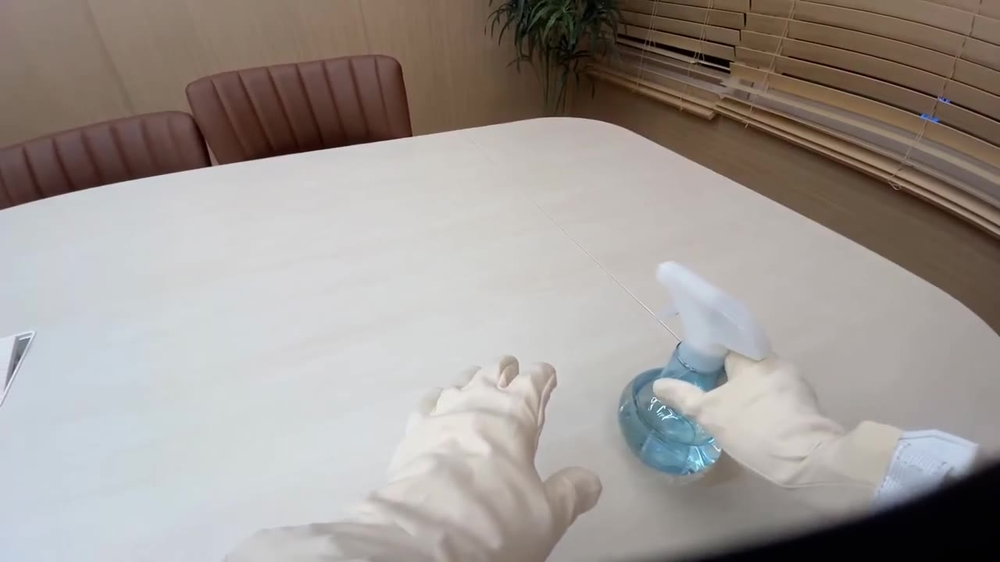
입력 클립의 한 프레임. 베이지 장갑과 밝은 책상, 나무 벽의 색이 비슷함.
손id 0 스프레이병id 1 책상 끝의 다른 물체
small object 결과. 스프레이병은 모든 프레임에서 같은 id를 유지함.
프롬프트별 검출, 에피소드 53
프롬프트
잡은 프레임
프레임당 개수
id (등장 프레임)
처리 시간
hand
100%
2.00
0 (150), 1 (150)
22.2초
handheld object
0%
0
없음
6.9초
small object
100%
1.44
0 (150), 1 (66)
16.9초
bottle
100%
1.00
0 (150)
14.9초
spray bottle
100%
1.00
0 (150)
17.2초
small object가 큰 병도 모든 프레임에서 찾고, 마스크는 실제 이름 spray bottle과 같음. 배경 물체 하나를 66프레임 더 잡는 차이뿐. OpenGraph 전체의 물체 프롬프트로 채택.
MediaPipe가 14%를 내는 유형의 장면인데 hand는 150프레임 모두 양손을 잡음. 어떤 프롬프트도 장갑을 물체로 잡지 않음.
오른손과 물체가 3px 안에 붙어 보이는 비율은 접촉 전 76~80%, 접촉 후 100%. 작은 용기 실험(EXP-02)보다는 벌어지지만 이것만으로는 자를 수 없음.
EXP-04API 없이 데이터 점검10/27
질문
SAM을 돌리기 전에, 데이터셋만으로 라벨 품질, 정답, 카메라 흔들림에 대해 무엇을 알 수 있는가.
입력
OpenGraph 72개 에피소드 전체, 138,629 프레임. 프레임마다 손별 촉각 센서 80개 값, 접촉 라벨, 머리 IMU.
계산 방법
촉각 접촉: 손별로 센서 80개 값을 더해 임계값보다 크면 접촉
일치율: 촉각 접촉과 데이터셋 라벨(annotation.hand)이 같은 프레임 비율
접촉 시작: 비접촉에서 접촉으로 바뀌는 프레임. 라벨 시작마다 가장 가까운 촉각 시작과의 차이
카메라 흔들림: 머리 자이로 크기의 에피소드별 95번째 백분위
결과 (임계값 800)
일치율 왼손
98.66%
일치율 오른손
97.15%
접촉 구간
261개
5프레임 미만 구간 / 간격
0 / 0
구간 길이 p10 / p50 / p90
24 / 246 / 978 프레임
접촉 시작 시점 차이 (촉각 시작 − 라벨 시작, 프레임)
건수
중앙값
0 일치
±5 이내
p90 |차이|
오른손
660
0
51.5%
93.5%
4
왼손
280
−1
29.6%
79.6%
9
오른쪽 그림: 스프레이병 작업 (에피소드 48~62)오른쪽 그림: 나머지 에피소드
왼쪽: 임계값별 라벨 일치율. 800 이상에서 평탄함. 임계값 0이면 에피소드 63~71이 72~74%로 떨어지며, 이 에피소드들은 손을 쉬고 있을 때도 장갑이 약한 압력을 기록함. 오른쪽: 에피소드별 머리 각속도.
촉각 임계값 800 채택. 라벨과 촉각 중 어느 쪽을 정답으로 써도 결과가 거의 같음.
오른손은 계획한 ±5프레임 허용 범위 사용 가능. 왼손은 촉각이 1프레임 먼저 오는 경향이 있고 ±5 이내가 79.6%라 범위를 넓히거나 손별로 보고.
짧은 구간과 간격이 없어 경계 채점 전에 라벨을 다듬을 필요 없음.
머리 IMU로 카메라 흔들림을 공짜로 얻음. 스프레이병 에피소드만 50~100배 흔들려, "카메라 안정성" 항목을 영상만으로 계산한 값과 대조할 수 있음.
EXP-05입력 30fps 대 10fps10/27
질문
세 프레임 중 하나만 보내도 손과 물체 추적이 그대로인가.
입력
앞의 물체 프롬프트 실험에서 쓴 두 클립(작은 용기 에피소드 1은 EXP-02, 스프레이병 에피소드 53은 EXP-03). 클립 프레임 0, 3, 6, …, 147만 남긴 50프레임.
방법
hand와 small object를 10fps 클립으로 다시 호출하고, 같은 시점의 30fps 결과와 마스크를 비교.
비교 방법
10fps 프레임 k가 30fps 프레임 3k와 같은 장면인지 픽셀 차이로 확인 (MSE 1.6~5.4, 바로 다음 프레임과는 78~206)
10fps의 각 id마다 가장 많이 겹치는 30fps id를 짝지음
짝끼리 프레임별 마스크 IoU 계산. 한쪽에만 있는 프레임은 0
처리량
hand 처리 시간
22.4초 → 9.5초 (에피소드 1)
small object
16.9초 → 5.9초 (에피소드 53)
원문 크기 (hand)
2.28 MB → 0.71 MB
주요 트랙의 마스크 IoU (10fps 대 30fps)
클립
트랙
검출 프레임
IoU 평균
최소
에피소드 1
왼손
50 / 50
0.992
0.987
에피소드 1
오른손
50 / 50
0.991
0.981
에피소드 1
잡는 용기
50 / 50
0.974
0.940
에피소드 53
왼손
50 / 50
0.990
0.975
에피소드 53
오른손
50 / 50
0.978
0.770
에피소드 53
스프레이병
50 / 50
0.983
0.968
0.77은 에피소드 53 클립 프레임 15 한 장으로, 머리가 돌면서 오른손이 화면 오른쪽 끝에 걸린 순간이다. 다음 프레임은 0.98로 돌아온다.
손스프레이병
에피소드 53. 위가 30fps, 아래가 10fps, 같은 원본 프레임. 두 줄의 마스크가 같음.에피소드 1. 잡는 용기(id 0)는 같음. 프레임 147의 두 번째 용기는 30fps에서 id 1, 10fps에서 id 3으로 번호만 다름.프레임별 마스크 IoU, 클립 전체에 걸친 트랙만. hand id 0은 에피소드 1에서 왼손, 에피소드 53에서 오른손이고 small object id 0은 두 클립 모두 잡는 물체. 점선은 촉각 접촉 시점.
10fps에서도 손과 잡는 물체는 같은 id, 같은 마스크. SAM 입력은 10fps로 결정.
잃는 것: 약 3초 동안 가려졌던 물체가 새 id로 돌아올 수 있음 (에피소드 1의 두 번째 용기). 접촉 단계는 손과 같이 움직이는 물체만 쓰므로 영향 없음.
10fps 신호는 0.1초(30fps 기준 3프레임) 단위라 ±5프레임 허용 범위의 최대 1/3을 씀. 경계 확정 단계에서는 경계 주변 30fps 프레임을 다시 봄.
EXP-06접촉 구간 검출 파일럿10/27
이 실험 뒤 측정 계획을 다시 맞추면서, 여기서 쓴 특징 13개 로지스틱 회귀는 비교 대상이 아니라 부록이 됐고 정답의 주 기준은 촉각 장갑으로 바뀌었다. 비교 대상은 요약 페이지의 측정 계획을 따른다. 접촉 그림 세 장은 주 정답(정리한 장갑)으로 다시 학습한 모델로 새로 그렸고, 표는 처음 실행(라벨, 장갑 원신호) 그대로다.
질문
튜닝 50개를 모두 보내기 전에, SAM 3.1이 에피소드 전체(1~2.5분)에서 추적을 유지하는가. 접촉 추정이 끝까지 돌고 첫 신호가 나오는가.
입력
튜닝 에피소드 3개. 0번은 146초, 투명 용기 사이로 작은 흑백 원판을 옮기며 오른손이 48번 닿는다. 30번은 68초, 주황색 종이 상자. 53번은 74초, 스프레이병이고 머리가 움직인다.
방법
에피소드 하나를 10fps 클립 하나로 만들어 hand와 small object로 한 번씩 요청. 접촉 추정 모델은 두 에피소드로 학습하고 남은 하나로 채점, 세 번 반복.
1. 보낸 요청
prompt: "hand" 또는 "small object"
video: 에피소드 하나 전체, 10fps
0번 1,457 / 30번 683 / 53번 741 frames
→ 에피소드 3개 × 프롬프트 2개 = 요청 6개
6개를 동시에 보내 93초에 모두 끝남. 요청 하나는 44~83초.
2. 받은 원문
형식은 API 연결 확인(EXP-01)과 같다. 프레임마다 <Nf>로 시작하는 한 줄. 에피소드 하나에 원문이 약 100 MB(압축 기준).
Meta 공식 파서는 마스크 하나에 약 0.4초라 전체를 읽는 데 18시간쯤 걸린다. 같은 디코더를 다시 구현해 약 3ms로 줄였고, 마스크 345개가 공식 결과와 비트 단위로 같았다.
에피소드 전체에 대한 SAM 결과
에피소드 0
에피소드 30
에피소드 53
요청 시간 (hand / small object)
77초 / 83초
44초 / 44초
48초 / 49초
손이 잡힌 프레임
99.4%
99.0%
100%
손 id 수
2
2
3 (하나는 6프레임)
프레임당 물체 (평균 / 최대)
6.9 / 12
2.3 / 4
1.6 / 3
물체 id 수
16
4
5
왼손 접촉 프레임에서 왼손 검출
100%
100%
96.7%
오른손 접촉 프레임에서 오른손 검출
98.3%
97.2%
100%
SAM이 손을 잡은 구간라벨상 접촉물체 id별 등장 구간
에피소드 0. 원판과 용기가 많아 물체 id가 16개, 한 프레임에 최대 12개까지 사용됨. SAM의 한도는 16개.
먼저 고쳐야 했던 것이 하나 있다. 처음에는 손 id마다 화면상 가운데 위치로 왼손·오른손을 정했다. 그런데 손은 화면 중앙을 자주 넘는다. 에피소드 53의 왼손은 프레임의 56%에서 화면 오른쪽에 있어서 오른손으로 잘못 붙었다. 지금은 두 손이 같이 보이는 프레임에서 더 자주 왼쪽에 있는 id를 왼손으로 정한다. 위 표는 고친 방식 기준이다.
숫자를 뽑는 방법
접촉 추정
10fps 프레임마다 손별로 특징 13개: 손 마스크와 가장 가까운 물체 마스크의 간격, 그 물체 중 손 옆에 붙은 비율, 카메라 움직임을 뺀 물체 이동, 물체와 손의 동반 이동, 손 이동, 보이는 물체 면적, 물체 수
규칙은 손이 대부분의 시간 동안 어떤 물체 옆에 있어서 긴 "접촉" 덩어리를 만든다. 그래서 IoU는 높지만 경계는 거의 못 찾는다. 시작 시점은 보정 없이 라벨보다 중앙값 6프레임(0.2초) 먼저 나왔고, 끝은 차이가 없었다. 장갑이 압력을 느끼기 전에 손이 닿아 보인다는 뜻이다. 지금은 학습 에피소드에서 잰 지연만큼 시작만 옮긴다.
프레임 AUC (해당 에피소드를 빼고 학습)
에피소드 0
에피소드 30
에피소드 53
왼손
0.93
0.70
0.91
오른손
0.59
0.65
0.92
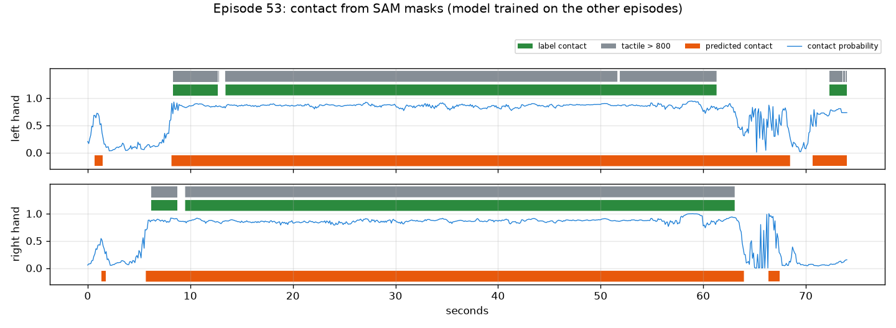
접촉 확률라벨상 접촉촉각 800 초과예측 접촉
에피소드 53, 에피소드 0과 30으로 학습한 모델. 오래 쥐는 구간은 검출함. 짧게 놓는 순간은 놓치고, 손이 병 옆에 남아 있는 동안 끝이 늦게 끊김.
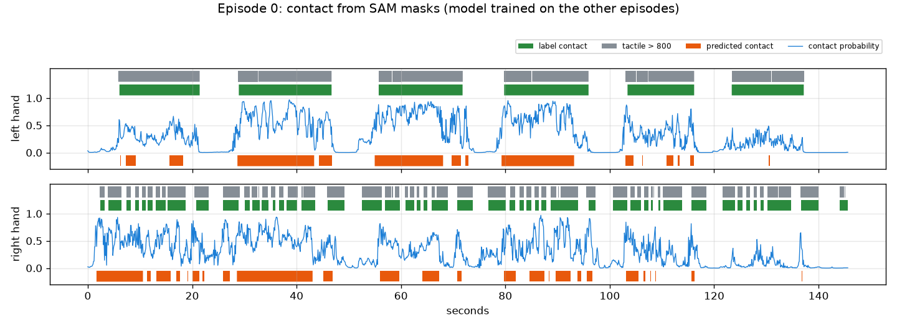
에피소드 0. 왼손은 용기를 여섯 번 길게 쥐고, 확률이 이를 따라감. 오른손은 작은 원판을 48번 집지만 용기 옆을 떠나지 않아 닿음과 안 닿음을 구분하지 못함.에피소드 30, 종이 상자. 긴 접촉은 검출함. 손을 상자에 압력 없이 올려 둔 짧은 틈은 접촉으로 판정하는 경우가 많음.
SAM 3.1은 10fps로 에피소드 전체를 처리함. 손 id는 끝까지 유지되고 각 손은 자기 접촉 프레임의 97~100%에서 잡힘. 에피소드 하나를 요청 하나로 보내도 됨.
큰 물체를 오래 쥐는 손은 프레임 단위로 잘 갈림(AUC 0.91~0.93). 용기 옆에서 작은 원판을 빠르게 집는 손은 못 가름(0.59).
경계 F1은 낮음(±5프레임 0.18). 학습 에피소드가 둘뿐이라 최종 수치는 아니지만, 마스크만으로는 ±5프레임 안에 경계를 놓을 수 없다는 신호. 계획에 있는 Muse Spark 경계 확인이 필요함.
보이는 접촉이 장갑 압력보다 약 0.2초 먼저 시작함. 끝은 지연 없음. 에피소드 3개에서 잰 값.
두 임계값을 채점한 것과 같은 확률에서 골랐기 때문에 위 수치는 약간 낙관적임.
EXP-07HOT3D 잡기 클립 수10/27
이 집계는 클립 규모를 가늠하는 용도로만 쓴다. 평가 2에 실제로 쓰는 클립은 손–물체 거리로 다시 자른 평가 2 클립 세트(EXP-11)다(가중치 학습 튜닝 400개, AUC 검증 1,426개).
질문
평가 2는 HOT3D의 잡기 장면을 클립으로 잘라 SAM 3.1과 Muse Spark에 넣는다. 시퀀스 전체를 넣지 않고 잡기 주변만 넣으려면, 클립이 몇 개이고 얼마나 긴가.
입력
정답이 있는 HOT3D Aria 136개 시퀀스(튜닝 85, 검증 51, RGB 480,375 프레임)의 모션캡처. 영상은 쓰지 않음.
방법
HOT3D의 물체는 손이 옮길 때만 움직인다. 물체가 움직인 구간 하나를 잡기 한 번으로 보고 앞뒤 1초를 붙여 클립으로 만든다.
잡기 구간을 찾는 규칙 (30fps)
속도 = 0.2초 동안의 위치 변화. 가만히 있는 물체는 약 0.0003 m/s, 들고 가는 물체는 0.2~1 m/s. 0.03 m/s를 넘으면 움직임
0.5초보다 가깝게 떨어진 움직임은 하나로 합침
0.3초보다 짧거나, 시작점에서 3cm도 못 간 움직임은 버림
클립 = 움직임 + 앞 1초(손 뻗기) + 뒤 1초(놓기)
클립마다 확인한 것
모션캡처 손목이 물체에서 25cm 안으로 들어오는가
클립 프레임의 90% 이상이 데이터셋 품질 검사를 통과하는가
이 집계는 클립 수를 가늠하기 위한 것. 평가 2의 실제 클립은 손과 물체 사이 거리로 다시 자름
모션캡처로 센 잡기 클립
튜닝
검증
전체
시퀀스
85
51
136
잡기 구간 (물체 이동)
1,709
915
2,624
손목 25cm 이내
1,581
871
2,452
손목 조건 + 품질 검사 통과
1,439
713
2,152
움직임 길이 중앙값
2.3초
3.5초
2.7초
클립 길이 중앙값 / p90
4.3 / 10.3초
5.5 / 11.7초
4.6 / 10.9초
왼쪽: 클립 길이. 53%가 5초보다 짧음. 점선은 SAM 요청 최소 길이(10fps로 50프레임). 오른쪽: 시퀀스당 클립 수. 쓸 만한 클립이 하나도 없는 시퀀스가 2개.
SAM에 보낼 방식별 요청 수와 프레임 수 (프롬프트 2개)
방식
요청
처리 프레임
136개 시퀀스 전체, 30fps
272
960,750
클립마다 요청, 30fps
4,304
766,080
클립마다 요청, 10fps
4,304
293,156
겹치는 클립을 합쳐서, 10fps
1,452
220,812
검증 713개 전부 + 튜닝 무작위 400개, 10fps
2,226
158,070
HOT3D에서 쓸 만한 잡기 클립은 약 2,150개, 길이 중앙값 4.6초.
움직인 물체의 93%에 손목이 25cm 안으로 들어옴. 물체 움직임만으로도 잡기를 잘 찾아냄.
튜닝 클립을 전부 쓸 필요는 없음. 점수는 입력 7개짜리 로지스틱 회귀라 튜닝 클립 수백 개면 충분하고, AUC와 신뢰구간은 검증 클립에서 나옴.
이때의 결정(검증 713개 + 튜닝 400개)은 평가 2 클립 세트(EXP-11)로 대체됨.
EXP-08HOT3D 카메라 보정 방향10/27
질문
평가 2는 모션캡처 손과 물체를 HOT3D 영상 위에 투영한다. 우리가 쓰는 영상은 똑바로 선 방향이고, Aria 원본 영상은 90도 돌아가 있다. 카메라 보정값과 데이터셋 2D 박스는 어느 쪽 기준인가. 틀리면 평가 2의 모든 투영이 엉뚱한 곳에 떨어진다.
입력
세 사람의 시퀀스 3개. P0001_10a27bf7(검증), P0002_016222d1, P0011_72efb935(튜닝).
방법
세 가지로 확인. 보정값으로 투영한 물체를 데이터셋 2D 박스와 비교, 영상에서 직접 찾은 손을 데이터셋 손 박스와 비교, 영상 위에 그려서 눈으로 확인.
확인 1: 보정값 대 데이터셋 물체 박스
시퀀스마다 25프레임에서 물체 3D 모델을 모션캡처 자세로 투영: 물체 → 세계 → 헤드셋 → RGB 카메라 → 어안 렌즈 모델
투영된 점들을 감싸는 박스를 데이터셋 물체 박스와 IoU로 비교
투영 그대로, 시계 방향 90도, 반시계 방향 90도 세 가지로 비교
확인 2: 영상 대 데이터셋 손 박스
HOT3D는 맨손이라 MediaPipe가 잘 동작함. 시퀀스마다 영상 150프레임에서 손을 찾음
그 손 박스를 데이터셋 손 박스와 방향별로 비교
영상이 타임스탬프보다 1프레임 적어서 시간 어긋남도 −2~+2프레임으로 같이 확인
확인 1: 투영 대 데이터셋 물체 박스 (IoU 평균)
시퀀스
박스 수
투영 그대로
시계 90°
반시계 90°
P0001_10a27bf7
68
0.86
0.00
0.00
P0002_016222d1
116
0.98
0.02
0.02
P0011_72efb935
111
0.95
0.01
0.01
보정값과 데이터셋 박스는 서로 잘 맞는다. 투영 계산(자세와 렌즈 모델)이 맞다는 뜻이다. 하지만 이것만으로는 영상이 어느 방향인지 알 수 없다.
확인 2: 영상에서 찾은 손 대 데이터셋 손 박스 (IoU 평균)
시퀀스
그대로, 0
반시계, 0
시계, −1
시계, 0
시계, +1
P0001_10a27bf7
0.01
0.00
0.41
0.43
0.42
P0002_016222d1
0.03
0.00
0.43
0.45
0.44
P0011_72efb935
0.00
0.00
0.37
0.38
0.38
MediaPipe 박스는 손 관절 21개만 감싸고 데이터셋 박스는 보이는 손 전체를 감싸서 IoU는 0.4 근처가 최대다. 중요한 건 최고점의 위치이고, 세 시퀀스 모두 시계 방향, 시간 어긋남 0에서 가장 높다.
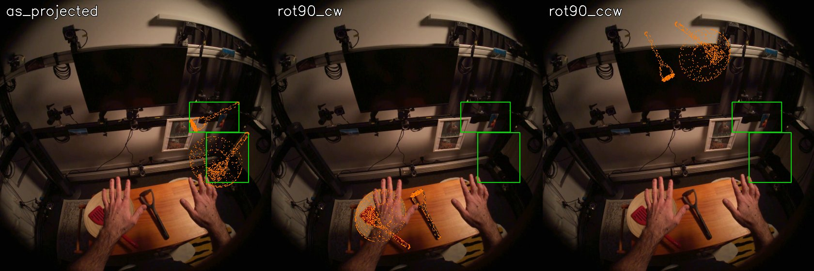
데이터셋 물체 박스투영한 3D 모델
P0002_016222d1. 왼쪽부터 투영 그대로, 시계 90°, 반시계 90°. 시계 방향일 때만 모델이 책상 위 실제 주걱과 접시에 놓임. 데이터셋 박스는 그대로 그리면 모니터 근처 엉뚱한 곳에 위치함.
데이터셋 물체 박스투영한 3D 모델
P0001_10a27bf7. 시계 방향이면 머그가 오른손 아래, 덤벨이 실제 덤벨 위에 놓임.
카메라 보정값과 데이터셋 2D 박스(물체, 손)는 Aria 원본 방향 기준. 우리가 쓰는 영상은 그 원본을 시계 방향으로 90도 돌린 것.
열린 문제 1번 해결. 이제 SAM에 보낼 클립 위에 모션캡처 손과 물체를 그릴 수 있고, SAM 박스도 같은 회전 뒤에 데이터셋 박스와 비교할 수 있음.
EXP-09HOT3D 손가락 끝 3D 위치10/27
질문
평가 2의 "로봇이 따라할 수 있는가" 정답은 물체 옆 손가락 끝의 3D 위치가 필요하다. HOT3D는 손을 두 형식으로 준다. MANO는 별도 사이트에 등록해야 받는 모델 파일이 필요하고, UmeTrack은 HOT3D 안에 들어 있다. UmeTrack만으로 손가락 끝을 얻을 수 있는가.
입력
시퀀스 3개(P0001_10a27bf7, P0002_016222d1, P0011_72efb935)의 UmeTrack 손 모델과 손 자세 기록, 물체 3D 모델.
방법
UmeTrack 손 모델로 정기구학을 직접 구현해 손 관절 21개 위치를 계산. 영상과 데이터셋 손 박스로 맞는지 확인하고, 잡는 동안 손가락 끝과 물체 표면의 거리를 잼.
손 관절을 계산하는 방법
사람마다 손 모델 하나: 관절 22개(정지 위치, 회전축, 부모), 뼈에 붙은 지점 21개, 788개 꼭짓점 메시
시점마다 손별로 관절 각도 22개와 세계 좌표계의 손목 자세
관절마다 부모 위에 쌓아 각도만큼 회전시키고, 지점은 뼈를 따라 움직임. 지점 0~4가 다섯 손가락 끝
모델은 한 손 기준이라 다른 손은 거울상. 어느 손을 어느 축으로 뒤집는지 몰라서 손마다 네 가지(그대로, x·y·z 거울)를 모두 시험
확인 방법
확인 1: 지점 21개를 원본 영상에 투영(EXP-08의 렌즈 모델)해 데이터셋 손 박스 안에 들어오는 비율. 시퀀스마다 120프레임
확인 2: 뼈대를 영상 위에 그려서 눈으로 확인
확인 3: 잡기 클립 집계(EXP-07)의 잡기 구간마다, 움직임 한가운데와 시작 1.5초 전에 가장 가까운 손가락 끝과 물체 표면(3D 모델에서 2만 점)의 거리
확인 1: 손 지점이 데이터셋 손 박스 안에 들어온 비율 (P0001 / P0002 / P0011)
손
그대로
x 거울
y 거울
z 거울
손 0
1.00 / 1.00 / 1.00
0.06 / 0.05 / 0.07
0.72 / 0.66 / 0.58
0.99 / 0.99 / 0.99
손 1
0.05 / 0.05 / 0.06
1.00 / 1.00 / 1.00
0.06 / 0.05 / 0.06
0.06 / 0.06 / 0.06
손 1은 x축으로 뒤집었을 때만 맞는다. 그러니 손 모델은 손 0에 그대로 쓰고, 손 1은 x 거울이다. 손 0은 z 거울에서도 박스 안에 들어오는데, 박스로는 손과 그 거울상을 구분할 수 없기 때문이다. 실제 모델이라면 한 손에는 뒤집지 않고 맞아야 하고, 손 1이 그 경우를 배제한다.
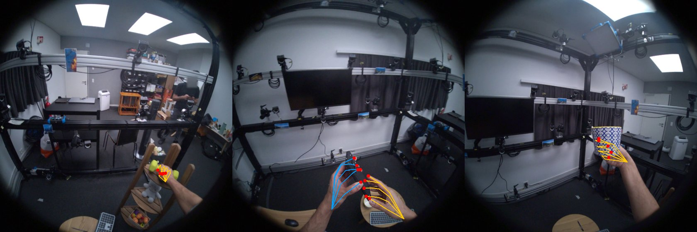
손 0 (왼손)손 1 (오른손)손가락 끝
P0001_10a27bf7. 뼈대가 덤벨, 휴대폰, 머그를 쥔 실제 손 위에 놓임.P0002_016222d1. 오른손 손가락 끝이 감자 으깨개 손잡이를 감쌈.
확인 3: 손가락 끝과 물체 표면 사이 거리
잡기 구간
가장 가까운 끝, 중앙값
p90
15mm 이내
끝 2개 이상 15mm 이내
움직임 한가운데
65
2.3mm
6.0mm
97%
95%
움직임 1.5초 전
60
265mm
601mm
5%
5%
물체가 움직이는 동안 손가락 끝은 표면에서 몇 mm 안에 있고, 움직이기 전에는 손이 멀리 있다. "로봇이 따라할 수 있는가" 정답은 이 신호 위에 만든다.
UmeTrack만으로 손가락 끝을 포함한 손 지점 21개를 물체와 같은 세계 좌표계에서 3D로 얻음. MANO는 필요 없고 등록도 필요 없음.
손 0은 왼손으로 모델을 그대로, 손 1은 오른손으로 모델을 x축 거울로 씀.
잡는 동안 손가락 끝과 표면의 거리가 몇 mm 수준이라 정답 규칙("엄지와 다른 손가락 하나 이상이 표면 가까이, 어느 손가락도 깊이 들어가지 않음")에 쓰기 충분함.
다음: 이 지점들을 Allegro 로봇 손으로 옮겨 로봇 손가락 끝과 물체 표면을 잼. 이것으로 정답 라벨을 만들고 튜닝 세트에서 쏠림을 확인.
EXP-10로봇 재현 정답 라벨과 쏠림 점검10/27
이전 라벨: 이 라벨은 주로 리타게팅의 부작용을 잰다(EXP-15). 손 크기 비율로 늘린 리타게팅이 Allegro 손가락 끝을 사람 손가락 끝에서 31mm, 꽉 쥔 캔 표면에서 25mm 떨어뜨리고, 라벨이 손 크기에 따라 달라진다. 아래 54%가 쏠림 점검을 통과한 것도 이 왜곡 때문이다. 평가 2의 정답은 v2 라벨로 바뀌었다(EXP-16). 기록으로 남겨 둔다.
질문
평가 2의 정답은 "로봇 손이 이 사람의 잡기를 따라할 수 있는가"이다. 가장 큰 위험은 라벨 쏠림이었다. Allegro 로봇 손이 사람 손보다 커서, 기준이 엄격하면 거의 전부 불가, 느슨하면 거의 전부 가능이 될 수 있다. 계획은 튜닝 세트에서 가능 비율이 20~80% 안에 들어올 것을 요구한다.
입력
튜닝 85개 시퀀스의 잡기 1,422개(EXP-07, 접촉 프레임에 손 자세가 있는 것). 접촉 프레임은 물체 움직임의 한가운데.
방법
물체에 더 가까운 손의 지점(EXP-09)을 Allegro 로봇 손으로 옮기고, 로봇 손가락 끝과 물체 표면 사이 거리로 판정.
크기 비율 = Allegro 손목~검지 끝 길이(0.247m) / 그 사람의 길이. 중앙값 1.26
Allegro 손목을 사람 손목 자리에 같은 방향으로 놓고, 로봇 손의 모든 링크 점을 물체 좌표계로 옮김
목표 벡터와의 오차 중앙값 4.3%
"따라할 수 있음" 판정 규칙
물체 표면까지의 부호 거리: 3D 모델 표면 3만 점 중 가장 가까운 점 기준, 안쪽이면 음수
손목을 최대 R만큼(1cm 간격) 옮겨 보면서, 아래를 모두 만족하는 위치가 하나라도 있으면 가능
로봇 엄지 끝이 표면에서 near 이내
다른 로봇 손가락 끝 하나 이상도 near 이내
어떤 로봇 링크도 물체 안으로 deep보다 깊이 들어가지 않음
기준별 "따라할 수 있음" 비율 (튜닝, 잡기 1,422개)
near
deep
손목 고정
최대 2cm 이동
최대 4cm 이동
1.0cm
1cm
9.4%
33.5%
45.9%
1.5cm
0.5cm
19.7%
53.3%
66.8%
1.5cm
1cm
20.7%
54.4%
66.9%
1.5cm
2cm
21.6%
55.2%
67.1%
2.0cm
1cm
39.0%
75.7%
86.6%
3.0cm
1cm
69.1%
94.4%
97.4%
계획의 20~80% 범위
near 기준이 커질수록 올라가는 "따라할 수 있음" 비율, 손목 이동 한계 세 가지.
비율은 거의 near 기준과 손목 이동 한계로 정해짐. deep 기준은 거의 영향이 없음. 손목을 고정했을 때 로봇 링크가 1cm보다 깊이 들어가는 잡기는 4.1%뿐.
손목 고정 상태에서 로봇 엄지 끝은 표면에서 중앙값 11mm, 가장 가까운 다른 손가락 끝은 19mm.
같은 프레임에서 사람 손 기준 규칙(엄지와 다른 손가락 하나가 15mm 이내)은 89.5%가 만족.
정한 기준
near 1.5cm(EXP-09의 사람 손가락 기준과 같은 거리), deep 1cm, 손목 최대 2cm 이동. 이때 "따라할 수 있음"은 54.4%. 이 이동 한계에서는 near를 0.75cm부터 2.0cm까지 바꿔도 20~80% 범위 안에 있어서, 경계에 아슬아슬하게 걸친 값이 아니다. 이후로 이 기준은 고정한다.
사람별 "따라할 수 있음" 비율 (정한 기준)
P0002
P0003
P0009
P0011
P0014
P0015
잡기 수
147
122
427
326
147
253
따라할 수 있음
29%
38%
76%
48%
35%
60%
물체별 "따라할 수 있음" 비율 (잡기 25개 이상인 물체)
낮은 쪽
비율
높은 쪽
비율
토마토소스 캔
26%
플라스크
94%
수프 캔
27%
그릇
93%
마우스
28%
화병
84%
랜치 소스 병
31%
대나무 접시
82%
감자 으깨개
34%
무늬 머그
78%
왼손 50%, 오른손 57%.
물체 모델사람 손 지점Allegro 링크 (손목 이동 후)Allegro 손가락 끝
튜닝 잡기 네 개. 왼쪽 둘은 따라할 수 있음(커피포트), 오른쪽 둘은 따라할 수 없음(보드 마커, 파마산 캔).
정답 라벨을 만드는 과정: 모션캡처 손 → UmeTrack 지점 → Allegro 로봇 손 → 물체 모델까지의 부호 거리.
정한 기준에서 라벨 쏠림은 문제되지 않음. 튜닝 세트 54%가 "따라할 수 있음"이고, 기준을 넓게 바꿔도 20~80% 안에 머묾.
다만 비율은 대부분 near 기준이 정함. 라벨은 "로봇 손가락 끝이 얼마나 가까이 오는가"라는 연속값을 예/아니오로 자른 것이라, 하나의 수치가 아니라 기준별 곡선과 함께 보고함.
물체(26~94%)와 사람(29~76%)에 따라 크게 달라짐. 평가 2가 예측할 거리가 있다는 뜻이고, 검증 세트 사람들의 비율은 다를 수 있음. AUC는 비율에 좌우되지 않음.
한계: Allegro 점은 손가락 표면이 아니라 링크 위치임. 안쪽·바깥쪽 부호는 가장 가까운 표면 점의 법선으로 정해서 얇은 모서리에서 틀릴 수 있음. 잡기마다 한 프레임만 봄.
EXP-11평가 2 클립과 검증 세트 라벨10/27
이전 라벨: 이 실험은 처음 만든 정답 라벨(EXP-10)을 썼다. 이 라벨은 리타게팅 부작용을 주로 재서(EXP-15) v2 라벨로 바뀌었다(EXP-16). 아래 "따라할 수 있음" 비율은 이전 라벨 기준이다. 클립 자체는 그대로 쓴다. 검증 클립의 v2 라벨은 46.4%(EXP-20).
질문
튜닝 세트에서 고정한 기준(EXP-10)으로 검증 세트에서도 "따라할 수 있음" 비율이 비슷하게 나오는가. 그리고 계획대로 우리 영상 파이프라인이 아니라 모션캡처 손–물체 거리로 평가 2 클립을 자르면 어떤 클립과 라벨이 나오는가.
입력
정답이 있는 HOT3D 136개 시퀀스 전체, 30fps RGB 프레임 전부.
방법
EXP-10의 규칙(near 1.5cm, deep 1cm, 손목 최대 2cm 이동)을 바꾸지 않고 검증 세트 잡기에 적용. 클립은 손가락 끝과 물체 표면 거리로 새로 자름.
클립을 자르는 규칙
손과 물체 쌍마다, UmeTrack 손가락 끝 2개 이상이 물체 표면 15mm 안이면 그 프레임은 접촉
0.5초보다 짧은 틈은 이어 붙이고, 0.3초 이상 이어진 접촉만 남김
클립 = 접촉 앞 1초(손 뻗기) + 접촉 + 뒤 1초(놓기)
물체가 3cm 이상 움직이고(스친 것이 아니라 실제로 집은 것), 클립 프레임 90% 이상이 품질 검사를 통과한 것만 남김
라벨을 붙이는 방법
접촉 구간의 한가운데 프레임에서, 그 클립의 손을 Allegro 로봇 손으로 옮겨 판정
클립은 손 하나 단위. 양손으로 들면 클립이 두 개, 내려놨다 다시 잡아도 두 개
136개 시퀀스 전 프레임의 손가락 끝 거리를 한 번에 계산 (12개 프로세스로 17초)
고정한 기준을 검증 세트에 적용 (EXP-07의 잡기 기준)
잡기
따라할 수 있음
사람 손 기준 확인
사람별
튜닝
1,422
54.4%
89.5%
29~76%
검증
707
52.6%
90.0%
P0001 30%, P0010 47%, P0012 73%
모션캡처 손–물체 거리로 자른 평가 2 클립
튜닝
검증
접촉 (손 단위)
2,987
1,858
물체가 3cm 이상 움직임
2,656
1,750
거기에 품질 검사 통과
2,433
1,449
라벨 붙음 (접촉 프레임에 손 자세 있음)
2,385
1,426
접촉 길이 중앙값
2.2초
2.2초
클립 길이 중앙값 / p90
4.2 / 9.7초
4.2 / 8.9초
접촉 대부분 동안 양손이 물체에
29.5%
33.5%
따라할 수 있음
53.3%
51.7%
클립 40개 이상인 물체 중 가장 낮은 쪽은 파마산 캔 27%, 수프 캔 29%, 감자 으깨개 32%, 토마토소스 캔 33%, 우유팩 34%. 가장 높은 쪽은 무늬 머그 73%, 그릇 75%, 흰 머그 75%, 대나무 접시 77%, 공룡 장난감 79%.
왼손오른손15mm따라할 수 있음따라할 수 없음
P0002_016222d1(튜닝). 위: 감자 으깨개에서 각 손의 두 번째로 가까운 손가락 끝까지의 거리. 점선 아래가 접촉. 아래: 이 시퀀스에서 잘린 모든 클립. 아래 막대가 왼손, 위 막대가 오른손.
같은 시퀀스 안에서 겹치는 클립은 하나의 SAM 요청으로 묶어 보낸다. SAM이 그 구간의 모든 손과 물체를 추적하고, 클립마다 자기 프레임만 꺼내 쓴다. 이렇게 하면 처리할 프레임이 절반 정도로 준다.
평가 2의 클립 목록과 정답이 모션캡처만으로 준비됨. 튜닝 2,385개, 검증 1,426개, 두 세트 모두 52~53%가 "따라할 수 있음".
검증 세트 비율(잡기 기준 52.6%, 클립 기준 51.7%)이 튜닝과 비슷해서, 고정한 기준이 그대로 통함. 사람별 차이는 검증 세트에서도 큼(30~73%).
클립의 약 3분의 1은 양손 잡기. 라벨은 손 단위.
평가 2에 쓸 클립은 검증 1,426개 전부와 튜닝 무작위 400개(seed 20261026).
EXP-12영상 계산 채점 항목의 신호와 물체 기준선10/27
이전 라벨: 이 실험은 처음 만든 정답 라벨(EXP-10)을 썼다. 이 라벨은 리타게팅 부작용을 주로 재서(EXP-15) v2 라벨로 바뀌었다(EXP-16). 아래 물체 기준선과 항목별 AUC는 이전 라벨 기준이다. v2 라벨로 다시 잰 값은 EXP-17(물체 0.74, 영상 계산 항목 0.53).
질문
평가 2의 주 비교는 우리 점수 대 체크리스트 없이 같은 질문을 받은 Muse Spark다. "따라할 수 있음" 비율이 물체마다 26~94%로 달라서, 물체만 알아봐도 꽤 맞힐 수 있다. Muse Spark 없이 영상에서 계산하는 채점 항목 3개에 신호가 있는지, 물체만으로는 얼마나 맞히는지 본다.
입력
EXP-11의 튜닝 클립 2,385개(53.3%가 "따라할 수 있음"). 검증 클립은 보지 않음.
방법
시퀀스마다 영상을 10fps로 한 번 훑어 카메라 움직임과 MediaPipe 손을 구하고, 클립마다 항목 3개를 상·중·하로 매김. 튜닝 6명 중 한 명씩 빼고 나머지로 학습해 뺀 사람을 채점.
세 항목 (영상만 씀)
카메라 안정성: 프레임 사이 코너를 추적해 맞춘 움직임의 클립 내 90번째 백분위
리타게팅 복원성: 접촉 동안 MediaPipe 손을 Allegro로 옮겨, 손이 잡힌 비율 × (1 − 벡터 오차)
동작 완결성: 접촉 전 1초(손 뻗기)와 후 1초(놓기)에 손이 보이고 움직이는가
등급 경계는 튜닝 세트 3분위로 정하고 고정
비교한 모델 (사람 하나씩 빼기)
물체 기준선: 나머지 5명에서 잰 물체별 "따라할 수 있음" 비율을 뺀 사람의 클립에 그대로 줌
세 항목 등급만 넣은 로지스틱 회귀
물체 비율 + 세 항목
항목이 제대로 재는지는 모션캡처로 따로 확인(입력으로 쓰지 않음)
항목이 재려는 것을 제대로 재는가
확인
결과
카메라 움직임 대 모션캡처 머리 회전 (클립별 스피어만)
0.93
MediaPipe 왼손·오른손이 모션캡처 손과 일치
1,197 / 1,241 (96.5%)
접촉 동안 클립의 손을 MediaPipe가 찾은 비율, 중앙값
87%
리타게팅 벡터 오차, 중앙값
10%
"따라할 수 있음"을 얼마나 가르는가 (튜닝 클립, AUC)
신호
AUC
카메라 안정성 등급
0.533
리타게팅 복원성 등급
0.494
동작 완결성 등급
0.515
같은 세 항목, 물체 안에서 (가중 평균)
0.517 / 0.529 / 0.530
세 등급 로지스틱 회귀, 사람 하나씩 빼고 6명 평균
0.534
물체 기준선, 사람 하나씩 빼고 6명 평균
0.698 (사람별 0.59~0.81)
물체 비율 + 세 등급
0.693
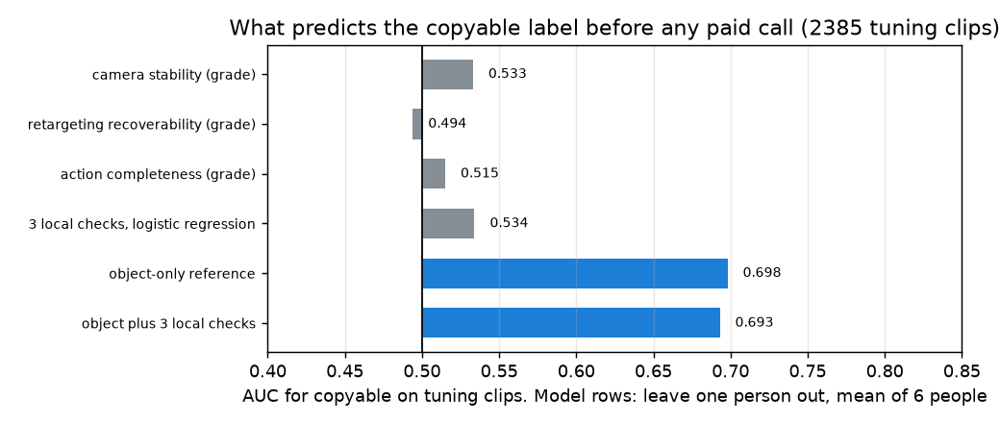
영상 계산 항목 세 개 (각각, 합친 것)물체만, 물체 + 세 항목
세 항목은 물체 위에 아무것도 더하지 못함.
사람을 합친 AUC의 함정
빼고 채점한 6명을 하나로 합쳐 AUC를 내면 값이 떨어진다. 물체 기준선은 0.616, 세 등급은 0.365로 무작위보다도 낮다. 원인은 항목이 아니라 사람이다. 사람마다 "따라할 수 있음" 비율이 29%에서 74%까지 달라서, 비율이 높은 사람을 빼고 학습한 모델은 그 사람 클립에 낮은 점수를 준다. 합치면 클립이 아니라 사람을 줄 세우게 된다. 검증 세트도 사람별로 30%, 47%, 73%로 같은 문제가 있으므로, 검증 AUC는 합친 값과 사람별 값을 함께 보고한다.
세 항목은 측정 도구로는 정확함. 카메라 움직임은 머리 회전과 0.93으로 맞고, MediaPipe는 96.5%에서 맞는 손을 찾음.
그러나 "따라할 수 있음"에 대한 정보는 없음(AUC 0.49~0.53, 물체 안에서도 같음). 세 항목은 영상이 얼마나 좋은지를 재고, 정답 라벨은 Allegro 손이 그 잡기에 맞는지를 잼. 서로 다른 질문.
물체만으로 AUC 0.70(사람별 평균). Muse Spark가 물체를 알아보면 그 근처가 나올 것이고, 지금 계획대로라면 우리 점수는 주 비교에서 질 수 있음. Muse Spark 항목 2개(손가락 가림, 물체 성질)가 이 신호를 담아야 함.
할 일: 리타게팅 복원성을 지원서가 말한 대로 "손 모양이 로봇 손에 맞는가"를 재도록 바꿈. 후보는 MediaPipe에서 얻는 손 벌림, 손가락 굽힘, 잡기 유형, 나중에 SAM 마스크로 물체 크기 대 손 크기.
보완재 비교(Muse Spark 단독 대 Muse Spark + 우리 항목)를 주 비교 옆에 같이 보고하고, 사람별 AUC를 합친 AUC 옆에 둠.
한계: MediaPipe가 원본 어안 영상에서 돎. 3분위 등급은 작은 효과를 가리지만 0.5에 이렇게 가까운 AUC를 가리지는 않음.
EXP-13손 모양으로 바꾼 리타게팅 항목10/27
이전 라벨: 이 실험은 처음 만든 정답 라벨(EXP-10)을 썼다. 이 라벨은 리타게팅 부작용을 주로 재서(EXP-15) v2 라벨로 바뀌었다(EXP-16). 아래 AUC는 이전 라벨 기준이다. v2 라벨에서 영상 손 모양은 0.52로 신호를 잃었다(EXP-17). 이전 라벨의 0.63은 리타게팅 부작용을 배운 것이었다.
질문
EXP-12의 영상 계산 항목은 영상은 잘 재지만 "따라할 수 있음"을 가르지 못했다. 지원서는 리타게팅 항목을 "손 모양이 로봇 손에 맞는가"라고 적었다. 영상에서 얻은 손 모양이 "따라할 수 있음"을 예측하는가, 물체 기준선 위에 무언가를 더하는가.
입력
튜닝 클립 2,385개 중 접촉 동안 MediaPipe가 그 손을 한 번도 찾지 못한 54개를 뺀 2,331개(53.4%가 "따라할 수 있음"). 검증 클립은 쓰지 않음.
방법
접촉 프레임(10fps)의 손 지점 21개에서 특징 10개의 중앙값을 냄. 같은 특징을 영상(MediaPipe)과 모션캡처(UmeTrack)에서 각각 계산. 모션캡처 쪽은 완벽한 손 추적기일 때의 상한을 보려는 것이고 점수의 입력으로는 쓰지 않음.
손 모양 특징 10개
손 벌림: 엄지 끝–검지 끝, 엄지 끝–중지 끝 거리를 손 크기(손목–중지 뿌리)로 나눔
다섯 손가락의 굽힘: 1 − (뿌리–끝 직선 거리) / (관절을 따라간 길이)
벌어짐: 검지와 새끼손가락 방향 사이 각도
오므림: 손가락 끝과 손바닥 중심 거리의 평균을 손 크기로 나눔
집기 대 쥐기: 검지 굽힘 − 약지·새끼 굽힘 평균
채점 방법
로지스틱 회귀, 튜닝 6명 중 한 명씩 빼고 학습해 뺀 사람을 채점
AUC는 사람별로 내고 6명 평균을 씀(EXP-12의 합산 함정 때문)
"물체 안"은 같은 물체끼리만 비교한 AUC를 클립 수로 가중 평균한 값
특징 하나씩 (튜닝 클립, AUC)
특징
영상
모션캡처
손 벌림, 엄지–검지
0.37
0.37
손 벌림, 엄지–중지
0.39
0.38
오므림
0.39
0.35
굽힘, 중지 / 약지
0.59 / 0.59
0.62 / 0.63
벌어짐
0.54
0.61
집기 대 쥐기
0.51
0.49
0.5보다 낮은 AUC는 관계가 거꾸로라는 뜻이다. 손을 크게 벌릴수록 "따라할 수 없음" 쪽이다. 영상과 모션캡처가 방향과 크기에서 일치한다.
모델 비교 (사람 하나씩 빼고)
모델
AUC, 6명 평균
사람별 범위
물체 안
물체 기준선
0.693
0.59~0.81
—
영상 손 모양
0.632
0.56~0.71
0.48
영상 손 모양 + 물체
0.722
0.62~0.84
0.42
모션캡처 손 모양 (상한)
0.671
0.58~0.74
0.56
모션캡처 손 모양 + 물체
0.729
0.63~0.82
0.51
물체만영상 손 모양모션캡처 손 모양따라할 수 있음따라할 수 없음
왼쪽: 모델별 AUC. 오른쪽: 접촉 동안 엄지 끝과 중지 끝 사이 벌림. 따라할 수 없는 잡기가 영상과 모션캡처 모두에서 더 벌어져 있음.
영상 손 모양은 "따라할 수 있음"을 예측함(0.63). 영상 계산 채점 항목(EXP-12)과 다름. 완벽한 모션캡처 손 모양(0.67)이 얻는 것의 대부분을 영상으로 얻음.
주로 물체 크기를 대신 재는 신호임. 손을 크게 벌리면 큰 물체이고, 큰 물체(캔, 우유팩)는 덜 따라할 수 있음. 같은 물체 안에서는 가르지 못함(0.48).
물체 기준선(0.69)보다는 낮지만, 둘을 합치면 0.72로 물체 위에 약 0.03을 더함.
평가 2에서는 영상 계산 항목보다 낫지만, Muse Spark가 물체를 잘 알아보면 주 비교에서는 여전히 질 수 있음. 이득이 보일 곳은 보완재 비교(Muse Spark 단독 대 Muse Spark + 우리 항목).
결정: 리타게팅 복원성 항목을 "손 모양 적합도"로 바꿈. 영상 특징 10개 로지스틱 회귀를 튜닝 3분위로 등급화. 최종 점수 가중치용 튜닝 클립 400개와 겹치지 않는 튜닝 클립으로 학습해 두 모델이 학습 데이터를 공유하지 않게 함.
한계: MediaPipe가 원본 어안 영상에서 돎. 합친 모델의 물체 안 AUC가 0.42로 0.5보다 낮음. 물체를 가로질러서는 오므린 손이 "따라할 수 있음"이지만, 같은 물체 안에서는 관계가 약하고 조금 거꾸로라 "손을 오므리면 따라할 수 있다"로 읽으면 안 됨.
EXP-14방법 B(SAM 규칙) 파일럿10/27
질문
측정 계획의 평가 1 비교 대상 중 방법 B는 지원서의 SAM 규칙(마스크 겹침 + 동반 이동)이다. 구현됐는가, 장갑 정답에 대해 끝까지 도는가, 참고 행 "항상 접촉"·"항상 비접촉"과 비교하면 어떤가. 결과가 아니라 코드 점검이다.
입력
튜닝 에피소드 0, 30, 53의 SAM 3.1 출력(EXP-06, 10fps).
방법
각 에피소드마다 나머지 두 에피소드에서 기준값과 지연 보정을 골라 채점(한 에피소드씩 빼기). 고르는 기준은 boundary F1 ±15프레임 + IoU.
방법 B 규칙 (손별, 10fps)
근접: 손 마스크가 물체 마스크에서 gap_px 픽셀 안
동반 이동: 가장 가까운 물체가 0.3초 동안 자기 크기의 move배 이상 움직이고(카메라 움직임 제외) 손과 함께 움직임
접촉 = 근접이 이어진 구간(0.2초 이하 틈은 이음) 중 동반 이동 프레임이 하나라도 있는 구간. 물체가 손과 함께 움직였으면 닿은 것이고, 손이 물체 곁에 있는 동안 계속됨
장갑 정리본 (이 실험 이후 주 정답): 촉각 합 > 800에서 0.1초 이하 압력 끊김은 잇고, 0.1초 미만 튀는 값은 버림
장갑 원신호: 정리하지 않은 촉각 합 > 800 (확인용)
데이터셋 접촉 라벨 (확인용)
장갑 원신호는 깜빡인다
세 에피소드에서 장갑은 접촉 구간 124개를 낸다(양손 합). 그중 21개가 0.2초보다 짧고, 구간 사이 틈 28개가 0.1초 이하다. 데이터셋 라벨은 78개 구간에 그런 것이 하나도 없다. 이 깜빡임은 손을 뗀 것이 아니라 압력이 임계값을 넘나드는 것이라, 어떤 영상 방법도 볼 수 없는 경계를 만든다. 경계 수는 장갑 원신호 248개, 정리본 190개, 라벨 156개.
방법 B 대 참고 행 (한 에피소드씩 빼고)
정답
방법
F1 ±5
F1 ±15
IoU
찾은 경계 / 정답
장갑 정리본 (주)
방법 B
0.07
0.15
0.747
52 / 190
장갑 정리본 (주)
항상 접촉
0.02
0.02
0.669
12 / 190
장갑 정리본 (주)
항상 비접촉
0
0
0
0 / 190
장갑 원신호
방법 B
0.04
0.12
0.745
52 / 248
장갑 원신호
항상 접촉
0.02
0.02
0.666
12 / 248
라벨
방법 B
0.02
0.14
0.744
52 / 156
라벨
항상 접촉
0.04
0.04
0.663
12 / 156
에피소드별(장갑 원신호): 0번 IoU 0.72·F1 ±15 0.05, 30번 0.60·0.23, 53번 0.94·0.27. 매번 gap_px 2가 골라졌다. 장갑 원신호 대비 시작은 4프레임 빠르고 끝은 6프레임 늦다(중앙값). 참고로 접촉 구간 파일럿(EXP-06)의 부록 모델은 같은 에피소드에서 F1 0.16 / 0.30, IoU 0.64였지만, 그 기준값은 채점한 예측에서 골라서 낙관적인 값이다.
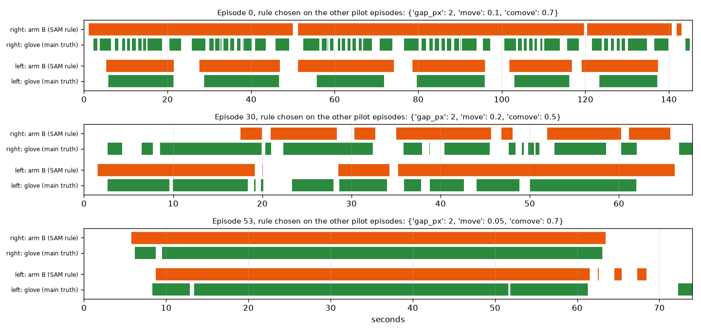
정리한 장갑 (주 정답)방법 B 예측 (기준값은 나머지 두 에피소드에서 이 정답으로)
오래 쥐는 구간은 검출함(53번, 0번 왼손). 손이 쉬지 않고 물체들 곁에서 일할 때(0번 오른손, 30번)는 여러 접촉을 하나의 긴 덩어리로 묶음.
방법 B와 참고 행 두 개가 장갑과 라벨 정답에 대해 끝까지 돎. 기준값은 다른 에피소드에서 고름. 튜닝 50개에 돌릴 코드는 준비됨.
방법 B는 IoU에서 "항상 접촉"을 이기지만(0.75 대 0.67) 경계는 190~248개 중 52개만 찾음. 1인칭 시점에서는 손이 늘 어떤 물체 몇 픽셀 안에 있어서 접촉 사이에 근접 구간이 거의 끊기지 않음. 물체 프롬프트 실험(EXP-02, EXP-03)에서 이미 보였던 문제.
방법 C도 같은 한계를 가짐. C는 B가 찾은 경계만 옮기므로 B가 묶어 버린 접촉을 되살리지 못함.
결정: 주 정답을 장갑 정리본으로 확정(깜빡임 정리 규칙은 결과를 보지 않고 고정). 남은 것: 가장 가까운 물체가 바뀌거나 손이 잠깐 떨어지면 접촉을 끊는 규칙 추가, 튜닝 50개에서만 고름.
에피소드 3개로는 규칙을 고를 수 없음. 다음 단계는 튜닝 나머지 47개 SAM 실행(EXP-32).
EXP-15정답 라벨은 로봇을 재는가, 리타게팅을 재는가10/27
질문
EXP-10 라벨에 두 가지 경고가 있었다. 원통을 감싸 쥐는 것은 Allegro 손에 가장 쉬운 잡기인데 캔, 우유팩, 병이 "따라할 수 없음"(26~33%)으로 나왔다. 사람별 비율은 크기 비율(Allegro 길이 / 사람 손 길이)이 클수록 낮았다(9명, r = −0.78). 라벨이 Allegro 손을 재는지, 리타게팅 방식의 부작용을 재는지 확인한다.
입력
튜닝 클립 2,385개(EXP-11). "따라할 수 있음" 규칙은 그대로: near 1.5cm, deep 1cm, 손목 최대 2cm 이동. 검증 클립은 쓰지 않음.
방법
같은 클립에 리타게팅 방식 세 가지로 라벨을 다시 냄. 고르는 기준은 결과를 보기 전에 측정 계획에 적음.
리타게팅 방식 세 가지
비율(EXP-10): 손목에서 손가락 끝까지의 벡터를 Allegro 길이 / 사람 손 길이로 늘림, 손목은 사람 손목에 고정
크기 1.0: 같은 벡터를 늘리지 않음
위치 맞춤: Allegro 손가락 끝과 손가락 뿌리를 사람 위치에 직접 맞춤, 손 받침은 자유
고르는 기준 (결과 전에 고정)
충실도: 사람이 단단히 쥔 잡기(엄지와 손가락 하나 더가 표면 15mm 안)에서 Allegro 손가락 끝과 같은 사람 손가락 끝 사이 거리의 중앙값
손 크기: 같은 물체 안에서 사람 손 길이와 라벨의 순위 상관(가중 평균). 0에 가까워야 함
비율: 20~80% 안
규칙: 손 크기 상관 |r| ≤ 0.1이고 비율이 범위 안인 방식 중 충실도가 가장 좋은 것
방식별 결과 (튜닝 클립 2,385개)
비율 (EXP-10)
크기 1.0
위치 맞춤
따라할 수 있음
53.3%
93.7%
95.6%
충실도: Allegro 손가락 끝–사람 손가락 끝 (중앙값)
31.0mm
6.9mm
11.4mm
같은 물체 안 손 크기 상관
+0.19
−0.13
−0.07
사람이 단단히 쥔 잡기 중 따라할 수 있음
55%
99%
99%
캔, 우유팩, 병: 따라할 수 있음
31%
96%
97%
캔, 우유팩, 병: 엄지 외 가장 가까운 Allegro 손가락 끝과 표면
바깥 25.5mm
2.8mm
2.2mm
머그, 그릇, 접시, 보온병, 꽃병: 따라할 수 있음
75%
94%
95%
Allegro 손목–사람 손목 (중앙값)
0 (고정)
0 (고정)
26mm
비율 20~80%
통과
실패
실패
손 크기 상관 |r| ≤ 0.1
실패
실패
통과
가장 낮은 물체는 위치 맞춤에서 키보드 67%, 대나무 접시 90%, 보온병 91%. 크기 1.0에서 키보드 58%, 새집 장난감 85%, 휴대폰 88%. 납작하거나 얇은 물체다.
왼쪽: 물체 그룹별 "따라할 수 있음" 비율. 가운데: 충실도, 낮을수록 좋음. 오른쪽: 튜닝 사람별 비율과 손 길이.
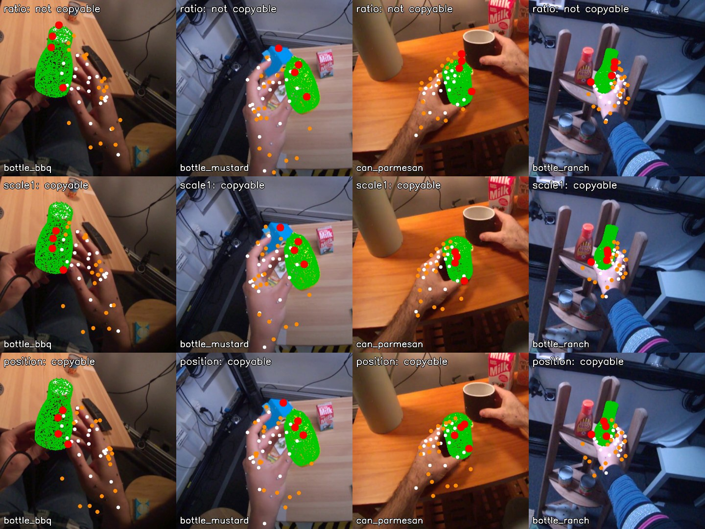
물체 모델사람 손 지점Allegro 링크 지점Allegro 손가락 끝
캔, 우유팩, 병 잡기 네 장면. 위에서부터 비율, 크기 1.0, 위치 맞춤. 비율 방식에서는 Allegro 손가락 끝이 물체 너머에 떨어지고, 나머지 둘에서는 표면 위에 놓임.
미리 정한 규칙으로는 통과하는 방식이 없음.
지적이 맞았음. 처음 만든 정답 라벨(EXP-10)은 주로 리타게팅의 부작용을 잼. Allegro 손가락 끝이 사람이 둔 곳에서 31mm, 단단히 쥔 캔 표면에서 25mm 떨어지고, 라벨이 손 크기에 따라 달라짐(+0.19). 그 실험(EXP-10)에서 쏠림 점검을 통과한 53%는 이 왜곡에서 나온 값.
손가락 끝을 충실하게 옮기면(크기 1.0, 위치 맞춤) 사람 잡기의 94~96%가 "따라할 수 있음". 실패는 키보드, 접시 같은 납작하거나 얇은 물체로, 큰 네 손가락 손에 그럴듯함.
지금 규칙은 리타게팅이 정직해지면 잡기를 가르지 못함. 계획의 위험 1(라벨 쏠림)이 제대로 된 이유로 나타난 것.
규칙의 약한 부분: "Allegro 손 어느 부분도 물체 안 깊이 들어가지 않음"을 손가락과 손바닥 모양이 아니라 링크 원점 약 20개에서만 검사함. 큰 손이 손가락 끝을 사람 자리에 두면 손가락 몸통이나 손바닥이 물체를 파고드는 경우가 많은데 이 검사가 놓침.
라벨이 고쳐질 때까지 그 위에 쌓은 결과는 보류: 검증 세트 비율(EXP-11), 물체 기준선(EXP-12), 손 모양 항목(EXP-13). 평가 2 클립(EXP-11) 자체는 유효.
다음 정의 후보(계산 전에 측정 계획에 고정): 위치 맞춤 리타게팅, 실제 Allegro 링크 메쉬로 충돌 검사(손가락이나 손바닥 표면이 deep보다 깊이 들어가면 불가), 물체에 닿은 사람 손가락마다 대응하는 Allegro 손가락 끝이 사람 접촉점 근처에 닿는지 확인. 그다음 같은 기준(손 크기 상관 0 근처, 비율 20~80%)으로 튜닝에서만 고름.
EXP-16정답 라벨 v2: 메쉬 충돌과 접촉점 도달10/27
질문
라벨 방식 점검(EXP-15)에서 처음 만든 정답 라벨(EXP-10)은 리타게팅 부작용을 주로 쟀고, 충실하게 옮기면 거의 모든 잡기가 "따라할 수 있음"이 됐다. 충돌을 링크 원점에서만 검사했기 때문이다. 더 엄격하고 물리적인 정의로 쓸 수 있는 라벨이 나오는가.
입력
튜닝 클립 2,385개(EXP-11), 클립마다 접촉 프레임 한 장과 그 클립의 손. 검증 클립은 쓰지 않음.
방법
정의, 기준값, 받아들이는 규칙을 계산 전에 측정 계획에 적음. 위치 맞춤 리타게팅으로 Allegro 손가락 끝과 뿌리를 사람 손에 맞추고(손 받침은 자유), 링크 21개마다 시각 메쉬에서 약 300점을 뽑아 순운동학으로 놓음. 손을 최대 2cm(1cm 격자) 옮겨 보며 세 조건을 모두 만족하는 위치가 하나라도 있으면 "따라할 수 있음".
세 조건
잡기: Allegro 엄지 끝과 다른 손가락 끝 하나가 물체 표면 1.5cm 안
도달: 물체에 닿은(끝이 15mm 안) 사람 손가락(엄지, 검지, 중지, 약지)마다 대응하는 Allegro 손가락 끝이 2.0cm 안. 새끼손가락은 대응 손가락이 없어 보지 않음
충돌 없음: Allegro 메쉬 점이 물체 안 5mm보다 깊이 들어가지 않음
기준값의 근거와 받아들이는 규칙
1.5cm: 손가락 끝 3D 위치 실험(EXP-09)부터 쓴 사람 접촉 거리
2.0cm: Allegro 손가락 끝 폭 정도
5mm: 모션캡처와 모델 오차 크기(EXP-09에서 손가락 끝이 표면에서 약 2mm)
받아들임: 비율 20~80%, 같은 물체 안 손 길이와 라벨의 순위 상관 |r| ≤ 0.1. 실패해도 기준값은 옮기지 않음
받아들이는 규칙 (튜닝 클립 2,385개)
점검
결과
통과
따라할 수 있음 비율
47.0%
예
같은 물체 안 손 크기 상관
+0.04
예
실패 원인: 어떤 손 위치로도 만족하지 못한 조건 (전체 클립 대비)
조건
비율
충돌 없음
25.5%
도달
10.9%
잡기
3.9%
손을 옮기지 않으면 가장 깊은 Allegro 메쉬 점은 물체 안 7.9mm(중앙값). Allegro 손가락 끝은 사람 손가락 끝에서 11.5mm, 자유로운 손 받침은 사람 손목에서 26mm(중앙값).
왼쪽: 허용 깊이와 도달 거리에 따른 비율. 가운데: 어떤 손 위치로도 만족하지 못한 조건. 오른쪽: 튜닝 사람별 비율과 손 길이.
물체 모델사람 손 지점Allegro 메쉬 점물체 안 5mm보다 깊은 메쉬 점
결과별 튜닝 클립 두 개씩. 왼쪽: 따라할 수 있음(지우개, 파마산 캔). 가운데: 충돌, 더 큰 Allegro 손가락이 키보드와 뒤집개 안으로 들어감. 오른쪽: 도달 실패, 넓은 그릇과 접시에서 Allegro 손이 사람처럼 손가락 끝을 벌려 놓지 못함.
v2 라벨은 계산 전에 정한 규칙을 통과함. 47%가 "따라할 수 있음"이고 손 크기와 거의 관계없음(물체 안 +0.04, 사람별 44~54%, 처음 라벨(EXP-10)은 29~74%).
실패가 물리적으로 말이 됨. 더 큰 Allegro 손가락이 납작하거나 붐비는 물체(키보드, 뒤집개)에 부딪히고, 넓은 물체(그릇, 접시)는 사람처럼 감싸지 못함. 원통이 더는 "따라할 수 없음"으로 몰리지 않음. 아령 10%, 보온병 14%처럼 덜 분명한 것은 따로 볼 필요가 있음.
한계: 비율이 깊이 한도에 크게 좌우됨(2mm 18%, 10mm 66%). 5mm는 모션캡처와 모델 오차 크기라, 라벨은 부분적으로 "측정 오차 안에서 Allegro 손이 물체와 얼마나 겹치는가"임. 기준값은 계산 전에 고정했고 곡선을 함께 보고함.
한계: 도달 1cm면 거의 남지 않음. 맞춘 Allegro 손가락 끝이 사람 것에서 약 11mm 떨어져 있기 때문. 클립마다 한 프레임만 보고, 자유 받침이 손을 사람 손목에서 26mm 옮김. 안쪽·바깥쪽 부호는 가장 가까운 표면 점으로 정함.
다음: v2 라벨로 물체 기준선(EXP-12)과 손 모양 항목(EXP-13)을 튜닝에서 다시 계산하고, 같은 기준값으로 검증 클립의 v2 라벨을 냄.
EXP-17v2 라벨을 무엇이 예측하는가 (EXP-12, 13 다시)10/27
질문
영상 계산 채점 항목(EXP-12)과 손 모양 항목(EXP-13)은 리타게팅 부작용을 주로 재던 처음 라벨(EXP-10)로 채점했다. v2 라벨(EXP-16)에서는 영상 계산 항목, 영상 손 모양, 물체 종류가 "따라할 수 있음"을 얼마나 예측하는가.
입력
튜닝 클립 중 접촉 동안 MediaPipe 손이 있는 2,331개(EXP-13과 같이 54개 제외). v2 비율 47%. 검증 클립은 쓰지 않음.
방법
EXP-12, 13과 같은 특징과 모델. 튜닝 6명 중 한 명씩 빼고 학습해 뺀 사람을 채점하고, 사람별 AUC의 6명 평균을 씀. 그림이 깊이 한도에 따라 달라지는지 보려고 v2 라벨을 깊이 2mm, 10mm로도 채점함.
비교한 모델
영상 계산 항목 3개: 카메라 안정성, 리타게팅 복원성, 동작 완결성
물체 기준선: 나머지 5명에서 잰 물체별 v2 비율
영상 손 모양: 접촉 중 MediaPipe 특징 10개
모션캡처 손 모양: 같은 특징 10개를 UmeTrack에서 계산, 상한으로만 봄
위 항목과 물체 비율을 합친 모델
이전 라벨 대비
물체 기준선: 0.698 → 0.741
영상 손 모양: 0.632 → 0.521
영상 손 모양 + 물체: 0.722 → 0.751
영상 계산 항목 3개: 0.49~0.53 → 0.529
주 라벨 (깊이 5mm), 튜닝 클립 AUC
모델
6명 평균
사람별 범위
물체 안
카메라 / 리타게팅 / 완결성 등급, 하나씩
0.521 / 0.538 / 0.480
영상 계산 항목 3개
0.529
0.49~0.57
0.50
물체 기준선
0.741
0.67~0.80
영상 손 모양
0.521
0.49~0.57
0.53
영상 손 모양 + 물체
0.751
0.68~0.80
0.46
영상 계산 항목 3개 + 영상 손 모양 + 물체
0.748
0.68~0.80
0.46
모션캡처 손 모양 (상한)
0.617
0.55~0.73
0.55
모션캡처 손 모양 + 물체
0.764
0.72~0.83
0.48
깊이 한도를 바꾸면 (6명 평균 AUC)
모델
2mm (18%)
5mm (47%)
10mm (66%)
영상 계산 항목 3개
0.579
0.529
0.519
물체 기준선
0.719
0.741
0.761
영상 손 모양
0.604
0.521
0.542
영상 손 모양 + 물체
0.726
0.751
0.756
모션캡처 손 모양 (상한)
0.728
0.617
0.643
깊이 2mm깊이 5mm (고정)깊이 10mm
튜닝 클립의 v2 라벨 AUC, 사람 하나씩 빼고 6명 평균. 세로선이 0.5.
EXP-13의 영상 손 모양 항목은 신호를 잃음(이전 라벨 0.632, v2 0.521). 리타게팅 부작용을 배우고 있었음. 이전 라벨에서는 손을 크게 벌린 잡기일수록 늘린 Allegro 손가락 끝이 물체 밖으로 밀려 "따라할 수 없음"이 됐음.
물체 종류만으로 v2 라벨을 잘 예측함(0.74, 다른 깊이에서 0.72~0.76). v2에서 따라할 수 있는지는 주로 물체의 성질임. 납작하거나 붐비거나 넓은 물체는 실패하고 작고 단단한 물체는 통과함.
영상 항목은 물체 위에 거의 더하지 못함. 손 모양 +0.01, 영상 계산 항목 3개는 0.
손 자세에는 정보가 조금 있음(모션캡처 손 모양 0.62). 원본 어안 영상의 MediaPipe로는 되살리지 못함(0.52). 같은 물체 안에서는 모션캡처 손 모양도 거의 더하지 못함(0.55).
평가 2에 대한 의미: Muse Spark가 물체를 알아보고 큰 로봇 손이 어떤 물체에 약한지 어느 정도 안다면 0.74 가까이 나올 수 있고, 지금의 체크리스트는 주 비교에서 짐. 보완재 비교에서는 약 0.01을 더함.
물리적으로 말이 되는 라벨이 문제를 영상이 아니라 물체의 문제로 만듦. 체크리스트는 영상 품질을 재도록 설계됐음. 이제 평가 2의 주 문제는 라벨이 아니라 이 불일치임.
깊이 한도는 수치를 몇 백분의 일 바꿈. 실제로 쓸 수 있는 신호 중에서는 모든 한도에서 물체 종류가 가장 강함. 2mm에서는 모션캡처 손 모양(영상 방법이 아닌 상한)이 0.728로 물체(0.719)를 조금 넘음.
EXP-18물체 형상이 "따라할 수 있음" 신호를 담는가 (선택지 A 점검)10/27
질문
EXP-17에서 v2 라벨은 주로 물체의 성질이었다(물체 종류만으로 0.741). 선택지 A는 질문과 라벨을 그대로 두고 "물체 성질"을 Muse Spark가 영상에서 매기는 구체적인 물체 항목들로 바꾼다. 이 방향은 물체 이름이 아니라 몇 가지 물체 속성으로 신호를 담을 수 있을 때만 의미가 있다. 담을 수 있는가, 처음 보는 물체에서도 통하는가.
입력
v2 라벨이 붙은 튜닝 클립 2,385개(47.0%), 물체 33개. 검증 클립은 쓰지 않음.
방법
물체 3D 모델에서만 뽑은 특징 7개로 로지스틱 회귀. 클립마다 그 물체의 값을 줌. 특징, 시험, 판정 규칙은 계산 전에 측정 계획에 적음.
물체 특징 7개 (3D 모델)
방향을 맞춘 경계 상자의 가장 긴 변, 중간 변, 가장 짧은 변
납작함(짧은 변 / 긴 변), 길쭉함(중간 변 / 긴 변)
부피, 채움(부피 / 상자 부피). 모델이 닫혀 있지 않아 부피는 볼록 껍질로 계산
시험과 판정 규칙 (계산 전에 고정)
사람 하나씩 빼기: 사람별 AUC의 6명 평균
물체 하나씩 빼기: 채점하는 물체를 모델이 한 번도 보지 않음. 합친 AUC와 시퀀스 재추출 95% 구간
둘 다 0.65 이상이면 통과, 하나라도 0.60 미만이면 실패, 그 사이면 약함
물체 종류 대 물체 형상 (튜닝 클립, AUC)
시험
물체 종류 (참고)
물체 형상
사람 하나씩 빼기, 6명 평균
0.742
0.695 (사람별 0.65~0.76)
물체 하나씩 빼기, 합침
0.5 (처음 보는 물체는 채점 불가)
0.673 (0.645~0.698)
미리 정한 규칙으로 판정: 통과. 가장 강한 특징 하나는 물체의 가장 긴 변이다. 혼자서 AUC 0.32, 즉 방향을 뒤집으면 0.68로, 물체가 길수록 따라할 수 있는 경우가 적다. 부피도 같은 방향(0.38).
물체 종류물체 형상통과선 0.65실패선 0.60따라할 수 있음 0%50%100%
왼쪽: 사람 또는 물체를 하나씩 뺐을 때의 AUC. 오른쪽: 물체마다 가장 긴 변과 가장 짧은 변, 점 크기는 클립 수, 색은 따라할 수 있는 비율. 길거나 부피가 큰 물체(키보드, 보온병, 공룡 장난감, 그릇)는 대부분 따라할 수 없고, 손에 쥘 만한 작은 물체(거치대, 머그, 캔, 병)는 대부분 따라할 수 있음.
형상으로 덜 설명되는 물체: 우유팩 두 개(높이 19cm, 8%와 19%), 아령(18cm, 10%), 작은 정육면체인데 46%만 나온 퍼즐 장난감.
물체 크기와 모양 숫자 7개가 물체 이름이 주는 신호의 대부분을 되살림(0.695 대 0.742). 이름과 달리 처음 보는 물체에서도 통함(0.673 대 0.5).
선택지 A에 근거가 있음. Muse Spark에게 물체에 대해 구체적으로 묻는 체크리스트(손에 비해 얼마나 큰가, 얼마나 긴가, 납작한가, 넓은가)가 신호를 담을 수 있고, 새 물체로도 가져갈 수 있음. 재사용할 수 있는 점수에 필요한 성질.
보이지 않은 것: Muse Spark가 영상에서 이 크기들을 읽을 수 있는지, 그리고 그냥 물어본 Muse Spark가 똑같이 잘하는지.
한계: 물체가 33개뿐임. 물체 하나씩 빼기 구간은 물체가 아니라 시퀀스를 재추출해서, 물체에 대한 실제 불확실성보다 좁음. 부피와 채움은 볼록 껍질 기준. 결과를 거의 특징 하나(가장 긴 변)가 끌고 감.
다음: Muse Spark 물체 항목(손 대비 크기, 길이, 납작함, 폭, 손잡이, 주변 물체 붐빔)과 상·중·하 기준을 쓰고, 3D 모델 수치를 대신 넣어 점검한 뒤, 같은 기준값으로 검증 클립 v2 라벨을 냄.
EXP-19체크리스트용 물체 항목 6개, 대리 등급으로 점검10/27
질문
선택지 A는 "물체 성질"을 Muse Spark가 상·중·하로 매기는 구체적인 항목들로 바꾼다. 물체 형상 점검(EXP-18)에서 정확한 물체 크기는 신호를 담았다. 기준을 고정한 거친 3단계 항목 6개도 그 신호를 지키는가. 여기서는 Muse Spark가 답할 것을 대신해 정답(3D 모델, 모션캡처, 물체를 직접 본 판단)에서 등급을 냄.
입력
v2 라벨이 붙은 튜닝 클립 2,385개(47.0%). 검증 클립은 쓰지 않음.
방법
항목, 기준, 통과 규칙은 계산 전에 측정 계획에 적음. 상은 항상 "큰 네 손가락 로봇 손에 쉬움"이고, 방향은 데이터가 아니라 항목의 뜻으로 정함. 등급 6개로 로지스틱 회귀. 사람 하나씩 빼기(6명 평균 AUC)와 물체 하나씩 빼기(합친 AUC), 둘 다 0.65 이상이면 통과.
항목과 기준, 대리 등급의 출처
항목
상
중
하
대리 등급
손 대비 크기 (가장 긴 변)
15cm 이하
15~25cm
25cm 초과
3D 모델 상자
모양 (중간 변 / 긴 변)
0.6 이상
0.3~0.6
0.3 미만
3D 모델 상자
두께 (가장 짧은 변)
4cm 이상
2~4cm
2cm 미만
3D 모델 상자
감쌀 폭 (중간 변)
8cm 이하
8~14cm
14cm 초과
3D 모델 상자
손잡이
있음
일부
없음
물체당 영상 한 장을 눈으로
빈 공간 (가장 가까운 다른 물체까지)
10cm 이상
4~10cm
4cm 미만
접촉 프레임의 모션캡처 물체 위치
손잡이는 라벨을 보기 전에 아래 시트로 판단했다. 있음: 커피포트, 아령, 보온병, 머그 두 개, 감자 으깨개, 뒤집개, 나무 숟가락, 꽃병. 일부: 화이트보드 지우개. 나머지는 없음.
물체마다 잡는 장면 한 장. 손잡이 항목 판단에만 사용함.
물체 항목 6개 대 정확한 크기 (튜닝 클립, AUC)
시험
항목 6개
정확한 형상 (EXP-18)
사람 하나씩 빼기, 6명 평균
0.683 (0.60~0.73)
0.695
물체 하나씩 빼기, 합침
0.666 (0.639~0.693)
0.673
미리 정한 규칙으로 판정: 통과.
항목별
항목
혼자 AUC
전체 모델의 가중치
손 대비 크기
0.673
+2.16
모양
0.567
−0.30
두께
0.536
−0.24
감쌀 폭
0.518
−1.10
손잡이
0.478
−0.18
빈 공간
0.534
+0.09
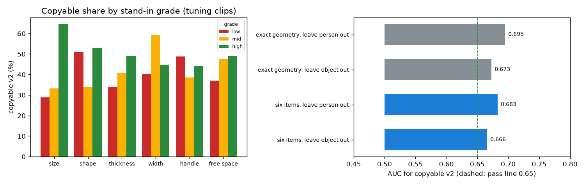
하중상정확한 형상항목 6개통과선 0.65
왼쪽: 항목과 등급별 "따라할 수 있음" 비율. 오른쪽: 거친 항목 6개가 정확한 크기의 신호를 거의 다 유지함.
기준을 고정한 거친 항목 6개가 물체 신호를 거의 다 지킴(0.683, 0.666 대 정확한 크기 0.695, 0.673). Muse Spark가 대략 맞게 매기면 체크리스트가 "따라할 수 있음" 신호를 담을 수 있고, 처음 보는 물체에도 통함.
거의 모든 일을 손 대비 크기가 함(혼자 0.673).
뜻과 다르게 움직인 항목 둘. 손잡이: 손잡이 있는 물체가 조금 덜 따라할 수 있음(0.478). 여기서 손잡이 있는 물체는 대부분 긴 도구(뒤집개, 으깨개, 숟가락)나 큰 물체(보온병, 커피포트)라 크기가 이김. 감쌀 폭: 크기를 알면 음의 가중치. 같은 길이라면 가는 물체(숟가락, 마커, 리모컨)가 더 어려움. 방향은 튜닝 클립에서 회귀가 배우고, 기준은 그대로 둠.
빈 공간은 거의 더하지 못함(0.534). 대부분의 잡기에 16cm 이상 여유가 있음(중앙값).
보지 않은 것: Muse Spark가 어안 영상에서 이 등급을 읽을 수 있는지. 전체 실행 전에 튜닝 클립 몇 개로 Muse Spark 등급을 이 대리 등급과 비교하는 짧은 파일럿을 함.
EXP-20검증 클립 v2 라벨 (튜닝에서 고정한 기준값)10/27
질문
v2 라벨은 튜닝 클립에서 정의하고 받아들였다(EXP-16). 같은 기준값으로 검증 클립 1,426개에서는 어떻게 나오는가. 라벨만 본다. 검증 클립에서 어떤 모델이나 체크리스트도 채점하지 않았다.
입력
EXP-11의 검증 클립, 사람 P0001, P0010, P0012.
방법
EXP-16과 같은 코드와 기준값: 위치 맞춤 리타게팅, 손 이동 최대 2cm, 잡기 1.5cm, 도달 2.0cm, Allegro 메쉬 점이 물체 안 5mm를 넘지 않음.
튜닝 대 검증
튜닝
검증
클립
2,385
1,426
따라할 수 있음
47.0%
46.4%
사람별
44~54%
P0001 46%, P0010 51%, P0012 43%
같은 물체 안 손 크기 상관
+0.04
−0.08
실패: 충돌 / 도달 / 잡기
25.5% / 10.9% / 3.9%
31.1% / 8.6% / 5.6%
Allegro 손가락 끝–사람 손가락 끝 (중앙값)
11.5mm
11.4mm
깊이 2mm / 5mm / 10mm (도달 2cm)
18% / 47% / 66%
20% / 46% / 65%
검증에서 가장 낮은 물체는 키보드 1%, 보온병 4%, 그릇 15%, 꽃병 16%, 오렌지주스 팩 20%. 가장 높은 물체는 회색 거치대 93%, 검은 거치대 92%, 흰 머그 84%, 화이트보드 마커 80%.
튜닝검증계획의 20~80% 범위물체같은 값 선
왼쪽: 사람별 "따라할 수 있음" 비율. 오른쪽: 두 세트에 각각 클립 20개 이상인 물체 30개의 튜닝 비율 대 검증 비율. 순위 상관 0.85.
고정한 v2 규칙이 그대로 통함. 검증 46.4%로 튜닝과 가깝고 범위 안이며, 사람별 43~51%. 이전 라벨의 사람별 차이(30~73%)는 사라짐.
물체별 비율이 두 세트에서 거의 같음(순위 상관 0.85). 그래서 튜닝에서 만든 물체 기준선은 검증에서도 강할 것이고, 주 비교는 이 점을 염두에 두고 읽어야 함.
이 라벨이 이제 평가 2 AUC의 정답. 검증 클립에서는 아직 어떤 점수나 체크리스트도 돌리지 않음.
EXP-21평가 1 각 방법이 낼 수 있는 최고 점수10/27
질문
평가 1의 Muse Spark 방법 두 개(A Muse Spark 단독, C SAM 규칙 + Muse Spark 경계 확인)의 코드를 썼다. 돈을 쓰기 전에 두 가지를 본다. 코드가 답을 접촉 구간과 점수로 제대로 바꾸는가. 그리고 만든 구조상 각 방법이 낼 수 있는 최고 점수는 얼마인가. A는 5fps로는 ±5프레임에 닿을 수 없다는 지적이 있었고, C는 B가 찾은 경계만 옮길 수 있다.
입력
튜닝 파일럿 에피소드 0, 30, 53. 주 정답은 정리한 촉각 장갑.
방법
자체 점검: Muse Spark 대신 주 정답 자체를 답으로 줌. 완벽한 Muse Spark인 셈이라 코드를 점검하면서 각 방법의 상한을 줌. 두 방법 모두 뒤에 B 규칙(0.2초 이하 틈은 잇고 0.2초보다 짧은 접촉은 버림)을 적용.
A: Muse Spark 단독
720p 에피소드에서 6프레임마다 하나(5fps), 요청 하나에 10프레임
프레임과 손마다 접촉 여부를 답함
샘플 하나가 자기 6프레임을 대표
C: B + Muse Spark 경계 확인
B가 찾은 시작과 끝마다 15프레임 앞부터 15프레임 뒤까지 5프레임 간격으로 7장
Muse Spark가 첫 접촉 프레임이나 마지막 접촉 프레임을 고르거나 B를 그대로 둠
B 규칙은 다른 파일럿 에피소드에서 고른 것(EXP-14)
정리한 장갑 기준, 파일럿 3개, 양손
방법
경계 F1 ±5
경계 F1 ±15
접촉 IoU
찾은 경계 / 실제
A, 5fps에서 완벽한 답
0.956
0.956
0.957
174 / 190
B, SAM 규칙 실측 (EXP-14)
0.066
0.149
0.747
52 / 190
C, B + 완벽한 경계 선택
0.149
0.149
0.752
52 / 190
장갑 원신호 기준 A 상한은 ±5에서 0.825, 데이터셋 라벨 기준 0.830(±15에서 0.939). C는 0.12~0.15에 머문다.
경계 F1 ±5프레임경계 F1 ±15프레임접촉 IoU
방법별 최고 점수. A는 5fps에서 완벽한 답, B는 실측, C는 B 위에 완벽한 경계 선택.
코드는 제대로 동작함. 구조가 허락하는 곳에서는 완벽한 답이 거의 완벽한 점수를 냄.
5fps는 A가 ±5프레임에 닿는 것을 막지 않음. 5fps의 완벽한 Muse Spark는 0.96. 그 지적은 너무 셌음. 실제 Muse Spark가 모자라면 그건 프레임 수가 아니라 답 때문.
C는 B를 크게 넘을 수 없음. B가 찾은 경계 190개 중 52개만 옮길 수 있어 완벽하게 골라도 0.15. 지금 구조의 "SAM + Muse Spark"는 B가 접촉을 몇 개로 나누느냐에 묶이고, B는 연이은 접촉을 하나로 묶음(EXP-14).
그래서 계획대로의 A 대 C 비교는 구조 때문에 A에 유리함. 돈을 쓰기 전에 C를 공정한 비교로 만들 방법을 정해야 함: (1) 튜닝 50개에서 가장 가까운 물체가 바뀌거나 손이 잠깐 떨어지면 접촉을 끊는 규칙으로 B의 재현율을 먼저 올림(튜닝 나머지 SAM 실행 필요), 또는 (2) C가 B의 긴 접촉 구간 안도 초당 몇 프레임씩 훑어 놓친 놓음과 닿음을 찾게 함(Muse Spark 호출이 늘어남).
EXP-22가장 가까운 물체가 바뀌면 접촉을 끊는 방법 B10/27
질문
EXP-14에서 방법 B는 연이은 접촉을 하나로 묶어 경계 190개 중 52개만 찾았다. 최고 점수 실험(EXP-21)에서는 그 때문에 C의 최고 점수도 0.15에 묶였다. 가장 가까운 물체가 바뀔 때 접촉을 끊거나, 짧은 틈을 잇지 않고 남기면 B가 접촉을 더 찾는가.
입력
튜닝 파일럿 에피소드 0, 30, 53. 주 정답은 정리한 촉각 장갑.
방법
EXP-14와 같은 특징과 에피소드 하나씩 빼기 탐색에 선택지 두 개를 더함. 격자에 첫 B 규칙(EXP-14)도 들어 있어 탐색이 그것을 고를 수도 있음. 그 뒤 새 B 위에서 C의 최고 점수(완벽한 경계 선택)를 다시 잼.
물체 바뀜으로 끊기
가까운 프레임이 이어지는 동안 가장 가까운 물체 id가 바뀌면 새 접촉 시작
서로 다른 물체의 두 접촉은 잇지 않음
틈 메우기
10fps에서 0, 1, 2프레임 틈을 이음
EXP-14는 항상 2프레임을 이었음
정리한 장갑 기준, 에피소드 하나씩 빼기
EXP-14 B
EXP-22 B
항상 접촉
경계 F1 ±5
0.066
0.151
0.02
경계 F1 ±15
0.149
0.323
0.02
접촉 IoU
0.747
0.663
0.669
찾은 경계 / 실제
52 / 190
392 / 190
12 / 190
C 최고 점수, 경계 F1 ±5
0.149
0.315
빼고 채점한 세 에피소드 모두 "물체 바뀜으로 끊기"를 골랐다. 장갑 원신호 기준으로도 같은 그림이다(F1 0.132, 0.275, IoU 0.692).
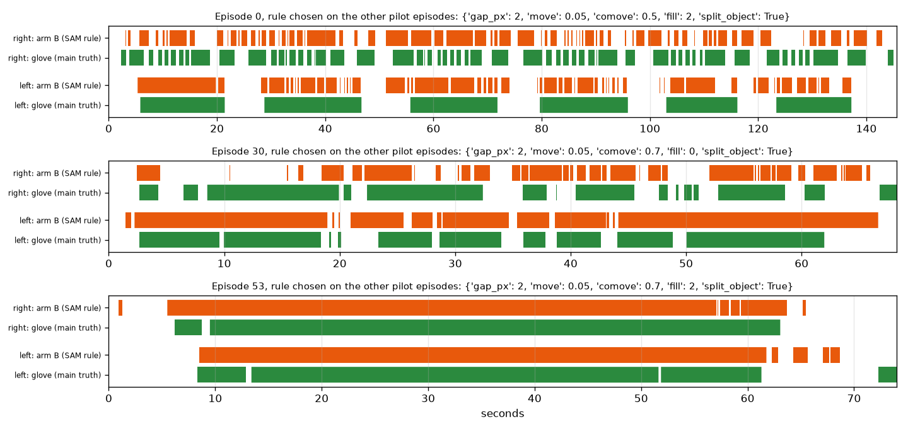
정리한 장갑 (주 정답)방법 B, 나머지 두 에피소드에서 고른 규칙
에피소드 0의 오른손은 이제 접촉이 따로 검출되어 장갑에 가까움. 같은 에피소드의 왼손은 용기 하나를 오래 쥐는데, 이제 여러 조각으로 잘림.
경계 F1 ±5프레임경계 F1 ±15프레임접촉 IoU
새 B를 쓴 방법별 최고 점수. C는 완벽하게 고르면 0.315까지 도달함.
물체 바뀜으로 끊으면 B의 경계 F1이 두 배가 됨(±5에서 0.15, ±15에서 0.32). C의 최고 점수도 두 배(0.32).
너무 많이 끊음. 실제 190개에 경계 392개, 접촉 IoU는 "항상 접촉"보다 낮아짐(0.663 대 0.669). 손이 물체 하나를 쥐는 동안 가장 가까운 물체가 그 물체와 옆 물체 사이에서 깜빡여 긴 쥐기가 조각남.
에피소드 세 개로는 이 균형을 정할 수 없음. 튜닝 50개의 SAM 결과가 생기면 같은 격자로 정함. 새 물체가 몇 프레임 동안 가장 가까워야 끊는 선택지를 다음 후보로 격자에 넣음.
EXP-23평가 2 파일럿: HOT3D에서 SAM과 Muse Spark10/28
질문
평가 2 전체 실행 전에 호출이 HOT3D에서 제대로 되고 답이 말이 되는지 본다. SAM 3.1이 붐비는 HOT3D 탁자에서 잡은 물체를 찾고, 우리 코드가 그것을 손에 가장 가까운 물체로 고르는가. Muse Spark의 물체 등급이 3D 모델 대리 등급(EXP-19)과 맞는가.
SAM 프롬프트는 hand와 small object. 모션캡처 접촉 프레임마다 데이터셋의 잡은 물체 2D 박스와 (가) SAM 물체 박스 전체, (나) 우리 코드가 손에 가장 가깝다고 고른 SAM 물체를 비교(박스 IoU 0.5 이상이면 일치). Muse Spark에는 체크리스트 질문과 단독 질문을 각각 보냄(클립당 720px 프레임 6장).
보낸 요청 (체크리스트, 줄임)
You see 6 frames from one first-person video clip of a person grasping an object. ...
Rate each item below as "high", "mid" or "low" ... Use the visible human hand as a ruler: from the wrist to the tip of the middle finger is about 19 cm.
finger_occlusion, object_size, object_shape, object_thickness, object_width, object_handle, free_space
Answer with JSON only.
받은 원문 (퍼즐 장난감 클립)
{"object_name": "rubik's cube", "finger_occlusion": "high", "object_size": "high", "object_shape": "high", "object_thickness": "high", "object_width": "high", "object_handle": "low", "free_space": "high", "reason": "Small cube held in air with right fingertips visible and clear of table objects."}
고친 버그: 공용 코드가 마스크를 OpenGraph 크기(1280×720) 프레임에 놓고 있었는데 HOT3D 구간은 1408×1408이라 첫 구간에서 멈춤. 프레임 크기를 넘기도록 고쳤고 OpenGraph 쪽 결과는 그대로.
SAM, 클립 5개의 접촉 프레임 169개
물체
접촉 프레임
프레임당 SAM 물체
잡은 물체 찾음
가장 가까운 물체 = 잡은 물체
무늬 머그 (왼손)
23
8.2
100%
100%
오렌지주스 팩 (왼손)
87
13.3
100%
100%
오렌지주스 팩 (오른손)
27
8.7
100%
63%
바비큐 소스 병 (왼손)
23
7.9
100%
100%
토마토소스 캔 (왼손)
9
11.9
78%
67%
전체
169
98.8%
92.3%
hand는 모든 프레임에서 두 손을 안정된 id 두 개로 찾음. small object는 HOT3D 탁자가 붐벼서 프레임당 8~13개를 찾음. 가시성은 다섯 클립 모두 1.0이라 여기서는 아무것도 가르지 못하고, 접촉 명확성은 0.0~0.57.
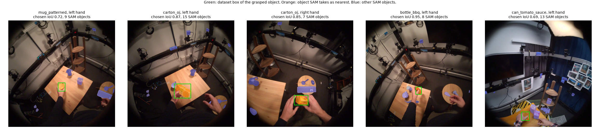
데이터셋의 잡은 물체 박스우리 코드가 손에 가장 가깝다고 고른 물체다른 SAM 물체
클립마다 접촉 프레임 한 장.
Muse Spark 물체 등급 대 3D 모델 대리 등급 (클립 5개)
항목
일치
손 대비 크기
5 / 5
모양
5 / 5
두께
5 / 5
감쌀 폭
3 / 5
손잡이
4 / 5
빈 공간
5 / 5
전체
27 / 30
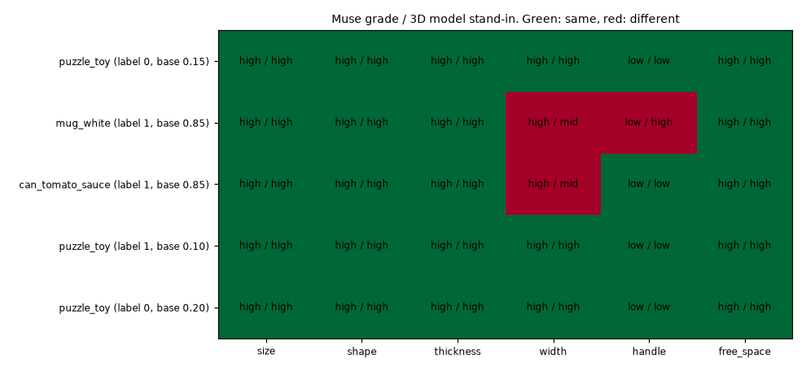
같음다름
칸마다 Muse Spark 등급 / 대리 등급. 행 이름의 label은 정답, base는 단독 질문의 확률.
감쌀 폭: 흰 머그와 토마토 캔을 Muse Spark는 "8cm 이하"로 봄. 3D 모델의 중간 변은 8cm를 조금 넘음. 틀린 답이라기보다 경계값 문제.
손잡이: 머그 손잡이를 놓침. 이 클립에서는 잡는 동안 고개를 돌려 프레임 2~5에 머그가 아예 안 보임. 같은 클립의 손가락 가림은 "하"로 맞게 답함.
물체 이름은 맞음(퍼즐 장난감을 "rubik's cube", 머그를 "cup", 캔).
단독 질문: 머그와 캔(둘 다 따라할 수 있음)은 0.85, 퍼즐 장난감 세 클립(하나만 따라할 수 있음)은 0.10~0.20. 단독 질문의 이유도 로봇 손가락에 비한 물체 크기를 말함. 즉 단독 질문도 물체를 읽음.
SAM은 HOT3D에서 동작함. 접촉 프레임의 99%에서 잡은 물체를 찾고, "가장 가까운 물체" 규칙이 92%에서 그것을 고름. 틀린 경우는 몇 프레임 동안 화면에서 더 가까운 옆 물체.
Muse Spark 물체 등급이 대리 등급과 30개 중 27개 일치. 틀린 것은 8cm 근처의 경계값과 물체가 화면 밖에 있던 클립. 대리 등급 점검(EXP-19)에서 본 신호를 Muse Spark 등급으로 쓸 근거가 됨.
가시성은 SAM 다섯 클립 모두 1.0. 값이 충분히 달라지지 않을 수 있고, 전체 실행에서 확인.
한계: 점검당 클립 5개, 그중 3개가 같은 물체. 호출이 되는지 보는 점검이지 측정이 아님.
EXP-24새 물체가 몇 프레임 유지될 때만 끊는 방법 B10/28
질문
EXP-22에서 B는 가장 가까운 물체가 바뀌면 새 접촉을 시작했다. 경계 F1은 두 배가 됐지만, 쥔 물체와 옆 물체 사이에서 가장 가까운 물체가 깜빡여 경계를 실제 190개에 392개나 찾았다. 새 물체가 몇 프레임 동안 계속 가장 가까울 때만 바뀐 것으로 세면 나아지는가. 튜닝 50개 전에 하는 코드 점검이고, 세 에피소드로는 어느 값이 좋은지 정할 수 없음.
입력
튜닝 파일럿 에피소드 0, 30, 53. 주 정답은 정리한 촉각 장갑.
방법
B 격자에 "유지" 선택지 추가: 10fps에서 1, 3, 5프레임. 이보다 짧게 바뀐 가장 가까운 물체는 직전에 쥐던 물체로 봄(1은 바로 앞 실험(EXP-22)의 규칙). 격자는 432가지, 앞의 B 실험(EXP-14, EXP-22)과 같은 에피소드 하나씩 빼기 탐색. 추가로 바로 앞 실험(EXP-22)에서 고른 규칙에 유지만 1, 2, 3, 5, 8로 바꿔 봄.
정리한 장갑 기준, 에피소드 하나씩 빼기
EXP-22 B
EXP-24 B
항상 접촉
경계 F1 ±5
0.151
0.145
0.02
경계 F1 ±15
0.323
0.291
0.02
접촉 IoU
0.663
0.718
0.669
찾은 경계 / 실제
392 / 190
360 / 190
12 / 190
C 최고 점수, 경계 F1 ±5
0.315
0.297
빼고 채점한 세 에피소드 모두 유지 3프레임을 골랐다. 장갑 원신호 기준으로도 같은 그림이다(F1 0.164, 0.299, IoU 0.717).
유지 프레임만 바꾸면 (나머지는 바로 앞 실험(EXP-22)에서 고른 그대로)
유지
F1 ±5
F1 ±15
IoU
찾은 경계 / 실제
1 (EXP-22)
0.151
0.323
0.663
392 / 190
2
0.145
0.287
0.691
388 / 190
3
0.124
0.288
0.702
344 / 190
5
0.109
0.243
0.717
270 / 190
8
0.087
0.214
0.730
202 / 190
정리한 장갑 (주 정답)방법 B, 나머지 두 에피소드에서 고른 규칙 (유지 3프레임)
에피소드 0의 왼손은 긴 쥐기 동안 여전히 조각나지만 바로 앞 실험(EXP-22)보다 덜함.
새 물체가 유지될 때까지 기다리는 것은 해결이 아니라 맞바꿈. 잘못 끊은 것을 없애면서(IoU 0.66 → 0.72, 이제 "항상 접촉"보다 높음) 제대로 끊은 것도 없앰(F1 ±5 0.151 → 0.145, C 최고 0.315 → 0.297).
8프레임으로 경계 수가 실제와 비슷해져도(202 대 190) F1 ±5는 0.087. 찾은 경계 대부분이 너무 많은 게 아니라 자리가 틀림. B의 약점은 물체 깜빡임만이 아니라 가까움 구간이 시작하고 끝나는 위치.
이 선택지는 격자에 남겨 두고, 튜닝 50개에서 같은 탐색으로 1, 3, 5 중에 고름(결정 D1대로).
한계: 에피소드 3개. 탐색 점수(F1 ±15 + IoU)가 IoU 쪽을 더 쳐서 유지 1보다 3을 골랐음.
EXP-25어안 영상의 왜곡을 풀면 MediaPipe가 나아지는가10/28
질문
처음 계획은 HOT3D Aria 어안 영상의 왜곡을 풀고 MediaPipe를 돌리는 것이었다. 지금까지는 원본 어안 영상에서 돌렸다. 왜곡을 풀어야 하는가, 어안을 한계로 보고하면 되는가.
입력
튜닝 사람의 클립 400개(seed 20261026), 클립마다 접촉 가운데 프레임. 모션캡처 손 자세가 있는 프레임 395개.
방법
MediaPipe Hands(정지 이미지 모드)를 원본 프레임과, 데이터셋 렌즈 모델로 편 핀홀 프레임(초점 거리는 어안의 0.7배라 시야 대부분이 남음)에 각각 돌림. 정답은 렌즈 모델로 화면에 투영한 모션캡처 손(UmeTrack 지점, EXP-09). 편 프레임의 MediaPipe 지점은 원본 화면으로 되돌려 같은 픽셀에서 잼.
프레임마다 재는 것
손 찾음: 지점 오차 중앙값이 손 크기(손목–중지 뿌리)의 0.5 미만인 MediaPipe 손이 있음
2D 오차: 지점 오차 중앙값 / 손 크기
손 모양 오차: 손 모양 실험(EXP-13)의 특징 10개를 MediaPipe 3D 지점과 모션캡처에서 각각 계산해 비교, 특징마다 프레임 간 퍼짐으로 나눈 뒤 평균
판정 규칙 (계산 전에 측정 계획에 고정)
왜곡을 풀면 손 찾음이 5%p 이상 늘거나
2D 오차 중앙값이 20% 이상 줄거나
손 모양 오차 중앙값이 20% 이상 줄 때만 풂
아니면 원본을 쓰고 어안을 한계로 보고
원본 대 편 프레임 (초점 0.7)
원본
편 프레임
변화
풀려면 필요
손 찾음
70.6%
60.3%
−10.3%p
+5%p
손 찾음, 편 프레임 안에 손이 다 들어온 372개
74.5%
63.7%
−10.8%p
2D 오차 / 손 크기 (둘 다 찾은 212개)
0.102
0.113
10.8% 나빠짐
20% 좋아짐
손 모양 오차 (같은 프레임)
0.832
0.775
6.9% 좋아짐
20% 좋아짐
초점 1.0으로도 확인: 손 찾음 원본 70.6% 대 편 프레임 62.0%, 2D 오차 0.106 대 0.107, 손 모양 오차 0.827 대 0.805. 이 영상에는 손의 80%만 다 들어오고, 그 손들에서 77.0% 대 71.6%. 손목은 화면 중심에서 중앙값 49도, 90%가 65도 안. 잡기는 대부분 왜곡이 가장 센 바깥쪽에서 일어남.
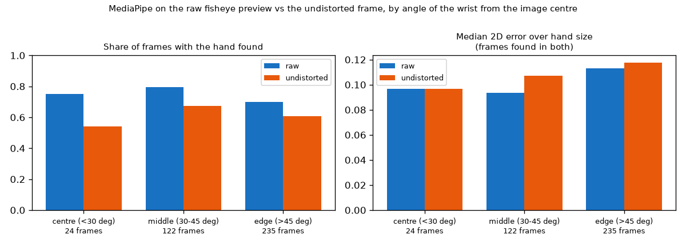
원본편 프레임
화면 중심에서 손목까지의 각도별. 왼쪽: 손을 찾은 프레임 비율. 오른쪽: 둘 다 찾은 프레임의 2D 오차 중앙값. 편 프레임은 모든 구역에서 손을 덜 찾음. 각도 추정으로 90도를 넘는 14개는 빠짐.
모션캡처 손 지점
왼쪽: 원본 프레임. 오른쪽: 같은 프레임을 편 것. 곧은 모서리가 곧게 나와 렌즈 모델이 제대로 적용됨.
왜곡을 풀면 규칙을 통과하지 못함. 손을 10%p 덜 찾고, 2D 지점이 조금 나빠지고, 손 모양은 7%만 나아짐. 초점 1.0으로도 같은 답이라 초점 선택 문제가 아님.
가장자리에서 손이 잘린 탓만이 아님. 편 프레임 안에 손이 다 들어와도 11%p 덜 찾음. 핀홀 영상이 손이 많은 바깥쪽을 늘리고 가운데를 줄이는 것이 이유로 보임.
결정: 원본 어안을 쓰고 어안을 한계로 보고.
곁가지 발견: 두 경우 모두 손 모양 오차가 모션캡처 퍼짐의 약 0.8. 이 영상에서 MediaPipe 3D 손 모양은 왜곡과 상관없이 모션캡처 손을 느슨하게만 따라감. v2 라벨 예측 실험(EXP-17)에서 영상 손 모양이 v2 라벨에 신호가 없던 것과 맞음.
Muse Spark 프레임도 원본. 편 프레임에서 Muse Spark가 물체 크기를 더 잘 읽는지는 시험하지 않음.
한계: 클립마다 프레임 한 장, MediaPipe만, 정답은 모션캡처 손(잡는 동안 물체 표면에서 약 2mm, EXP-09).
EXP-26Muse Spark 게이트와 처음 보는 물체 비교의 코드 점검10/28
질문
측정 계획은 평가 2의 Muse Spark 실행을 튜닝 400개와 검증 클립 두 단계로 나누고 그 사이에 게이트를 두었다. 처음 보는 물체 비교도 더했다. 둘 다 계산 전에 적었다. 코드가 계획대로 동작하는가, 게이트는 통과하기 얼마나 어려운가.
입력
튜닝 사람만. Muse Spark 대신 대리 등급(EXP-19)을 씀. 검증 클립은 쓰지 않음.
방법
게이트: 점수 학습용 400개의 물체 항목 등급 6개로 로지스틱 회귀, v2 라벨. 사람 하나씩 빼기(6명 평균 AUC)와 물체 하나씩 빼기(합친 AUC, 시퀀스 재추출 95% 구간). 둘 다 0.65 이상이면 통과, 하나라도 0.60 미만이면 멈춤, 그 사이면 약함. 400개 모두 Muse Spark 등급이 있어야 돎. 처음 보는 물체 비교: 시험 물체마다 손 모양 적합도 모델, 그 구간 기준, 점수 가중치를 그 물체 없이 다시 학습.
코드 점검
점검
결과
기존 점검 결과(가중치, 우리 점수, 물체 기준선)
그대로
400개 중 5개만 등급이 있을 때 게이트
거부: 395개에 Muse Spark 등급이 아직 없음
가짜 Muse Spark 등급(대리 등급의 10%를 무작위로 바꿈)
끝까지 돎. 항목 일치율 91~96%로 예상대로
흰 머그를 빼고 손 모양 적합도 다시 학습
클립 등급 3,811개 중 592개가 바뀜. 다시 학습이 실제로 일어남
대리 등급(완벽한 채점)으로 본 게이트, 400개
시험
AUC
통과 기준
사람 하나씩 빼기, 6명 평균
0.657 (사람별 0.484~0.794)
0.65
물체 하나씩 빼기, 합침
0.666 (0.608~0.723)
0.65
판정
통과
대리 등급 점검(EXP-19)은 튜닝 2,385개 전체에서 0.683과 0.666이었다. 400개에서는 사람 하나씩 빼기가 0.657로 떨어져 기준을 겨우 넘는다.
채점 오류가 늘면 게이트는
무작위로 바꾼 등급
대리 등급과 같은 비율
사람 빼기
물체 빼기
10번 중 판정
0%
100%
0.657
0.666
통과
5%
97%
0.643
0.650
통과 2, 약함 8
10%
93%
0.640
0.637
통과 1, 약함 8, 멈춤 1
20%
87%
0.608
0.600
약함 4, 멈춤 6
30%
80%
0.594
0.578
약함 2, 멈춤 8
40%
73%
0.566
0.544
멈춤 10
무작위 등급은 세 번에 한 번 원래 등급과 같아서, 비율 r을 바꾸면 약 1 − 2r/3이 대리 등급과 같게 남는다.
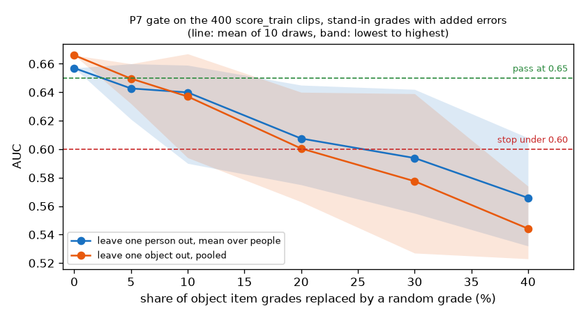
사람 하나씩 빼기, 6명 평균물체 하나씩 빼기, 합침통과 0.65멈춤 0.60 미만
선은 10번 뽑은 평균, 띠는 가장 낮은 값부터 가장 높은 값까지.
처음 보는 물체 비교 (튜닝, 대리 등급)
주 비교
처음 보는 물체
우리 점수
0.721 (0.668~0.775)
0.675 (0.618~0.731)
물체 기준선
0.776 (0.731~0.819)
0.5 (구조상)
코드는 계획대로 동작함. 기존 결과는 바뀌지 않았고, 게이트는 Muse Spark 등급이 일부만 있으면 돌지 않음.
게이트가 빡빡함. 완벽한 등급으로도 0.007 차이로 통과. 파일럿 일치율(30개 중 27개, 90%)이면 예상 판정은 "약함"이라 검증 클립에 보내기 전에 사용자와 정해야 함. 일치율이 약 87% 아래면 "멈춤"일 가능성이 큼.
표본 탓도 있음: 400개를 6명이 나눠 사람당 약 67개이고, 두 사람은 완벽한 등급으로도 0.5 근처.
튜닝에서는 주 비교에서 물체 기준선이 우리 점수를 이김(0.776 대 0.721). 처음 보는 물체에서는 우리 점수가 0.675를 지키고 물체 기준선은 0.5로 떨어짐. 처음 보는 물체 비교를 더한 이유이고, 검증에서도 같은 모양일 가능성이 큼.
게이트와 규칙은 여기서 바꾸지 않음. 400개의 Muse Spark 등급이 생기기 전에 고정한 것이고, 바꾸는 것은 튜닝 400개 실행 전에 사용자가 정할 일.
한계: 무작위 교체는 단순한 오류 모델. 실제 Muse Spark 오류는 몰려 있을 가능성이 큼(예: 파일럿의 8cm 근처 폭).
EXP-27시점 보정과 "체크리스트 대 학습" 코드 점검, 검정력 점검10/28
질문
측정 계획에 두 묶음이 새로 들어갔다(둘 다 데이터 전에 적음). 평가 1에서는 A와 C도 튜닝에서 배운 시점 보정을 받고(지금까지는 B만), 에피소드 짝지은 부트스트랩으로 확인한다. 평가 2에서는 Muse Spark 단독(R1), 체크리스트 등급 단순 평균(R2), 같은 등급의 학습된 가중치(R3)를 시퀀스 짝지은 부트스트랩으로 비교한다. 코드가 그대로 하는가, 그리고 사람 3명짜리 검증 세트로 "R3가 R2보다 낫다"를 잡아낼 수 있는가.
입력
튜닝만. Muse Spark 답은 쓰지 않음. 평가 1은 장갑에서 만든 답, 평가 2는 대리 등급(EXP-19).
방법
평가 1: 완벽한 답이 모든 변화를 6프레임 일찍 보게 만들어(보이는 접촉이 장갑 압력보다 먼저 오는 것처럼, EXP-06) 파일럿 3개에서 A와 C의 보정을 배움. 보정이 맞으면 지연 없는 최고 점수로 돌아와야 함. 평가 2: 튜닝 6명 중 3명을 가짜 검증 세트로 고르는 20가지마다 나머지 3명의 400개로 R3를 학습하고 R3 − R2를 짝지은 시퀀스 부트스트랩으로 검정. 대리 등급 그대로 한 번, 등급 15%를 무작위로 바꿔 세 번(파일럿 일치율 수준, EXP-23).
평가 1: 6프레임 일찍 보는 완벽한 답, 정리한 장갑, 파일럿 에피소드
행
경계 F1 ±5
IoU
지연 없는 최고 점수
A
0.863
0.948
0.956
A + 보정 (배운 값: 시작 +3, 끝 +3프레임)
0.956
0.975
C
0.149
0.728
0.297
C + 보정 (배운 값: +5, +6프레임, 옮긴 경계에만)
0.307
0.750
A는 5fps라 6프레임 단위로 끊겨서, 배운 보정이 샘플 반 칸인 3프레임이다. 보정이 없으면 6프레임 지연이 C를 절반으로 만든다(0.297 → 0.149). Muse Spark가 보이는 접촉을 고르면서 B의 보정을 지우기 때문이고, 새 행이 바로 이 경우를 위한 것이다. 보정 없는 자체 점검 결과는 전과 바이트 단위로 같다.
평가 2: 튜닝 점검, 대리 등급 (손가락 가림은 대리 등급이 없어 물체 항목 6개로)
행
AUC
95% 구간
R2 단순 평균
0.647
0.592~0.699
R3 학습된 가중치
0.714
0.657~0.769
우리 전체 점수
0.721
0.668~0.775
R3 − R2
+0.067
0.014~0.120
우리 점수 − R3
+0.007
−0.012~0.030
학습된 가중치: 크기 +2.13, 감쌀 폭 −1.04, 손잡이 −0.21. 단순 평균은 감쌀 폭과 손잡이를 뜻대로 세는데, 라벨은 그 방향이 틀렸다고 말한다(EXP-19). 학습이 이득을 보는 곳이 여기다. 영상과 SAM 항목은 R3 위에 거의 더하지 못한다(+0.007, EXP-17과 같음).
검정력: 사람 3명짜리 가짜 검증 세트 (클립 중앙값 1,192개, 시퀀스 41개. 실제 검증은 1,426개, 51개)
등급
세트 수
R3 − R2 중앙값 (범위)
구간이 0 위인 비율
대리 등급 그대로
20
+0.062 (+0.021~+0.102)
95%
15%를 무작위로 바꿈
60
+0.049 (−0.002~+0.075)
77%
대리 등급등급 15%를 무작위로 바꿈0
점 하나가 가짜 검증 세트 하나, 막대는 95% 구간. 차이 순으로 정렬.
시점 보정 코드는 동작함. 6프레임 일찍 오는 답에서 A와 C의 최고 점수를 되찾음. 보정이 없으면 C는 지연 때문에 최고 점수의 절반을 잃음.
"체크리스트 대 학습" 비교도 동작하고, 튜닝에서는 가중치를 배우면 단순 평균보다 AUC가 약 0.07 높음. 주로 감쌀 폭과 손잡이의 방향을 뒤집어서.
사람 3명짜리 검증 세트로 충분함. 완벽한 등급이면 세트의 95%, 파일럿 수준의 등급 오류가 있으면 77%에서 이 이득을 잡아냄.
한계: 대리 등급은 Muse Spark 등급이 아니고, 무작위 오류는 Muse Spark 실수의 단순한 모델이며, 가짜 검증 사람들도 실제 검증처럼 튜닝 사람과 물체를 공유함.
EXP-28정답을 다시 쓸 수 있는 벤치마크로10/28
질문
팀마다 자기 규칙으로 영상을 거르고, 다른 사람이 다시 쓸 수 있는 점수는 공개하지 않는다는 것이 지원서의 문제 제기다. 이 프로젝트에서 가장 무겁고 가장 많이 검증한 부분은 정답(평가 1은 정리한 장갑, 평가 2는 v2 라벨)이다. 우리 체크리스트 점수와 상관없이 어떤 영상 필터든 채점하는 벤치마크로 낼 수 있는가, 공개용 채점 코드가 프로젝트 코드와 같은 숫자를 내는가.
입력
데이터에 딸린 라이선스 문서: OpenGraph는 CC BY 4.0, HOT3D는 시퀀스 데이터 CC BY-SA 4.0, 손 데이터 CC BY-NC-SA 4.0, 물체 모델 CC BY-SA 4.0(판매 불가). v2 라벨은 손 데이터를 쓰므로 평가 2는 CC BY-NC-SA 4.0. 법률 검토가 아니라 문서를 읽은 해석.
방법
우리가 만든 라벨만 내보냄. 영상, 센서, 모션캡처 값은 넣지 않음. 채점 코드 두 개를 프로젝트 코드와 따로 쓰고, 프로젝트 코드가 이미 낸 튜닝 수치와 비교.
평가 1 정답
에피소드와 손마다 정리한 장갑의 접촉 구간(주)과 장갑 원신호 구간, 30fps 프레임 범위
채점: 경계 F1(±5, ±15프레임), 접촉 IoU
평가 2 정답
클립마다 위치, "따라할 수 있음" 라벨, 처음 실패하는 조건(잡기, 도달, 충돌), 깊이 2mm와 10mm에서의 라벨
채점: 사람별 AUC, 시퀀스 부트스트랩, 상위 20% 비율
파일에 든 것
튜닝
검증
평가 1 에피소드 / 정리한 접촉
50 / 955
22 / 287
평가 2 클립 / 사람 / 물체
2,385 / 6 / 33
1,426 / 3 / 33 (모두 튜닝에도 있음)
평가 2 따라할 수 있음 (5mm)
47.0%
46.4%
평가 2 따라할 수 있음 2mm / 10mm
17.5% / 65.7%
내보낸 라벨은 클립 3,811개 모두 프로젝트 클립 표의 라벨과 같다(내보낼 때 확인).
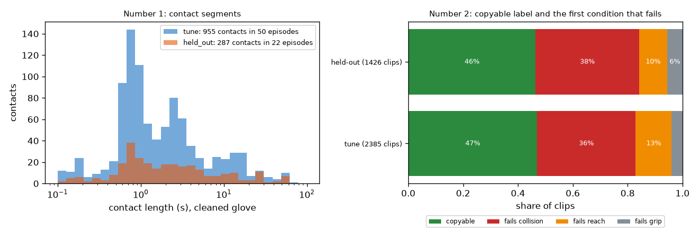
튜닝 접촉검증 접촉따라할 수 있음충돌로 실패도달로 실패잡기로 실패
왼쪽: 정리한 장갑 접촉의 길이. 오른쪽: "따라할 수 있음" 비율과, 아닌 클립에서 처음 실패하는 조건.
공개용 채점 코드 대 프로젝트 코드
입력
공개용
프로젝트 코드
방법 B 구간(EXP-24), 파일럿, 정리한 장갑: F1 ±5, F1 ±15, IoU
0.145, 0.291, 0.718
0.145, 0.291, 0.718
같은 구간, 장갑 원신호
0.155, 0.293, 0.717
0.155, 0.293, 0.717
항상 접촉, 파일럿: F1 ±5, IoU
0.02, 0.669
0.02, 0.669 (EXP-14)
물체 비율 기준선, 점수 학습용 클립: AUC, 구간
0.776, 0.731~0.819
0.776, 0.731~0.819 (EXP-26)
같은 기준선, 사람별 AUC
6명 모두 같음
유지 선택지 실험(EXP-24)은 장갑 원신호 기준으로 0.164를 냈는데, 그때는 원신호에 맞춰 규칙을 다시 골랐기 때문이다. 내보낸 구간은 정리한 장갑으로 고른 것이고, 프로젝트 자체 점검도 이 구간에 0.155를 낸다.
정답이 이제 설명서, 라이선스 안내, 예시 입력이 딸린 독립 벤치마크가 됨. 최종 실행에서 우리 체크리스트가 어떻게 나오든 쓸모가 남음.
공개용 채점 코드가 프로젝트 수치를 그대로 재현해서, 이 코드로 채점한 결과를 우리 결과와 비교할 수 있음.
라이선스: 평가 1은 CC BY 4.0으로 공유 가능. 평가 2는 HOT3D 손 데이터를 쓰므로 CC BY-NC-SA 4.0, 판매 불가.
33개 물체가 두 세트에 모두 있어 물체 비율 기준선이 검증에서도 강함. 설명서에 이 점을 적고 처음 보는 물체 점검을 권함.
한계: 장갑 한 가지 구성의 에피소드 72개, HOT3D 9명. v2 라벨은 충돌 깊이 한도에 좌우되므로 2mm와 10mm 라벨을 함께 넣음.
EXP-29튜닝 데이터에서 받은 첫 실제 Muse Spark 답10/28
질문
세 가지 주장이 대리 등급이나 흉내 낸 답 위에 서 있었다(EXP-26, EXP-27). 실제 Muse Spark 답에서도 맞는가. (1) 시점 보정: Muse Spark는 장갑보다 먼저 접촉을 보고, 장갑으로 배운 보정이 이를 고친다. (2) 학습: 라벨로 배운 가중치가 체크리스트 등급의 단순 평균보다 낫다. (3) 처음 보는 물체: 물체 이름 기준선이 못 하는 곳에서 우리 점수는 여전히 통한다.
입력
튜닝만. 평가 1은 튜닝 에피소드 0, 30, 53에 방법 A(Muse Spark 단독, 5fps, 요청당 10프레임) 146번 호출, 모든 프레임에 답을 받음. 평가 2는 점수 학습용 튜닝 클립 400개에 체크리스트 질문과 단독 질문, 모든 답을 읽음. 검증 클립은 보내지도 채점하지도 않음.
방법
평가 1: 두 에피소드에서 보정을 배워 나머지 하나에 적용, 에피소드마다 돌아가며. 주 정답은 정리한 장갑. 평가 2: 모든 행을 사람 하나씩 빼기(나머지 5명으로 학습)로 채점. R1 Muse Spark 단독 확률, R2 체크리스트 등급 7개의 단순 평균(학습 없음), R3 같은 등급의 로지스틱 회귀. 참고로 대리 등급의 R3와 물체 이름 기준선. 짝지은 차이에 시퀀스 재추출 95% 구간. R3는 물체 하나씩 빼기도. 물체 항목 6개로 게이트.
보낸 요청 (단독 질문, 줄임)
You see 6 frames from one first-person video clip of a person grasping an object. ...
A robot hand must copy this grasp. The robot hand is an Allegro hand: it has four fingers and is about 1.3 times the size of a human hand. ...
How likely is it that the robot hand can copy this grasp?
Answer with JSON only: {"copyable_probability": 0 to 100, "reason": "one short sentence"}
받은 원문 (작은 병 클립)
{"copyable_probability": 85, "reason": "Small bottle is grasped with thumb and fingers on opposite sides with open space around it."}
평가 1: 시점 보정 (튜닝 에피소드 3개, 정리한 장갑)
행
경계 F1 ±5
경계 F1 ±15
IoU
시작 / 끝 오차 (프레임)
A
0.062
0.171
0.804
−7 / +7
A + 보정 (다른 두 에피소드에서 배움)
0.132
0.240
0.824
−5 / +2
B (EXP-24, 참고)
0.145
0.291
0.718
항상 접촉
0.02
0.02
0.669
Muse Spark는 장갑보다 접촉 시작을 약 7프레임(0.23초) 일찍, 끝을 약 7프레임 늦게 본다. 배운 보정은 모든 경우에 거의 같다(시작 +6~+8, 끝 −6~−7프레임). 검증에는 세 개 모두에서 배운 +7, −7을 쓴다. 에피소드 3개라 짝지은 구간은 0.000~0.132(차이 +0.070)로 경계에 걸친다. A는 짧은 접촉들을 긴 접촉 하나로 묶어 경계를 190개 중 68개만 찾는다. 그래서 IoU는 모든 방법 중 가장 높지만(0.80~0.82) F1은 낮다. 5fps에서 완벽한 답의 최고 점수는 0.956(EXP-21)이었으므로, 한계는 프레임 수가 아니라 Muse Spark가 보는 것이다.
정리한 장갑 (주 정답)Muse Spark 단독다른 두 에피소드에서 배운 보정을 적용
에피소드 0의 오른손처럼 짧은 접촉이 이어지는 곳을 Muse Spark는 긴 접촉 하나로 판정함.
평가 2: 체크리스트 대 학습 (사람 하나씩 빼기, 400개, 43.5%가 따라할 수 있음)
행
AUC 합침
사람별 평균
R1 Muse Spark 단독
0.516
0.521
R2 체크리스트, 단순 평균
0.627
0.597
R3 체크리스트, 학습된 가중치
0.646
0.638
R3, 대리 등급 (완벽한 채점)
0.671
0.657
물체 이름 기준선
0.688
0.670
짝지은 차이 (시퀀스 재추출 95% 구간)
차이
값
95% 구간
이득
R2 − R1 (체크리스트로 묻기)
+0.111
0.034~0.184
있음
R3 − R1
+0.130
0.043~0.206
있음
R3 − R2 (가중치 학습)
+0.019
−0.023~0.058
없음
물체 기준선 − R3
+0.042
0.002~0.083
기준선이 나음
처음 보는 물체 (물체 하나씩 빼기)
행
AUC 합침
R3, 그 물체를 빼고 학습
0.607
R1 Muse Spark 단독 (학습 없음)
0.516
물체 이름 기준선
0.5 (구조상)
R3 − R1
+0.091 (0.003~0.171)
게이트(물체 항목 6개): 사람 하나씩 빼기 0.636, 물체 하나씩 빼기 0.601(0.548~0.650). 판정은 "약함"이고, 미리 정한 대로 검증 클립 실행을 진행한다. Muse Spark 등급이 대리 등급과 같은 비율은 크기 75%, 모양 83%, 두께 78%, 감쌀 폭 49%, 손잡이 90%, 빈 공간 62%로, 파일럿(30개 중 27개)은 너무 낙관적이었다. 감쌀 폭은 거의 찍기 수준이다. 실제 등급으로 배운 가중치는 모양 +1.30, 감쌀 폭 +0.99, 손가락 가림 +0.45, 크기 +0.37, 손잡이 +0.26, 두께 −0.30, 빈 공간 −0.13. 대리 등급에서는 감쌀 폭이 뒤집혔는데(EXP-19, EXP-27) 실제 등급에서는 그렇지 않다.
합친 AUC사람별 평균학습 가중치, 처음 보는 물체 (0.607)
행별 사람 하나씩 빼기 AUC. 가로선이 0.5.
주장 1(시점 보정)은 튜닝에서 맞음. Muse Spark는 시작을 약 7프레임 일찍, 끝을 7프레임 늦게 보고, 보정은 에피소드마다 안정적이며 경계 F1을 두 배로 만듦. 에피소드 3개로는 확신할 수 없고 검증 실행이 정함.
주장 2(학습)는 튜닝에서 맞지 않음. 학습된 가중치가 단순 평균보다 0.019 높을 뿐이고 잡음 안. 실제 등급에서 이득의 대부분은 체크리스트 자체에서 옴: Muse Spark에게 항목별로 물으면 직접 묻는 것보다 AUC가 0.11 높음. 직접 물은 Muse Spark는 동전 던지기에 가까움(0.52).
주장 3(처음 보는 물체)은 튜닝에서 맞음. 학습에서 뺀 물체에서도 체크리스트 점수는 0.607을 지키고, Muse Spark 단독은 0.516, 물체 이름 기준선은 0.5.
아는 물체에서는 물체 이름 기준선이 여전히 우리 점수를 이김(0.688 대 0.646). 대리 등급 점검(EXP-26)에서 예상한 대로.
Muse Spark는 파일럿이 보여 준 것보다 물체 항목을 덜 정확하게 매김. 가장 약한 항목은 감쌀 폭(대리 등급과 49% 일치).
모두 튜닝 수치. 보고할 수치는 검증 실행이 정하고, 비교는 측정 계획에 이미 고정돼 있음.
EXP-30Muse Spark가 튜닝에서 틀리는 곳과 프롬프트 한 번 수정10/28
질문
첫 실제 Muse Spark 답(EXP-29) 뒤, 검증 클립에 보내기 전에는 아직 프롬프트를 바꿀 수 있다. Muse Spark는 어디서 틀리고, 프롬프트를 한 번 고치면 나아지는가. 검증에 쓸 판을 고르는 규칙은 고친 프롬프트를 보내기 전에 측정 계획에 적었다.
입력
튜닝만. 평가 2는 점수 학습용 클립 400개, 평가 1은 튜닝 에피소드 0, 30, 53. 검증 데이터는 보내지도 채점하지도 않음.
방법
1판 답의 오류를 분석한 뒤, 프롬프트마다 2판을 한 번 써서 같은 튜닝 데이터에 보냄. 2판이 1판보다 높을 때만 검증에 2판을 씀(같으면 1판).
1판의 오류 (평가 2, 3D 모델 등급과 비교)
크기: 중간 크기(15~25cm) 물체 103개 중 72개를 작다고 봄
감쌀 폭: 14cm보다 넓은 물체 133개 중 56개를 "8cm 이하"로 봄. 물체 전체가 아니라 손에 쥔 부분을 보는 것으로 보임
두께: 4cm 이상 물체 323개 중 54개를 얇다고 봄
손잡이는 좋음(90% 일치), 빈 공간은 잡음이 큼(62%)
Muse Spark 단독: 답의 72%가 0.85 이상, 27%가 0.25 이하. 물체별 평균 답과 물체별 "따라할 수 있음" 비율의 순위 상관이 0.09. 키보드, 그릇, 주스 팩(따라할 수 있음 0~8%)을 될 것 같다고 봄. 어떤 물체가 실패하는지 모름
고친 2판
체크리스트 2판: 물체 전체의 세 변을 cm로 답하게 함. 자는 손(손 길이 19cm, 손바닥 폭 8.5cm, 손가락 두께 2cm)만, 물체 예시는 없음. 크기·모양·두께·폭 등급은 코드가 EXP-19 기준으로 매김. 손잡이, 빈 공간, 손가락 가림은 그대로
방법 A 2판: 두 잡기 사이에 잠깐 놓는 손도 비접촉이라고 알리고, 프레임마다 손가락과 물체 사이 틈을 보게 함
Muse Spark 단독 질문은 지원서가 정한 비교라 그대로. 체크리스트만 튜닝에서 한 번 고쳐졌다는 점은 비교의 한계로 보고
평가 1 방법 A 1판: 장갑 기준 놓음을 "비접촉"으로 한 번이라도 표시한 비율
놓은 길이
놓음 수
비접촉으로 표시
0.2초 이하 (5fps 샘플보다 짧음)
5
0%
0.2~0.5초
27
4%
0.5~1초
27
15%
1~2초
12
83%
2초 넘음
18
94%
장갑 접촉 프레임은 77~100% 잘 덮는다. 1초보다 짧게 떨어졌다 다시 잡는 것을 거의 못 봐서, 경계를 190개 중 68개만 찾는다.
평가 2: 1판 대 2판 (400개, 사람 하나씩 빼기)
1판
2판
크기 등급이 3D 모델과 같음
75%
79%
모양
83%
85%
두께
78%
84%
감쌀 폭
49%
52%
손잡이 / 빈 공간
90% / 62%
90% / 61%
R2 단순 평균, 합침 / 사람별 평균
0.627 / 0.597
0.632 / 0.623
R3 학습, 합침 / 사람별 평균
0.646 / 0.638
0.611 / 0.625
R3, 처음 보는 물체
0.607
0.596
2판의 cm 추정을 3D 모델 상자와 비교한 비율(중앙값, 가운데 절반): 가장 긴 변 0.97(0.86~1.04), 중간 변 0.86(0.72~1.03), 가장 짧은 변 0.85(0.65~0.99). 가장 긴 변은 잘 읽고 나머지 둘은 작게 본다. 그래서 감쌀 폭이 여전히 가장 약한 항목이다.
칸에 든 클립이 많음적음
크기와 감쌀 폭에서 Muse Spark 등급(가로) 대 3D 모델 등급(세로), 1판과 2판. 상은 "로봇 손에 쉬움", 즉 작거나 좁음. 2판은 중간 크기 물체 일부를 "작음"에서 빼내지만, 넓은 물체 다수를 여전히 좁다고 판정함.
평가 1 방법 A: 1판 대 2판 (튜닝 에피소드 3개, 다른 두 에피소드에서 배운 보정)
1판
2판
경계 F1 ±5, 보정 후
0.132
0.120
경계 F1 ±15, 보정 후
0.240
0.248
IoU, 보정 후
0.824
0.826
찾은 경계 (190개 중)
68
76
배운 보정 (시작, 끝)
+7, −7
+7, −6
2판은 프레임 답 1,442개 중 29개(2%)만 바꿨다. 새로 잡은 놓음과 새로 놓친 놓음이 서로 상쇄돼 놓음 표는 그대로다.
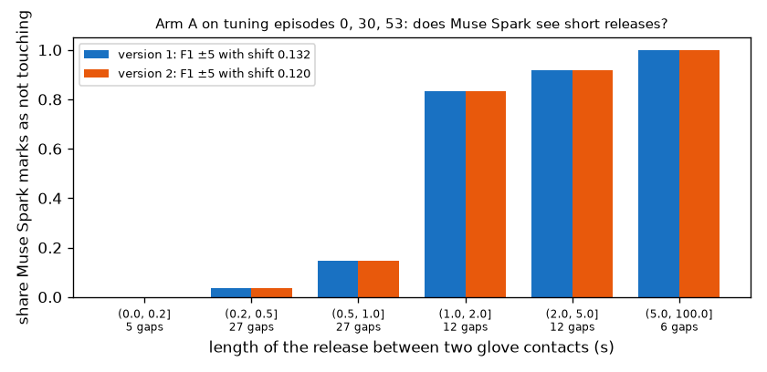
1판2판
장갑 기준 두 접촉 사이의 놓음을 Muse Spark가 "비접촉"으로 표시한 비율, 놓은 길이별.
판정(보내기 전에 고정한 규칙): 체크리스트 2판 R3 0.625가 1판 0.638보다 높지 않아 1판 유지. 방법 A 2판 F1 0.120이 1판 0.132보다 높지 않아 1판 유지. 검증용 보정은 +7, −7.
Muse Spark의 물체 오류는 일관됨: 물체를 실제보다 작고 좁게 봄. cm로 물으면 등급은 더 정확해지지만(크기·모양·두께 2~6%p) 학습된 점수는 나아지지 않음. 400개에서 0.013 차이는 어느 쪽이든 잡음 안.
Muse Spark 단독은 로봇 손이 어떤 물체에서 실패하는지 모름. 이건 센서 기반 라벨만 아는 지식이고, 체크리스트가 메우는 틈(EXP-29: 0.52 → 0.63 이상).
방법 A는 약 1초보다 짧은 놓음을 보지 못하고, 프롬프트로는 바뀌지 않음. 5fps에서 0.5초 놓음은 2~3프레임이고 그동안 손은 물체 바로 옆에 있음. 이것이 A의 경계 F1을 묶는 한계이고, 프레임 수가 아님(완벽한 답의 최고 점수 0.956).
EXP-31물체 비율을 더하는 비교와 물체 안 AUC의 코드 점검10/28
질문
10/28 제안서로 더한 비교 6(라벨이 있는 물체에 물체 비율을 더함)과 보고 행 두 개(같은 물체 안 AUC, 실패 원인별 AUC)의 코드가 계산 전에 적은 규칙을 따르는가. 기존 출력은 그대로인가.
입력
튜닝만. 학습 1,985개, 시험은 점수 학습용 400개. 물체 항목 6개는 Muse Spark 답이 아니라 3D 모델 대리 등급(EXP-19), Muse Spark 단독은 실제 답(EXP-29).
방법
물체의 라벨 클립이 k = 5, 20, 전체일 때 물체 비율 = (따라할 수 있는 클립 + 1) / (k + 2). 우리 점수의 로짓과 물체 비율의 로짓으로 로지스틱 회귀를 학습. 학습 클립의 우리 점수는 그 사람을 빼고 맞춘 값, 물체 비율은 다른 사람의 클립에서 뽑음. k = 5, 20은 20번 뽑아 평균. 물체 안 AUC는 같은 물체의 두 클립 쌍 중 순서가 맞는 비율(동점은 절반). 가짜 데이터 점검 30개로 sklearn AUC와 대조.
비교 6: 물체 비율을 더할 때 (점수 학습용 400개, 대리 등급)
라벨 클립
물체 비율만
결합
결합 − 물체 비율
결합 − 우리 점수
0 (우리 점수만)
0.721
5
0.722
0.749
+0.027 (−0.002~0.060)
+0.028 (−0.013~0.061)
20
0.770
0.773
+0.003 (−0.010~0.017)
+0.052 (0.014~0.091)
전체
0.777
0.783
+0.005 (−0.006~0.019)
+0.061 (0.028~0.095)
물체 비율이 믿을 만해질수록 결합 모델에서 우리 점수의 가중치가 0.63(k = 5)에서 0.22(전체)로 줄어듦.
보고 행: 물체 안 AUC와 실패 원인별 AUC (점수 학습용 400개)
점수
같은 물체 안
같은 물체·사람 안
잡기 실패 (22)
도달 실패 (50)
충돌 (154)
우리 점수
0.574 (0.495~0.652)
0.520
0.775
0.693
0.723
R3 (학습한 등급)
0.568 (0.505~0.636)
0.550
0.795
0.698
0.708
Muse Spark 단독
0.526 (0.450~0.613)
0.532
0.614
0.566
0.486
물체 비율
0.500 (정의상)
0.500
0.860
0.719
0.783
같은 물체의 쌍은 1,074개로 전체 쌍의 2.7%. 이 400개에서 따라할 수 있는 클립과 없는 클립이 각각 5개 이상인 물체는 10개(검증에서는 27개).
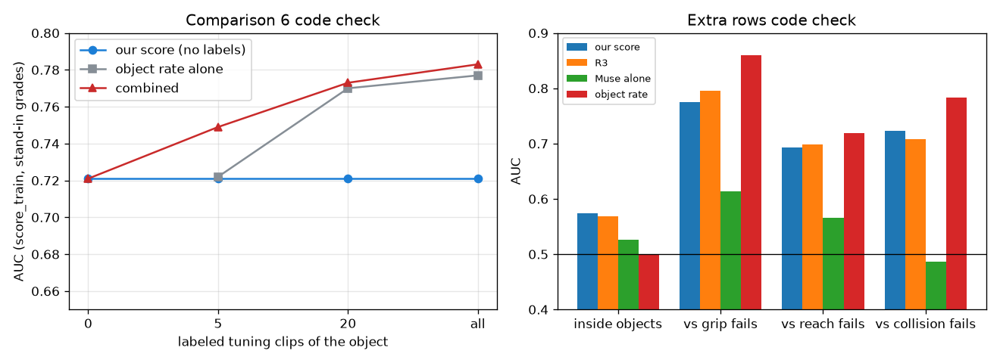
왼쪽: 물체의 라벨 클립 수에 따른 AUC. 라벨 5개에서는 결합이 물체 비율보다 높고, 20개부터는 거의 같음. 오른쪽: 같은 물체 안에서는 모든 점수가 0.5 근처이고, Muse Spark 단독은 충돌 실패를 구분하지 못함(0.486).
코드가 측정 계획의 규칙을 따름. 가짜 데이터 점검 30개 통과, 기존 출력은 바이트 단위로 같음.
대리 등급으로 낸 튜닝 수치라 결과가 아니라 코드 점검임. 검증 결과의 방향만 시사함: 라벨 5개일 때는 우리 점수가 물체 비율에 더하고, 20개부터는 물체 비율만으로 결합과 같음.
같은 물체 안에서 우리 점수는 우연 수준에 가까움(0.574, 구간이 0.5를 포함). 지금 점수는 물체 단위로 작동함.
EXP-32튜닝 50개로 확정한 방법 B (SAM 규칙)10/28
질문
지금까지 방법 B는 파일럿 에피소드 3개로 골랐음(EXP-14, EXP-22, EXP-24). 측정 계획대로 검증 전에 튜닝 50개 전체로 기준값과 시점 보정을 정하면, 에피소드 하나씩 빼고 잰 점수는 얼마이고 검증에 어떤 규칙이 가는가.
입력
튜닝 에피소드 50개. 나머지 47개에 SAM 3.1을 10fps로 보냄(프롬프트 hand, small object, 요청 94개, 59,444프레임, $11.89). 50개의 요청 100개 모두 완료 상태.
방법
격자는 그대로(432개 점: 거리, 물체 이동, 동반 이동, 끊김 잇기, 가장 가까운 물체가 바뀌면 끊기, 유지 프레임). 고르는 규칙도 그대로: F1 ±15 + IoU 최대, 시작과 끝 오차의 중앙값을 보정으로. 에피소드마다 나머지 49개로 규칙과 보정을 골라 채점하고 모아서 냄. 격자 점마다 에피소드·손별 점수를 한 번만 계산해 병렬로 합침. 파일럿 3개에서 이전과 바이트 단위로 같은 결과.
에피소드 하나씩 빼기, 튜닝 50개, 에피소드·손 100개
정답
F1 ±5
F1 ±15
정밀도 ±15
재현율 ±15
IoU
경계 (B / 정답)
항상 접촉 IoU
정리한 장갑 (주 정답)
0.153
0.294
0.204
0.522
0.683
4,880 / 1,910
0.623
장갑 원신호
0.159
0.303
0.232
0.439
0.683
4,872 / 2,570
0.621
데이터셋 라벨
0.108
0.265
0.189
0.445
0.682
3,372 / 1,430
0.620
에피소드별 F1 ±5는 0.00~0.30(중앙값 0.12). 정리한 장갑 기준으로 50번 중 46번 같은 규칙을 고르고, 나머지 4번은 물체 이동 기준값만 다름.
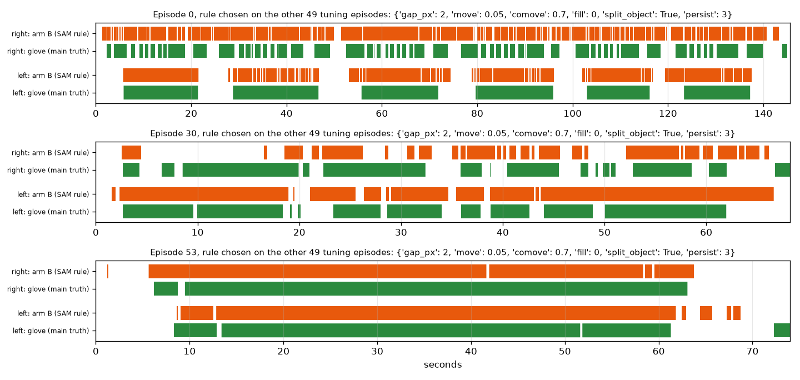
방법 B (SAM 규칙)정리한 장갑 (주 정답)
튜닝 에피소드 0, 30, 53, 각각 나머지 49개로 고른 규칙. 에피소드 0 오른손은 짧은 접촉을 잘게 쪼개 경계를 너무 많이 냄. 에피소드 53처럼 오래 쥐는 접촉은 하나의 긴 구간으로 맞게 검출함.
검증에 쓸 규칙(튜닝 50개 전체로 고름): 거리 2px, 물체 이동 0.05, 동반 이동 0.7, 끊김 잇기 없음, 가장 가까운 물체가 바뀌어 3프레임 유지되면 끊음, 보정 시작 +4프레임, 끝 −1프레임. 이제 검증용으로 고정함.
50개에서도 파일럿과 같은 그림. IoU는 "항상 접촉"보다 높고(0.683 대 0.623), 장갑 경계의 절반을 ±15프레임 안에서 찾지만, 경계를 2.5배 많이 내서 정밀도가 낮고 F1 ±5는 0.153.
고른 값이 격자의 끝(가장 작은 거리, 가장 작은 이동, 잇기 없음)에 있음. 격자는 미리 적은 대로 유지함.
이 B로 방법 C의 최고 점수(완벽한 답, 파일럿 3개)는 0.302로 이전 B(0.297)와 같음. B는 에피소드당 경계 약 98개를 내므로 C의 검증 비용은 약 $28.
EXP-33검증 22개 SAM과 고정한 방법 B 적용10/28
질문
튜닝 50개로 고정한 방법 B(EXP-32)를 검증 데이터에 한 번 적용해, 방법 C가 쓸 검증 구간을 만듦. 검증 정답은 보지 않음.
입력
검증 에피소드 22개. SAM 3.1을 10fps로 보냄(프롬프트 hand, small object, 요청 44개, 27,250프레임, $5.45). 요청 44개 모두 완료 상태.
방법
특징 계산은 튜닝과 같은 코드. 검증 정답에서는 영상 프레임 수만 읽음. 방법 B는 튜닝 50개로 규칙을 다시 골라 검증에 적용(EXP-32와 같은 규칙과 보정). 경계 F1과 IoU는 방법 A, C와 함께 최종 실행에서만 계산함.
정답 없이 본 방법 B 구간
데이터
에피소드
분
경계
분당 경계
에피소드 중앙값
접촉 프레임 비율
튜닝 (50개 전체로 고른 규칙)
50
54.3
4,888
90.0
77
0.764
검증
22
22.7
1,790
78.9
64
0.789
튜닝 (50)검증 (22)
왼쪽: 에피소드 길이 대 방법 B 경계 수. 오른쪽: 방법 B가 접촉으로 본 손 프레임 비율. 검증 에피소드는 튜닝 분포 안에 있음.
검증 SAM 출력이 모두 갖춰졌고, 튜닝에서 고정한 규칙으로 방법 B를 적용함. 검증 에피소드가 조금 짧아 에피소드당 경계는 적지만 분당 경계는 튜닝과 비슷함(78.9 대 90.0).
이 구간으로 계산한 방법 C의 검증 비용은 약 $23.31(이전 추정 약 $28). 방법 A 검증은 약 $11.86. 예상 총액은 약 $142.
EXP-34검증 22개에 보낸 방법 A (Muse Spark 단독)10/29
질문
방법 A는 Muse Spark에 5fps 프레임 10장씩 보내 손마다 접촉 여부를 물음. 프롬프트는 1판(EXP-30), 시점 보정은 시작 +7, 끝 −7프레임으로 튜닝에서 고정(EXP-29). 이 단계는 검증 답을 모으는 것이고, 채점은 방법 C와 함께 최종 실행에서 함.
입력
검증 에피소드 22개, 호출 693개, 6,817프레임, $12.44. 검증 정답에서는 영상 프레임 수만 읽음.
방법
측정 계획의 "해석되지 않는 답" 규칙대로 전체 실행 뒤 같은 명령을 한 번 더 보내고, 세 번째는 보내지 않고 남은 호출 수만 셈.
전송 단계별 호출
단계
보낸 호출
모든 프레임에 답이 없는 호출
비용
1차
693
1
$12.42
2차 (재전송)
1
0
$0.02
3차 (세기만)
0
0
$0
재전송한 1개(에피소드 57)는 처음에 10프레임 중 9개만 답했고 다시 보내 모두 답함. 대체값("비접촉")을 쓴 호출은 없음. 비용은 견적 $11.86보다 4.9% 많음(호출당 입력 11,946토큰). 방법 C도 같은 견적을 써서 약 5% 더 나올 수 있음.
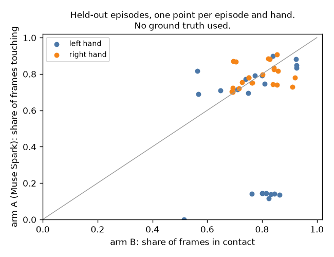
왼손오른손
정답 없이 본 검증 에피소드·손별 접촉 프레임 비율. 가로는 방법 B, 세로는 방법 A. 아래쪽에 모인 왼손 점 9개는 짧은 에피소드 9개로, Muse Spark가 왼손 접촉을 거의 표시하지 않음.
검증 호출 693개 모두 재전송 한 번 뒤 답이 있어 5% 한도에 걸리지 않음. 최종 채점에 쓸 답이 갖춰짐.
약 35~40초 길이의 짧은 에피소드 9개(18, 24, 27, 39~43, 45)에서는 왼손 접촉이 14% 이하. 한 번 약 2.5초만 표시하거나(8개) 전혀 표시하지 않음(39번). 같은 에피소드에서 방법 B는 왼손 접촉을 51~86%로 봄. 에피소드·손별 두 방법의 접촉 비율 상관은 0.09.
어느 쪽이 맞는지는 최종 실행에서 장갑으로만 판정함.
EXP-35방법 C의 튜닝 보정 표본과 검증 경계10/29
질문
방법 C는 방법 B의 경계마다 주변 7프레임을 Muse Spark에 보여 주고 실제 시작 또는 끝 프레임을 고르게 함(0은 그대로). C의 시점 보정은 튜닝에서 Muse Spark가 옮긴 경계로만 배움. 이 단계는 보정용 튜닝 표본과 검증 경계 전부를 보냄.
입력
튜닝 표본: EXP-32의 에피소드 하나씩 빼기 B 구간에서 무작위로 뽑은 시작 100개, 끝 100개(seed 20261026). 검증: EXP-33의 B 경계 1,790개. 호출당 7프레임, $30.28(튜닝 $3.09, 검증 $27.19). 검증은 채점하지 않음.
방법
7프레임은 B 경계에서 −15, −10, −5, 0, +5, +10, +15프레임 위치로, 4번이 B 경계 자체. 측정 계획의 "해석되지 않는 답" 규칙대로 전체 실행 뒤 같은 명령을 한 번 더 보내고 남은 호출 수를 셈. 검증은 튜닝 표본에서 잰 단가로 다시 승인받은 뒤 보냄(처음 견적이 낮았음).
전송과 비용
데이터
호출
프레임 번호 없음
입력 토큰 (평균)
출력 토큰 (평균, 95%)
호출당
비용
견적
7,700
800
$0.0130
튜닝 표본
200
0
8,559
1,114, 2,337
$0.0154
$3.09
검증
1,790
0
8,559
1,056, 2,318
$0.0152
$27.19
정답 없이 본 Muse Spark의 선택
데이터
그대로 (0)
옮김
옮긴 시작
옮긴 끝
튜닝 표본
105 / 200 (52.5%)
95
검증
1,031 / 1,790 (57.6%)
759
342 / 895
417 / 895
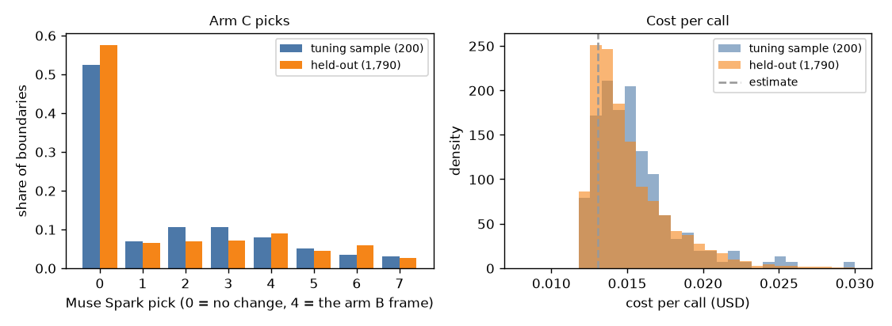
튜닝 표본 (200)검증 (1,790)
왼쪽: Muse Spark가 고른 프레임의 비율(0은 그대로, 4는 B 경계 프레임). 튜닝과 검증의 분포가 비슷함. 오른쪽: 호출당 비용, 점선은 처음 견적. 답이 견적보다 길어 대부분의 호출이 견적보다 비쌈.
튜닝과 검증의 모든 호출이 첫 전송에서 프레임 번호를 받아 5% 한도에 걸리지 않고 대체값도 없음.
검증에서 Muse Spark는 B 경계의 42%를 옮김(튜닝 표본 48%). 끝을 시작보다 조금 더 자주 옮김(417 대 342).
호출당 비용은 답이 길어 처음 견적보다 약 17% 높음.
평가 1의 검증 답(방법 A, B, C)이 모두 모임. 채점은 최종 실행에서 함.
EXP-36방법 A와 C의 시점 보정을 따로 배우도록 수정10/29
질문
방법 C의 시점 보정은 튜닝 표본 200개(EXP-35) 중 Muse Spark가 옮긴 경계로 배워야 함. 검증 채점 전에 확인하니 채점 코드가 A와 C에 같은 에피소드 목록(0, 30, 53)을 써서, C 보정이 그 세 에피소드의 경계만 쓰게 되어 있었음. 고치는 규칙은 코드를 바꾸기 전, 검증 채점 전에 측정 계획에 적음.
입력
튜닝만. 검증은 채점하지 않음.
방법
A 보정 에피소드(0, 30, 53, A 답이 있는 유일한 튜닝 에피소드)와 C 보정 에피소드(튜닝 50개 전체)를 따로 받게 함. 어느 목록에든 검증 에피소드가 들어 있으면 멈춤. 회귀 점검과 가짜 데이터 점검으로 확인함.
시점 보정 (30fps 프레임, 시작, 끝)
보정
이전 코드
고친 코드
방법 A (에피소드 0, 30, 53)
+7, −7
+7, −7
방법 C
0, −1 (옮긴 경계 1개)
+6, −4 (옮긴 경계 31개, 에피소드 20개)
옮긴 표본 경계 95개(시작 41, 끝 54) 중 장갑 경계에서 15프레임 안에 있는 시작 10개, 끝 21개가 보정에 들어감. 오차 중앙값은 시작 −6, 끝 +4. 나머지는 어느 장갑 경계에서도 15프레임 넘게 떨어져 있음.
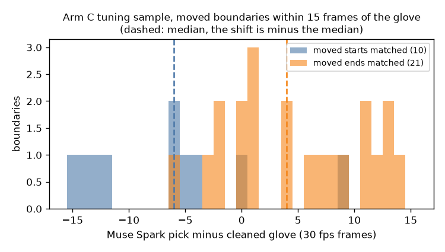
옮긴 시작 (10)옮긴 끝 (21)
장갑 경계 15프레임 안의 옮긴 경계에서 Muse Spark 선택과 정리한 장갑의 차이. 점선은 중앙값이고, 보정은 중앙값의 부호를 바꾼 값.
최종 채점은 이제 계획대로 튜닝 표본 전체로 C 보정을 배움: 시작 +6, 끝 −4프레임(경계 31개). 이전 코드였다면 경계 1개로 정해졌음.
회귀 점검 12개 모두 같음(점수와 구간은 바이트 단위로 같고 출력의 보정 에피소드 목록만 바뀜). 가짜 데이터 점검 52개 통과. 검증 C 답 1,790개는 검증 B 구간과 맞게 읽힘.
옮긴 경계의 3분의 2가 장갑 경계에서 멀어 보정의 근거 경계가 적음. 보정이 도움이 되는지는 검증의 짝지은 부트스트랩으로 판정함.
EXP-37평가 1 최종 결과: 검증 22개10/29
질문
영상만으로 접촉의 시작과 끝을 찾을 수 있는가. 세 방법을 장갑과 비교함: A(Muse Spark 단독), B(SAM 규칙), C(SAM 규칙 + Muse Spark 경계 확인). A와 C는 튜닝에서 배운 시점 보정도 적용(A 시작 +7, 끝 −7, EXP-30. C +6, −4, EXP-36). 모든 기준값, 프롬프트, 보정은 이 실행 전에 튜닝에서 고정함.
입력
검증 에피소드 22개, 에피소드·손 44개, 정리한 장갑 경계 574개. 방법 A, B, C의 답은 EXP-33~35에서 받은 것. 채점은 한 번만 실행함.
방법
경계 F1(±5, ±15프레임)과 접촉 IoU를 에피소드와 손을 합쳐 계산. 보정 효과는 측정 계획에 미리 적은 대로 에피소드 단위 짝지은 부트스트랩(1,000회)으로 판정.
주 정답(정리한 장갑), 에피소드와 손 합산
방법
F1 ±5
정밀도 ±5
재현율 ±5
F1 ±15
IoU
경계 (방법 / 장갑)
A. Muse Spark 단독
0.074
0.090
0.063
0.273
0.821
400 / 574
A + 보정
0.195
0.254
0.159
0.376
0.850
358 / 574
B. SAM 규칙
0.090
0.059
0.185
0.214
0.667
1,790 / 574
C. SAM 규칙 + Muse Spark 확인
0.112
0.075
0.216
0.227
0.679
1,646 / 574
C + 보정
0.137
0.094
0.253
0.266
0.690
1,546 / 574
항상 접촉
0.042
0.159
0.024
0.042
0.600
88 / 574
항상 비접촉
0
0
0
0
0
0 / 574
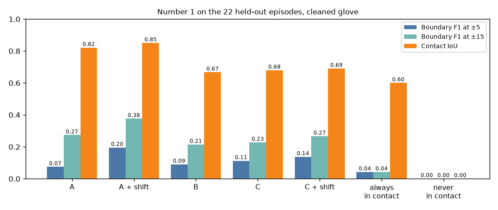
경계 F1 ±5경계 F1 ±15접촉 IoU
검증 22개, 정리한 장갑 기준. 세 지표 모두 Muse Spark 단독에 장갑으로 배운 보정을 더한 것이 가장 높음.
에피소드 단위 짝지은 부트스트랩 (F1 ±5, 1,000회)
차이
값
95% 구간
비고
A + 보정 − A
+0.121
0.062~0.172
계획에 미리 적은 판정. 보정이 도움이 됨
C + 보정 − C
+0.025
0.019~0.032
계획에 미리 적은 판정. 보정이 도움이 됨
C − B
+0.022
0.004~0.037
실행 뒤 추가한 기술 통계
A + 보정 − C + 보정 (±5)
+0.058
−0.017~0.119
실행 뒤 추가. 구간이 0을 포함
A + 보정 − C + 보정 (±15)
+0.109
0.020~0.221
실행 뒤 추가
손별과 다른 정답 (F1 ±5, F1 ±15, IoU)
방법
왼손
오른손
장갑 원신호
데이터셋 라벨
A + 보정
0.246, 0.467, 0.875
0.159, 0.310, 0.832
0.175, 0.320, 0.849
0.198, 0.384, 0.847
B
0.064, 0.184, 0.614
0.113, 0.242, 0.718
0.102, 0.236, 0.666
0.082, 0.197, 0.665
C + 보정
0.104, 0.221, 0.632
0.167, 0.306, 0.746
0.148, 0.281, 0.689
0.126, 0.242, 0.687
항상 접촉
0.016, 0.016, 0.536
0.059, 0.059, 0.664
0.032, 0.032, 0.599
0.026, 0.030, 0.594
방법 B는 튜닝에서 검증으로 가며 F1 ±5가 0.153에서 0.090으로, IoU가 0.683에서 0.667로 내려감. C + 보정은 최고 점수 0.302(EXP-32) 중 0.137에 도달함.
검증에서 Muse Spark 단독에 장갑으로 배운 시점 보정을 더한 방법이 세 지표 모두 가장 높음: F1 ±5 0.195, ±15 0.376, IoU 0.850.
장갑으로 배운 보정은 미리 정한 규칙대로 두 Muse Spark 방법 모두에 도움이 됨(A +0.121, C +0.025, 구간이 0 위).
Muse Spark 경계 확인은 SAM 규칙을 개선하지만(C − B +0.022), SAM 규칙이 경계를 약 3배 많이 내고 C는 이를 옮기기만 할 수 있어 A + 보정보다 낮음. A + 보정이 C + 보정보다 나은 것은 ±15에서는 분명하고 ±5에서는 분명하지 않음.
방법 A와 B가 크게 달랐던 짧은 에피소드 9개의 왼손(EXP-34)은 Muse Spark가 맞았음. 장갑 접촉은 프레임의 9.4%이고, A + 보정은 IoU 0.835, F1 ±15 0.722인 반면 B는 장갑 경계 20개에 경계 402개를 내고 IoU 0.104(실행 뒤 추가한 기술 통계).
±5프레임(0.167초)에서는 모든 방법이 낮음. 장갑은 영상으로 볼 수 없는 압력을 재기 때문이며, 계획에서 예상한 대로임.
EXP-38평가 2 SAM: 점수 학습용 400개와 검증 1,426개10/29
질문
평가 2 항목 중 가시성과 접촉 명확성은 SAM 3.1 마스크에서 나옴. 평가 2의 모든 SAM 구간을 보내고, 점수 학습용과 검증 클립마다 두 등급을 계산함.
입력
겹치는 클립을 합친 10fps SAM 구간, 프롬프트 hand, small object. 점수 학습용 400개를 먼저 보내 견적과 비교한 뒤 검증을 보냄. $26.48. "따라할 수 있음" 라벨로는 채점하지 않음.
방법
number2_sam_checks.py는 SAM 마스크와 클립 시작, 길이, 손만 읽고 라벨은 읽지 않음. 등급은 점수 학습용 클립의 삼분위로 상·중·하.
전송
데이터
구간
요청
완료
과금 프레임 (견적)
비용
점수 학습용
315
624
624
43,592 (43,592)
$8.72
검증
198
396
396
88,814 (88,824)
$17.76
SAM 항목 (정답 없이)
데이터
클립
가시성 평균
가시성 = 1
접촉 명확성 평균
접촉 명확성 0 이하
점수 학습용
400
0.957
73.0%
0.249
29.5%
검증
1,426
0.950
69.3%
0.217
33.0%
가시성은 점수 학습용 클립 대부분이 1이라 아래, 위 삼분위 기준이 같은 값에 놓여 등급이 둘뿐임(점수 학습용 하 108, 상 292. 검증 하 438, 상 988). 접촉 명확성은 점수 학습용 하 126, 중 121, 상 153. 검증 하 506, 중 467, 상 453.
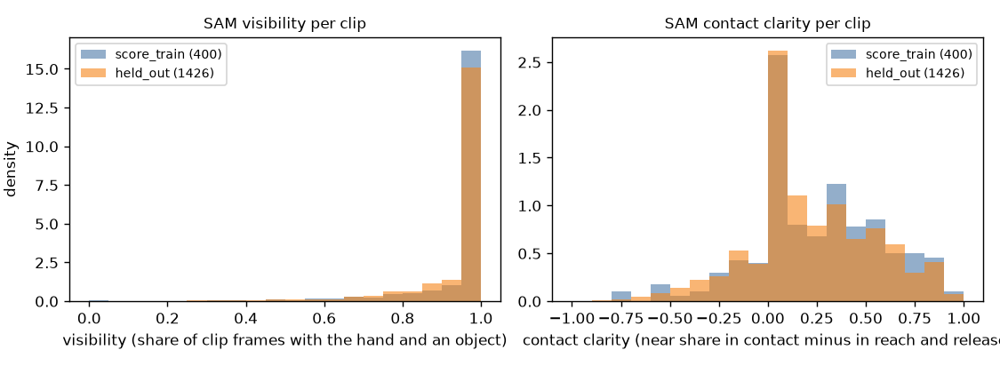
점수 학습용 (400)검증 (1,426)
왼쪽: 클립 프레임 중 SAM이 손과 물체를 모두 찾은 비율. 오른쪽: 접촉 명확성(접촉 중 손이 물체 곁에 있는 비율에서 뻗기·놓기 중 비율을 뺀 값). 두 데이터의 분포가 비슷함.
평가 2의 SAM 구간을 모두 보냄. 요청 1,020개 모두 완료됐고 프레임당 가격이 견적과 같음.
클립 1,826개 모두 두 SAM 등급이 있고 빠진 것이 없음.
가시성은 대부분의 클립에서 1이라 SAM이 손이나 물체를 놓친 클립만 걸러낼 수 있음.
EXP-39평가 2 Muse Spark: 검증 1,426개의 체크리스트와 단독 답10/29
질문
평가 2는 검증 클립마다 Muse Spark 답 두 개가 필요함: 체크리스트(물체 항목 6개와 손가락 가림, 1판 프롬프트, EXP-30)와 Muse Spark 단독(따라할 수 있을 확률). 게이트는 "약함"이었고, 미리 정한 결정대로 이 단계를 진행함(EXP-29).
입력
검증 클립 1,426개에 체크리스트와 단독 호출을 하나씩, 2,852개. 보내기 전에 사용자가 P7a 단가 기준 약 $28.8을 한도로 정함. 체크리스트를 먼저 보내고, 실제 비용에 단독 예상($13.83)을 더해 한도 안일 때 단독을 보냄. $28.56. 라벨로는 채점하지 않음.
방법
측정 계획의 "해석되지 않는 답" 규칙대로 전체 실행 뒤 같은 명령을 한 번 더 보내고 남은 호출 수를 셈.
전송
호출
보낸 호출
해석 실패
API 오류
비용
호출당 (P7a)
체크리스트
1,426
0
0
$14.66
$0.01028 ($0.01051)
단독
1,426
0
0
$13.90
$0.00975 ($0.00970)
합계 $28.56로 한도 $28.8 안. 재전송할 호출은 없었음. 평가 2 클립 1,826개(점수 학습용 400, 검증 1,426) 모두 두 답이 있어 빠지는 클립이 없음.
라벨 없이 본 체크리스트 등급 비율 (0 / 0.5 / 1)
항목
점수 학습용
검증
손가락 가림
39% / 47% / 14%
27% / 55% / 18%
손 대비 크기
20% / 13% / 67%
15% / 13% / 72%
모양
8% / 36% / 56%
10% / 43% / 47%
두께
23% / 15% / 62%
23% / 21% / 57%
감쌀 폭
10% / 18% / 72%
5% / 22% / 73%
손잡이
71% / 1% / 28%
65% / 1% / 33%
빈 공간
21% / 13% / 66%
11% / 9% / 80%
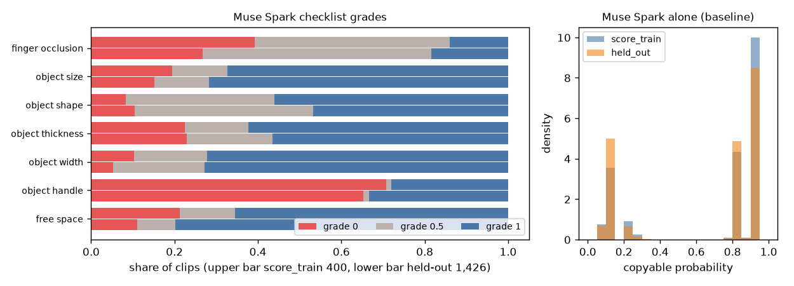
등급 0등급 0.5등급 1
왼쪽: 항목별 등급 비율, 위 막대는 점수 학습용 400개, 아래 막대는 검증 1,426개. 오른쪽: Muse Spark 단독이 답한 "따라할 수 있을 확률"의 분포. 0.05~0.2와 0.85~0.95 두 무리로만 답함.
평가 2의 Muse Spark 답이 모두 모임. P7a 단가 그대로였고 해석 실패는 없음.
검증 등급은 점수 학습용과 비슷하고, 빈 공간과 손가락 가림을 0으로 매긴 비율이 조금 적음.
Muse Spark 단독은 거의 두 값 중 하나로만 답함(검증 중앙값 0.85, 0.90이 542개, 0.85가 336개). 클립 순위를 거칠게만 나눔.
다음: 검증 채점. 부드러운 물체 확인은 라벨링을 기다림.
EXP-40평가 2 최종 결과: 검증 1,426개10/29
질문
우리 점수가 로봇 손이 따라할 수 있는 클립을 고르는가. 점수는 12개 등급의 로지스틱 회귀: 영상 계산 항목 3개(카메라 안정성, 동작 완결성, 손 모양), SAM 항목 2개(가시성, 접촉 명확성), Muse Spark 체크리스트 7개. 가중치는 점수 학습용 400개로 학습. 모든 비교와 규칙은 이 실행 전에 측정 계획에 적음.
입력
검증 클립 1,426개(3명, 시퀀스 51개, 46.4%가 "따라할 수 있음"), v2 라벨(EXP-16, EXP-20). 항목 등급은 EXP-29, EXP-38, EXP-39에서 받은 것. 채점은 한 번만 실행함. Muse Spark 답이 없어 빠진 클립은 없음.
방법
AUC와 95% 구간은 검증 시퀀스 51개 단위 부트스트랩. 짝지은 차이는 두 행에 같은 시퀀스를 씀.
주 비교 (AUC)
행
AUC
95% 구간
P0001
P0010
P0012
상위 20% 중 따라할 수 있음 (기준 46.4%)
한 손 클립
우리 점수
0.624
0.589~0.661
0.638
0.625
0.603
59.4%
0.588
1. Muse Spark 단독
0.501
0.469~0.529
0.469
0.510
0.525
46.9%
0.477
2. 물체 기준선 (물체 이름, 튜닝 비율)
0.771
0.744~0.792
0.787
0.786
0.747
79.4%
0.742
3. Muse Spark 단독 + 우리 항목
0.624
0.590~0.661
0.632
0.631
0.606
62.6%
0.583
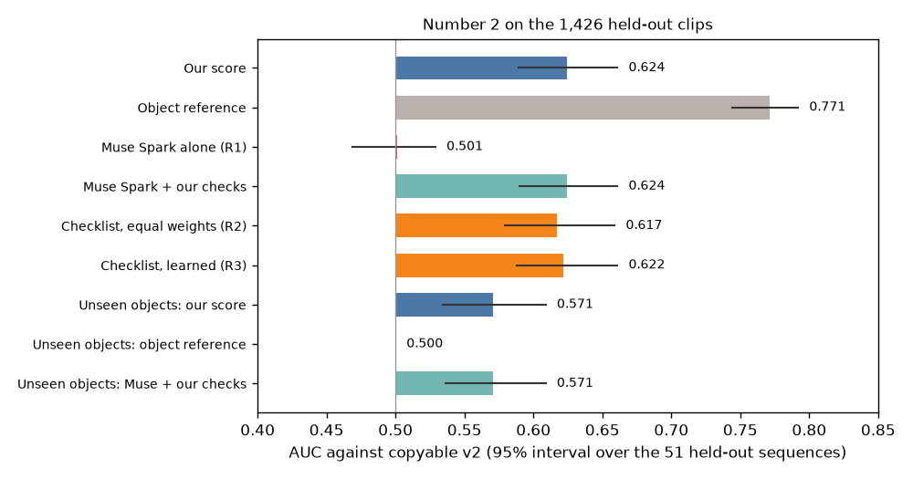
검증 1,426개에서 행별 AUC와 시퀀스 51개 단위 95% 구간. 가는 세로선이 우연 수준(0.5).
비교 4: 처음 보는 물체 (학습하는 부분을 모두 그 물체 없이 다시 맞춤)
행
AUC
95% 구간
우리 점수
0.571
0.534~0.609
물체 기준선
0.500
정의상
Muse Spark 단독
0.501
0.469~0.529
Muse Spark 단독 + 우리 항목
0.571
0.536~0.609
비교 5: 체크리스트 대 학습 (Muse Spark 등급만)
행 또는 차이
AUC 또는 차이
95% 구간
계획 규칙상 이득
R1 Muse Spark 단독
0.501
0.469~0.529
R2 체크리스트, 같은 가중치
0.617
0.579~0.659
R3 체크리스트, 학습 가중치
0.622
0.588~0.661
R2 − R1 (체크리스트)
+0.117
0.073~0.166
있음
R3 − R1
+0.122
0.081~0.166
있음
R3 − R2 (학습)
+0.005
−0.019~0.032
없음
우리 점수 − R3 (영상 계산·SAM 항목)
+0.001
−0.011~0.013
없음
비교 6: 물체 비율을 더할 때 (튜닝 2,385개에서 뽑음, 20회)
물체당 라벨 클립
물체 비율만
우리 점수와 결합
결합 − 물체 비율
결합 − 우리 점수
0 (우리 점수)
0.624
5
0.718
0.722
+0.004 (−0.004~0.013), 이득 없음
+0.099 (0.063~0.130)
20
0.762
0.760
−0.001 (−0.005~0.001), 이득 없음
+0.137 (0.100~0.167)
전체
0.774
0.771
−0.003 (−0.006~0.000), 이득 없음
+0.147 (0.112~0.176)
보고 행: 실패 원인별 AUC (따라할 수 있는 클립 662개 대 그 원인으로 실패한 클립)
실패 원인
우리 점수
물체 기준선
체크리스트 학습
Muse Spark 단독
충돌 (538)
0.611 (0.575~0.647)
0.790
0.618
0.477
도달 (146)
0.636 (0.568~0.718)
0.688
0.601
0.581
잡기 (80)
0.682 (0.584~0.770)
0.797
0.694
0.516
같은 물체 안의 AUC(같은 물체 클립 쌍 13,524개, 전체 쌍의 2.7%): 우리 점수 0.506(0.461~0.544), 체크리스트 학습 0.457, Muse Spark 단독 0.532, 물체 기준선 0.5(정의상). 같은 물체이면서 같은 사람인 클립 쌍만 보면 우리 점수 0.484, 체크리스트 학습 0.455, Muse Spark 단독 0.535. 따라할 수 있는 클립과 없는 클립이 각각 5개 이상인 물체 27개를 물체별로 보면 우리 점수가 0.5를 넘는 물체는 14개(중앙값 0.502, 0.358~0.640)이고, Muse Spark 단독은 13개(중앙값 0.487)이며 두 머그컵에서 가장 높음(0.858, 0.797). 학습한 가중치(큰 순): 모양 1.252, 감쌀 폭 0.922, 손가락 가림 0.481, 손 모양 0.434, 손 대비 크기 0.391, 두께 −0.342, 동작 완결성 −0.331, 손잡이 0.258, 접촉 명확성 0.237, 빈 공간 −0.171, 가시성 0.043, 카메라 안정성 −0.030.
Muse Spark 단독은 따라할 수 있는 클립을 가려내지 못함(AUC 0.501). 우리 점수는 0.624.
이득은 Muse Spark에게 체크리스트로 묻는 데서 옴(+0.117). 가중치 학습(+0.005)과 영상 계산·SAM 항목(+0.001)은 더하지 못함.
물체 이름만으로 0.771로 우리 점수보다 높음. 검증 사람도 튜닝 사람과 같은 물체를 잡기 때문임. 처음 보는 물체에서는 우리 점수가 0.571을 유지하고 물체 기준선은 판단할 수 없음(0.5).
같은 물체 안에서는 우연 수준(0.506)이라 점수는 잡기가 아니라 물체를 줄 세움. 물체당 라벨 클립이 5개 이상 있으면 물체 비율만으로 결합과 같음.
EXP-41평가 2 검증 결과를 허용 깊이 2mm와 10mm에서 다시 봄10/29
질문
v2 라벨은 Allegro 손이 물체 안으로 5mm까지 들어가는 것을 허용함. "따라할 수 있음" 비율이 이 기준에 크게 좌우되고, 측정 계획은 2mm와 10mm 결과도 보고하기로 함. EXP-40의 그림이 기준을 엄하게 하거나 느슨하게 해도 유지되는가.
입력
EXP-40의 검증 클립 1,426개.
방법
계산 전에 측정 계획에 적음. 아무것도 다시 학습하지 않음: 가중치, 손 모양 모델, Muse Spark 행은 모두 5mm 라벨로 학습한 그대로. 채점에 쓰는 검증 라벨만 2mm, 10mm로 바꿈. 물체 기준선은 같은 깊이의 튜닝 비율을 씀. 5mm 행이 EXP-40과 같은지 코드가 확인함.
허용 깊이별 AUC (시퀀스 51개 단위 95% 구간)
행
2mm
5mm (주, EXP-40)
10mm
검증 "따라할 수 있음" 비율
19.9%
46.4%
64.7%
우리 점수
0.521 (0.484~0.559)
0.624 (0.589~0.661)
0.632 (0.592~0.677)
Muse Spark 단독 (R1)
0.417 (0.380~0.459)
0.501 (0.469~0.529)
0.541 (0.504~0.571)
물체 기준선
0.761 (0.724~0.793)
0.771 (0.744~0.792)
0.774 (0.742~0.804)
Muse Spark 단독 + 우리 항목
0.508
0.624
0.640
체크리스트, 같은 가중치 (R2)
0.488
0.617
0.624
체크리스트, 학습 (R3)
0.506
0.622
0.629
처음 보는 물체: 우리 점수
0.504
0.571
0.585
같은 물체 안: 우리 점수
0.505
0.506
0.504
짝지은 차이 (95% 구간, 0 위면 이득)
차이
2mm
5mm
10mm
우리 점수 − Muse Spark 단독
+0.104 (0.041~0.163)
+0.123 (0.081~0.168)
+0.091 (0.037~0.152)
R2 − R1 (체크리스트)
+0.071 (0.010~0.124)
+0.117 (0.073~0.166)
+0.082 (0.019~0.148)
R3 − R2 (학습)
+0.018 (−0.009~0.047)
+0.005 (−0.019~0.032)
+0.005 (−0.021~0.034)
우리 점수 − R3 (영상 계산·SAM 항목)
+0.015 (−0.001~0.029)
+0.001 (−0.011~0.013)
+0.003 (−0.011~0.018)
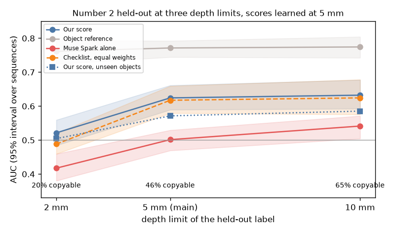
허용 깊이별 검증 AUC, 점수는 모두 5mm에서 학습. 회색은 물체 기준선, 파랑은 우리 점수, 빨강은 Muse Spark 단독. 2mm에서는 우리 점수가 우연 수준으로 내려가고 Muse Spark 단독은 0.5 아래로 떨어짐.
10mm에서는 EXP-40의 그림이 유지됨: 우리 점수 0.632, Muse Spark 단독 0.541, 체크리스트가 Muse Spark 단독에 더하고 학습은 더하지 못함.
2mm에서는 "따라할 수 있음"이 20%뿐이고 우리 점수가 우연 수준(0.521, 구간이 0.5 포함). Muse Spark 단독은 순서를 거꾸로 매김(0.417). 우리 점수가 Muse Spark 단독보다 높은 것은 Muse Spark 단독이 우연 아래이기 때문임.
물체 기준선은 모든 깊이에서 0.76~0.77.
평가 2 결과는 허용 깊이에 달려 있음. 미리 정한 5mm와 더 느슨한 10mm에서는 유지되고, 더 엄한 2mm에서는 유지되지 않음.
EXP-42부드러운 물체 확인10/29
질문
10/28 제안서는 점수를 강체에만 매기기로 함. 클립마다 Muse Spark에게 물체가 rigid, squeezable, soft, unsure 중 무엇인지 하나 더 묻고, soft나 unsure면 점수를 매기지 않음. Muse Spark가 부드러운 물체를 걸러내고, 단단한 HOT3D 클립은 그대로 두는가.
입력
정답은 두 사람이 각자 라벨링한 뒤 합의한 물체 104개(일치 81.7%, kappa 0.613). HOT3D rigid 28, squeezable 5. OpenGraph rigid 52, squeezable 10, soft 9. 영상에 물체가 나오지 않은 OpenGraph 물체 4개는 실험에서 제외. HOT3D 검증 1,426개, OpenGraph 검증 접촉 구간 280개와 부드러운 물체의 튜닝 구간 56개, 각 3프레임. $9.11.
방법
호출 전에 측정 계획에 고정: soft나 unsure면 보류. 합격은 soft 구간 70% 이상 보류, HOT3D 클립 10% 이하 보류. 파일럿 20개를 먼저 보내 단가를 확인한 뒤 전체를 보냄. 모든 답이 해석됨.
판정
지표
값
합격 기준
충족
soft 구간 보류
51.7% (60개 중 31, 물체 9개), 물체 단위 구간 30.8~74.4%
70% 이상
아님
HOT3D 클립 보류
2.1% (1,426개 중 30)
10% 이하
충족
판정
불합격
soft로 라벨링한 물체에서 Muse Spark의 답
물체
구간
soft
unsure
squeezable
rigid
보류
pink bubble wrap
20
10
5
5
0
75%
brown tape
19
5
0
8
6
26%
beige paper tape
9
4
0
3
2
44%
beige tape
4
0
0
2
2
0%
clear bubble wrap
3
2
0
1
0
67%
beige glove
2
2
0
0
0
100%
black mat
1
1
0
0
0
100%
bubble wrap
1
1
0
0
0
100%
dark blue mat
1
0
1
0
0
100%
검증 구간만 보면 soft 4개 중 1개(25%) 보류. OpenGraph 검증에서 rigid로 라벨링한 구간의 18.1%(193개 중 35), squeezable의 1.2%를 보류함. HOT3D에서 가장 많이 보류한 물체는 spatula_red 27.8%, food_vegetables 14.3%, coffee_pot 12.0%, holder_black 10.0%. 판정 뒤 추가한 기술 통계: 테이프 세 이름이 soft 구간 60개 중 32개이고 그중 9개(28%)만 보류. 나머지 soft 물체 여섯은 28개 중 22개(79%) 보류. 테이프 두 이름은 라벨러끼리도 squeezable과 soft로 갈렸음.
softunsuresqueezablerigid
왼쪽: soft로 라벨링한 OpenGraph 물체에서 Muse Spark의 답(soft나 unsure면 보류). 뽁뽁이, 장갑, 매트는 대부분 잡지만 테이프는 squeezable이나 rigid로 봄. 오른쪽: 보류된 클립이 있는 HOT3D 물체와 보류 비율. 점선은 기준 10%.
미리 정한 기준에 미달함. Muse Spark는 단단한 HOT3D 클립은 거의 건드리지 않지만(2.1% 보류), soft로 라벨링한 구간은 절반만 잡음(51.7%, 기준 70%).
놓친 것은 주로 테이프로, Muse Spark는 squeezable이나 rigid로 답함. 뽁뽁이, 장갑, 매트는 대부분 잡음. 단단한 OpenGraph 구간도 18%를 보류함.
제안서의 부드러운 물체 단계는 이대로는 근거가 없음. Muse Spark의 "soft 또는 unsure" 답만으로는 부드러운 물체를 점수에서 빼기에 부족함.
보류된 HOT3D 클립을 빼도 평가 2의 AUC는 그대로(1,426개 0.624, 남은 1,396개 0.625).
보류된 HOT3D 클립 30개는 soft 답 28개, unsure 답 2개이고 물체 12개에서 나옴(coffee_pot 6, food_vegetables 5, holder_black 5, spatula_red 5 순). 12개 물체 모두 두 사람의 라벨은 rigid임. 뷰어의 Touch check 탭에서 이 클립들을 "검증 안 됨" 표시와 함께 보여줌.
2진행 중인 작업
접촉 구간 검출
영상만 보고 손별로 접촉 시작과 끝을 찾는다. 파일럿 3개(EXP-06)로 전 과정이 끝까지 도는 것을 확인했고, 측정 계획을 지원서의 세 비교 대상으로 다시 맞췄다. 방법 B는 구현해서 파일럿으로 점검했다(EXP-14). A와 C도 코드를 끝냈고, 완벽한 답으로 잰 최고 점수는 A 0.96, C 0.15다(EXP-21). C가 B의 경계에 묶이는 문제는 B가 물체 바뀜으로 접촉을 끊게 해서 줄였지만(C 최고 0.32), 대신 너무 많이 끊는다(EXP-22). 튜닝 50개로 B 격자를 확정해 재현율을 올리기로 했고, C가 B의 긴 접촉 안을 훑는 방식은 쓰지 않는다. 너무 많이 끊는 것을 줄이는 "유지" 선택지도 격자에 넣었다(EXP-24). A와 C도 B처럼 장갑 기준 시점 보정을 튜닝에서 배워 적용하고, 보정 전후를 둘 다 보고하기로 계산 전에 정했다. 보정 코드는 일부러 6프레임 일찍 보게 만든 답에서 A와 C의 최고 점수를 되찾아 점검을 통과했다(EXP-27). 튜닝 3개에 실제로 보낸 A에서 Muse Spark는 접촉을 약 7프레임 일찍 시작하고 늦게 끝냈고, 보정으로 경계 F1이 0.06에서 0.13으로 올랐다(EXP-29). 튜닝 50개로 방법 B를 확정했고(EXP-32), 검증 22개에서 세 방법을 채점했다(EXP-37).
비교 대상
A. Muse Spark 단독. 5fps(6프레임마다 1장) 프레임 여러 장을 시각과 함께 한 번에 보내고, 손별로 접촉 여부를 받음.
B. SAM 규칙. SAM 3.1 손·물체 마스크(10fps)의 겹침과 동반 이동으로 접촉 신호를 만듦. 기준값과 시작 지연(파일럿에서 약 0.2초)은 튜닝 50개에서 정함.
C. B + Muse Spark 경계 확인. B의 시작과 끝마다 주변 약 7프레임(30fps)을 Muse Spark에 보내 첫 접촉 또는 마지막 접촉 프레임, 근거, 확신도를 받음.
세 방법 모두 30fps 손별 접촉 구간을 내고, 짧은 틈을 잇고 아주 짧은 구간을 버리는 규칙은 똑같이 적용함(튜닝에서 정함). 참고 행으로 "항상 접촉", "항상 비접촉"을 같이 보고함. 접촉 구간 파일럿(EXP-06)의 특징 13개 로지스틱 회귀는 부록.
채점
정답: 정리한 촉각 장갑(손당 80개 센서 합 > 800에서 0.1초 이하 끊김은 잇고 0.1초보다 짧은 조각은 버림). 압력이 임계값을 넘나들며 생기는, 영상으로는 볼 수 없는 깜빡임을 없앤 것. 장갑 원신호와 데이터셋 라벨은 확인용으로 같이 채점.
EXP-07의 잡기 집계(2,152개)는 클립 수를 가늠하는 용도였고, 보고 수치에는 평가 2 클립(EXP-11)을 씀.
정답이 있는 136개 시퀀스의 HOT3D 영상을 모두 받음.
카메라 보정 방향 확정. 보정값과 2D 박스는 원본 기준이고 영상에 쓸 때 시계 방향 90도 회전 (EXP-08).
손가락 끝 3D 위치를 UmeTrack 손 모델로 직접 계산. 잡는 동안 손가락 끝이 물체 표면에서 중앙값 2.3mm (EXP-09).
평가 2 클립 완성. 모션캡처 손–물체 거리로 잘라 튜닝 2,385개, 검증 1,426개 (EXP-11).
처음 라벨은 리타게팅 부작용을 주로 재서 버림. 세 리타게팅 방식 모두 미리 정한 기준을 통과하지 못함 (EXP-15).
정답 라벨 v2: 위치 맞춤 리타게팅, 메쉬 충돌, 접촉점 도달. 튜닝 47%가 "따라할 수 있음", 손 크기 상관 +0.04로 미리 정한 규칙 통과. 실패는 충돌 25.5%, 도달 10.9%, 잡기 3.9% (EXP-16).
v2 라벨로 다시 잼: 물체 종류만으로 0.74, 영상 계산 항목 3개 0.53, 영상 손 모양 0.52, 영상 손 모양 + 물체 0.75 (EXP-17).
남은 문제: 체크리스트는 영상 품질을 재는데 정답은 주로 물체의 성질.
평가 2 방향 결정: 질문과 v2 라벨은 그대로, "물체 성질"을 구체적인 물체 항목으로 늘림. 물체 3D 모델의 크기·모양 숫자 7개로 0.695(물체 이름 0.742), 처음 보는 물체에서도 0.673으로 미리 정한 기준 통과 (EXP-18).
물체 항목 6개(계산 전에 고정). Muse Spark가 클립 프레임을 보고 상·중·하로 매기며, 상은 항상 "큰 네 손가락 로봇 손에 쉬움". 화면 속 사람 손(손목–중지 끝 약 19cm)을 자로 씀: 손 대비 크기(가장 긴 변, 상 15cm 이하·하 25cm 초과), 모양(중간 변 / 긴 변, 상 0.6 이상·하 0.3 미만), 두께(가장 짧은 변, 상 4cm 이상·하 2cm 미만), 감쌀 폭(중간 변, 상 8cm 이하·하 14cm 초과), 손잡이(있음·일부·없음), 빈 공간(잡는 곳에서 가장 가까운 다른 물체까지, 상 10cm 이상·하 4cm 미만).
대리 등급 점검 통과: 정답에서 낸 대리 등급으로 사람 하나씩 빼기 0.683, 물체 하나씩 빼기 0.666 (정확한 크기 0.695, 0.673). 손 대비 크기가 대부분을 설명하고, 손잡이와 감쌀 폭은 크기를 알면 뜻과 반대 방향으로 학습됨 (EXP-19).
검증 클립 v2 라벨 완료: 46.4%, 사람별 43~51%, 물체별 비율이 튜닝과 순위 상관 0.85. 라벨만 냈고 채점은 아직 (EXP-20).
평가 2 실행 준비 완료. 클립 세트: 점수 가중치 학습 400개, 항목 학습 1,985개(나머지 튜닝), 검증 1,426개. 겹치는 클립을 합친 SAM 구간 513개를 10fps로 잘라 두고, Muse Spark용 프레임을 클립당 6장(10,956장) 뽑음. SAM 결과에서 가시성과 접촉 명확성을 내는 코드와 전체 채점 경로를 튜닝 대리 등급으로 점검함(결과 아님).
파일럿 완료: SAM이 잡은 물체를 접촉 프레임 99%에서 찾고 92%에서 가장 가까운 물체로 고름. Muse Spark 물체 등급은 대리 등급과 27/30 일치. HOT3D 프레임 크기 버그를 고침 (EXP-23).
Muse Spark 전체 실행은 두 단계로 나눔(계산 전에 고정). 먼저 점수 학습용 튜닝 클립 400개에만 보내고, Muse Spark 물체 등급 6개로 사람 하나씩 빼기와 물체 하나씩 빼기 AUC를 냄. 둘 다 0.65 이상이면 검증 1,426개에 보냄. 그 사이("약함")여도 보내기로 정함(EXP-26에서 완벽한 등급으로도 0.657이라 좋은 채점자라도 "약함"이 나올 수 있어서). 하나라도 0.60 미만이면 멈추고 다시 정함.
평가 2 최종 보고에 "체크리스트 대 학습"을 더함: Muse Spark 단독, 체크리스트 등급 단순 평균, 같은 등급의 로지스틱 회귀를 같은 검증 클립에서 짝지어 비교.
최종 보고에 "처음 보는 물체" 비교를 더함: 검증 물체마다 우리 점수를 그 물체 없이 다시 학습해 채점하고, Muse Spark 단독, 같은 방식으로 다시 맞춘 Muse Spark + 우리 항목, 물체 기준선(0.5)과 나란히 둠.
게이트와 처음 보는 물체 비교의 코드를 대리 등급으로 점검(EXP-26). 게이트는 완벽한 등급으로도 0.657로 겨우 통과해, 실제 Muse Spark 등급이면 "약함"이 나올 가능성이 큼.
정답을 벤치마크로 묶음(EXP-28). 평가 1은 에피소드 72개의 정리한 장갑 접촉 구간, 평가 2는 클립 3,811개의 v2 라벨과 처음 실패하는 조건, 2mm와 10mm 라벨. 우리가 만든 라벨만 넣고 원본 영상·센서·모션캡처는 넣지 않음. 공개용 채점 코드가 프로젝트 수치를 그대로 재현함. 평가 1은 CC BY 4.0, 평가 2는 HOT3D 손 데이터 때문에 CC BY-NC-SA 4.0.
Muse Spark 튜닝 400개 실행 완료(EXP-29). 직접 묻기 0.52, 체크리스트 0.63~0.65, 학습 이득은 잡음 안, 처음 보는 물체 0.607. 게이트는 "약함"이라 미리 정한 대로 검증 클립으로 진행.
프롬프트를 튜닝에서 한 번만 고쳐 봄(EXP-30). 체크리스트 2판(물체 세 변을 cm로)은 등급은 더 정확했지만 학습된 점수가 0.625로 1판 0.638보다 낮았고, 방법 A 2판(잠깐 놓음도 비접촉)은 답의 2%만 바꾸고 F1이 0.120으로 1판 0.132보다 낮았음. 미리 정한 규칙대로 검증에는 두 프롬프트 모두 1판을 씀. 검증용 A 보정은 시작 +7, 끝 −7프레임.
10/28 제안서로 점수의 용도와 범위를 정함. 우리 점수는 라벨 없는 물체의 기본값이고, 라벨이 있는 물체에는 물체 비율을 더함(비교 6). 점수는 강체에만 매기고, 부드러운 물체는 Muse Spark 질문 하나로 걸러 "촉각 확인 필요"로 분류함. 같은 물체 안 AUC와 실패 원인별 AUC를 보고 행으로 더함. 모두 계산 전에 측정 계획에 고정.
코드에서 찾은 차이: 물체 기준선(비교 2)이 튜닝 2,385개가 아니라 점수 학습용 400개로 물체 비율을 계산하고 있었음. 검증 채점 전에 2,385개로 고침.
비교 6과 보고 행 두 개의 코드를 튜닝 대리 등급으로 점검(EXP-31). 라벨 5개일 때 결합 0.749 대 물체 비율 0.722, 20개부터는 거의 같음. 같은 물체 안 AUC는 0.574. 결과가 아니라 코드 점검.
평가 1 방법 B를 튜닝 50개로 확정(EXP-32, SAM $11.89). 에피소드 하나씩 빼고 F1 ±5 0.153, ±15 0.294, IoU 0.683. 검증용 규칙: 거리 2px, 물체 이동 0.05, 동반 이동 0.7, 물체가 바뀌어 3프레임 유지되면 끊음, 보정 +4/−1프레임.
검증 22개에 SAM을 보내고($5.45) 고정한 방법 B를 적용(EXP-33). 경계 1,790개, 정답으로 채점하지 않음. 방법 C 검증 비용은 약 $23.31.
검증 22개에 방법 A를 보냄(EXP-34, $12.44). 호출 693개 모두 답이 있고 대체값은 쓰지 않음. 짧은 에피소드 9개에서 Muse Spark가 왼손 접촉을 거의 표시하지 않아 방법 B와 크게 다름(접촉 비율 상관 0.09). 채점은 최종 실행에서.
방법 C의 보정용 튜닝 표본 200개와 검증 경계 1,790개를 보냄(EXP-35, $3.09 + $27.19). 모두 첫 전송에서 답이 있고, 검증에서 B 경계의 42%를 옮김. 검증은 튜닝에서 잰 단가로 다시 승인받은 뒤 보냄. 평가 1의 검증 답이 모두 모임.
채점 코드가 방법 A와 C의 시점 보정을 같은 에피소드(0, 30, 53)로 배우게 되어 있어 C 보정이 경계 1개로 정해질 뻔한 것을 검증 채점 전에 고침(EXP-36). C 보정은 튜닝 표본에서 옮긴 경계 31개로 시작 +6, 끝 −4프레임.
평가 1 검증 채점 완료(EXP-37). Muse Spark 단독 + 보정이 F1 ±5 0.195, ±15 0.376, IoU 0.850으로 가장 높음. 보정은 A와 C 모두에 도움이 됨.
평가 2의 SAM 구간을 모두 보냄(EXP-38, $26.48). 요청 1,020개 모두 완료, 클립 1,826개 모두 가시성과 접촉 명확성 등급이 있음. 가시성은 약 70%의 클립에서 1이라 등급이 둘뿐.
평가 2의 Muse Spark 체크리스트와 단독 답을 검증 1,426개에 보냄(EXP-39, $28.56, 한도 $28.8 안). 호출 2,852개 모두 첫 전송에서 답이 있음. Muse Spark 단독은 거의 두 값으로만 답함.
평가 2 검증 채점 완료(EXP-40). 우리 점수 AUC 0.624, Muse Spark 단독 0.501, 물체 이름 0.771, 처음 보는 물체에서 우리 점수 0.571. 이득은 체크리스트에서 옴(+0.117).
평가 2 결과를 허용 깊이 2mm, 10mm에서 다시 봄(EXP-41). 10mm에서는 유지, 2mm에서는 우리 점수가 우연 수준.
부드러운 물체 라벨링 완료. 두 사람 일치 81.7%(HOT3D 97.0%, OpenGraph 74.6%), kappa 0.613. 합의 결과 rigid 80, squeezable 15, soft 9. 영상에 물체가 나오지 않은 OpenGraph 물체 4개(white glove, beige gloves, white bubble wrap, green plant)는 호출 전에 실험에서 제외해 검증 구간은 280개. soft는 9개 물체, 60구간.
부드러운 물체 확인 완료(EXP-42, $9.11). 미리 정한 기준에 미달: soft 구간 51.7% 보류(기준 70%), HOT3D 2.1% 보류(기준 10% 이하). 평가 2의 측정은 모두 끝남.
3장갑 낀 손 검출
OpenGraph는 촉각 장갑을 낀 손이라 MediaPipe 손 관절 검출이 불안정하다. 8개 에피소드 19,363프레임에서 한 손 이상 검출된 비율을 쟀다.
에피소드별 MediaPipe 검출률.
평균 82.3%. 배경이 장갑과 비슷한 색일수록 낮음 (에피소드 48 스프레이병 14%, 에피소드 66 어두운 매트 100%).
미검출은 좌우 라벨 오류가 아니라 손 자체를 놓친 것. 양손이 잡힌 7,101프레임에서 좌우 판정은 모두 맞음.
영향 범위는 MediaPipe를 쓰는 "리타게팅 복원성" 항목에 한정. 평가 1은 SAM 3.1을 쓰고(EXP-03), 평가 2는 맨손인 HOT3D에서 진행.
4방법 개요
처리 흐름
분할. SAM 3.1에 10fps 영상과 프롬프트 hand, small object를 넣어 프레임마다 손과 물체의 박스와 마스크를 얻음.
경계 확정. 접촉 시작과 끝 주변 약 7프레임(30fps)만 Muse Spark에 보내 경계와 근거를 받음.
자르기. 경계 앞뒤에 여유를 두고 구간을 잘라냄.
채점. 구간마다 12개 항목을 등급으로 매기고 로지스틱 회귀로 0~100점 산출.
채점 항목
가시성카메라 안정성접촉 명확성동작 완결성손가락 가림손 모양 적합도
물체: 손 대비 크기물체: 모양물체: 두께물체: 감쌀 폭물체: 손잡이물체: 빈 공간
"물체 성질" 하나를 물체 항목 6개로 늘림(EXP-17~19). 화면 속 사람 손(손목–중지 끝 약 19cm)을 자로 삼아 상·중·하로 매김. 가시성과 접촉 명확성은 SAM 결과에서, 카메라 안정성·동작 완결성·손 모양 적합도는 영상에서 계산하고, 손가락 가림과 물체 항목 6개는 Muse Spark가 클립 프레임 6장을 보고 매김.
장면 전환이 있거나 접촉이 없으면 0점. 등급(상 1, 중 0.5, 하 0)을 입력으로 로지스틱 회귀를 학습하고, 확률에 100을 곱해 점수로 씀. 가중치를 그대로 읽을 수 있어 점수의 근거를 설명할 수 있음.
비교 대상: 평가 1은 Muse Spark 단독, SAM 규칙, SAM 규칙 + Muse Spark 경계 확인. 평가 2는 체크리스트 없이 같은 질문을 받은 Muse Spark, 물체 기준선, Muse Spark + 12개 항목. GraspGrade는 기존 데이터 필터를 대체하지 않고 그 위에 더하는 층으로 설계함. 자세한 내용은 요약 페이지의 측정 계획.
5데이터와 분할
사용 데이터
OpenGraph Ego-Tactile
HOT3D (Aria)
용도
평가 1 (접촉 시점)
평가 2 (로봇 재현 가능성)
규모
72 에피소드, 138,629 프레임, 1.28시간
정답 있는 136 시퀀스, 9명, 480,375 프레임
영상
1인칭 1080p 30fps
1인칭 어안 1408×1408 30fps
정답 신호
양손 촉각 장갑 (손당 80 센서)
모션캡처 손·물체 3D 포즈, 물체 3D 모델 33종
손
베이지 장갑
맨손
튜닝 / 검증
50 / 22 에피소드
6명 85 시퀀스 / 3명 51 시퀀스
분할은 seed 20261026으로 고정했고 다시 뽑지 않는다. 검증 세트는 최종 측정 전까지 쓰지 않는다. HOT3D는 사람 단위로 나눠 같은 사람이 양쪽에 섞이지 않게 했다.